Secretary
Fax
494-//-2034121
ENV/CC/04/04/141/
2025.09.22
My No
NDC 3,0/02
Your No
Datc
The Executive Secretary
Lam delighted to submit hereby the Third Nationally Determined Contributions (NDC 3.0) of Sri Lanka to the United Nations Framework Convention on Climate Change (UNFCCC)
The preparation of NDC 3.0 involved extensive stakeholder engagement, including government institutions; the private sector; civil society, academia, media and development partners. Aligned with the national targets of achieving carbon neutrality by 2050. Sri Lanka has advanced its climate ambitions through the transition from NDC 2.0 to NDC 3.0, strengthening mitigation aclions across sectors while enhancing the adaptation efforts for building resilience in most vulnerable sectors of the country . key
As a small island nation; Sri Lanka remains highly vulnerable to the impacts of climate change. Despite significant efforts to reduce greenhouse gas emissions; the escalating risks of losses and damages highlight the urgent need to mobilize climate finances,
Accordingly. the updated NDC 3.0 for the period 2026-2035 is presented herewith, reaffirming the commitment ofthe government of Sri Lanka to the UNFCCC and the Paris Agreement; with underscoring our -Vision for a low-carbon; climate-resilient future" .
KR. Uduwawala
Secretary; Ministry of Environment; Sri Lanka National Focal Point to the United Nations Framework Convention on Climate Change
Nationally Determined Contributions 3.0 (2026 - 2035)
© Ministry of Environment, Sri Lanka. All rights reserved.
publication
: 22 nd September 2025
ISBN
: 978-624-5817-59-7
Published by : Climate Change Secretariat Ministry of Environment 'Sobadampiyasa', 426/C/1 Robert Gunawardena Mawatha, Battaramulla Sri Lanka
Supported by : UNDP, FAO, UNIDO, ADB with technical inputs from wider UN and other Development Partners
|
3R |
Reduce, reuse, recycle |
|
3W |
Three-Wheelers |
|
AER |
Agro-Ecological Regions |
|
A-S-I |
Avoid-Shift-Improve |
|
BAU |
Business-As-Usual |
|
BTR1 |
First Biennial Transparency Report of Sri Lanka |
|
C |
Conditional |
|
CCS |
Climate Change Secretariat |
|
CH 4 |
Methane |
|
CMA |
Conference of the Parties serving as the Meeting of the Parties to the Paris Agreement |
|
CO 2 |
Carbon dioxide |
|
CO 2 eq |
Carbon dioxide equivalent |
|
CZMP |
Coastal Zone Management Plan |
|
DEWATS |
Decentralized wastewater treatment systems |
|
DMC |
Disaster Management Centre |
|
DRR |
Disaster Risk Reduction |
|
DSD |
Divisional Secretariat Divisions |
|
DSM |
Demand Side Management |
|
EAFM |
Ecosystem-based Approach to Fisheries Management |
|
EPR |
Extended Producer Responsibility |
|
FP |
Focal Point |
|
FSMP |
Forestry Sector Master Plan |
|
GAHP |
Good Animal Husbandry Practices |
|
GAP |
Good Agricultural Practices |
|
GCF GDP |
Green Climate Fund |
|
Gross Domestic Product |
|
|
GEF |
Global Environment Facility |
|
GESI |
Gender Equity and Social Inclusion |
|
Government of Sri |
|
|
GoSL |
Lanka |
|
GWP |
Global Warming Potential |
|
HFCs |
Hydroflurocarbons |
|
HHAP |
Heat-Health Action Plan Invasive Alien Species |
|
IAS |
|
|
ICT |
Information and Communication Technology |
|
ICTU |
Information for Clarity, Transparency, and Understanding |
|
IPM |
Integrated Pest Management |
|
IPNS |
|
|
IPPU |
Integrated Plant Nutrition Management Systems Use |
|
Industrial Processes and Product |
|
|
IRBM KPIs |
Integrated River Basin Management Key Performance Indicators |
|
L&D |
Loss and damage |
|
LDN |
Land Degradation Neutrality |
|
LULUCF |
Land use, land-use change, and forestry |
|
MBIs |
Market-based instruments |
|
MoE |
Ministry of Environment |
|
MoH |
Ministry of Health |
|
MRV |
Monitoring, reporting and verification |
|
MSL |
Mean Sea Level Waste |
|
MSW N O |
Municipal Solid Nitrous oxide |
|
2 NAP |
National Adaptation Plan |
|
National Aquatic Resources Research and |
|
|
NARA |
Development Agency |
|
NBRO |
National Building Research Organisation |
|
NBSAP |
National Biodiversity Strategic Action Plan |
|
NBTs |
National Biodiversity Targets |
|
NC3 |
Third National Communication |
|
NCDs |
Non-Communicable Diseases |
|
NDC 2.0 |
Second iteration of the Nationally Determined Contributions (2021) |
|
NDC 3.0 |
Third iteration of the Nationally Determined Contributions (2025) |
|
NDCs |
Nationally Determined Contributions |
|
NDMP |
National Disaster Management Plan |
|
NECCC |
National Expert Committee on Climate Change |
|
NG |
Natural Gas |
|
NPPD |
National Physical Planning Department |
|
NSC |
National Steering Committee |
|
PA |
Protected Area |
|
PAMs |
Policies and measures |
|
PAPs |
Provincial Adaptation Plans |
|
PMCs |
Planning and Monitoring Committees |
|
PPPs |
Public Private Partnerships |
|
PV |
Photovoltaic |
|
PWDs |
Persons with disabilities |
|
R&D |
Research and Development |
|
RECP |
Resource Efficienct and Cleaner Production |
|
SDGs |
Sustainable Development Goals |
|
SLR |
Sea Level Rise |
|
SLTDA |
Sri Lanka Tourism Development Authority |
|
SMEs |
Small to medium-sized enterprises |
|
SUPs |
Single-use plastics |
|
TAP |
Technology Action Plan |
|
THI |
Temperature Humidity Index |
|
TNA |
Technology Needs Assessment |
|
ToU |
Time-of-Use |
|
TROF |
Trees outside forest |
|
TWGs |
Technical Working Groups |
|
UC |
Unconditional |
|
UDA |
Urban Development Authority |
|
UHI |
Urban Heat Island |
|
UNDP |
United Nations Development Programme |
|
UNFCCC |
United Nations Framework Convention on Climate Change |
|
UPHS |
Urban Planning and Human Settlements |
|
USD |
United States Dollar |
|
VET |
Vehicle Emission Testing |
|
WAM |
With additional measures |
|
WEM |
With existing measures |
|
WOM |
Without measures |
|
WtE |
Waste-to-energy |
Clean Energy - Any genre of energy technology which can provide a particular energy service or conversion or a combination of both; occuring on a given energy value chain which has the potential to reduce the volume of GHG emissions below a volume emitted by a given base case technology, delivering the same energy service or conversion.
The government of the Democratic Socialist Republic of Sri Lanka produces its third Nationally Determined Contributions (NDC 3.0) to the United Nations Framework Convention on Climate Change (UNFCCC), reaffirming its firm commitment to enhancing climate ambition in full alignment with the objectives of the Paris Agreement. This submission builds on the advancements achieved in NDC 2.0 by presenting a more robust, coherent and forward-looking framework for climate action that incorporates more ambitious sectoral targets and addresses for the period of 2026 to 2035. It is designed in consideration of limited public fiscal space, and considering the international climate financial support to ensure feasible and sustainable climate invetments.
NDC 3.0 articulates an integrated, cross-sectoral approach that ensures climate mitigation and adaptation efforts are aligned with overall national development priorities. It recognises the interlinkages between mitigation, adaptation and loss and damage (L&D). Moreover, climate change is considered as a critical component of sustainable development, with a focus on fostering inclusive, equitable and resilient socioeconomic transformation. A notable feature of NDC 3.0 is Sri Lanka's robust institutionalized governance and implementation arrangements in addressing and implementing climate action. NDC 3.0 aims to incorporate climate considerations into public finance, national planning, policy and investment decisions in vulnerable economic sectors. The government of Sri lanka has set up an enabling policy and strategic environment that encourages the implementation of climate-responsive measures in both the public and private sectors. This is supported by the development policy framework of the governemnt, which sets out low-carbon development as a priority. This obligation not only strengthens institutional commitment, but it also aligns climate objectives with the country's aspirations for an inclusive green economic growth, ensuring that climate initiatives generate multiple environmental, social, and economic co-benefits. Moreover, the NDC 3.0 identifies and integrates Gender Equity and Social Inclusion (GESI) principles into the NDC 3.0 development and implementation processes. This inclusive approach aims to provide equitable benefits and participation to all segments of society, including women, vulnerable and marginalised groups including youth, children, persons with disabilities (PWDs), and older persons. The government recognises that climate change has a disproportionate impact on these groups and is committed to implementing interventions that promote social justice and resilience.
Over the 2026 to 2035 period, Sri Lanka commits to a total GHG emission reduction of approximately 116,075,800 MT CO2e, amounting to 20.09% reduction relative to the projected business-as-usual emissions (BAU) scenario. Of this reduction, 8.11% is unconditional, representing domestic efforts irrespective of external assistance, while 11.98% is conditional, contingent upon the availability of international financial, technical, and capacity-building support. From a sectoral perspective, the electricity (power) sector is expected to contribute the largest share, approximately 75.0% of the total emission reductions, reflecting the Government's commitment to expanding renewable energy and enhancing energy efficiency. The agriculture sector accounts for 7.5%, recognising opportunities to improve sustainable farming practices and reduce emissions from unsustainable land use practices. Industry and transport sectors contribute 7.0% and 6.3% respectively, through measures aimed at energy efficiency, cleaner technologies, and sustainable mobility. Waste management improvements are projected to achieve 4.2% of reductions, through circular economy practices, enhanced waste treatment and recycling initiatives. In addition to mitigation, the forestry sector plays a critical role, with targeted interventions expected to enhance net carbon sequestration by 4.49% increase (8,477,900 MT CO2e), above the BAU scenario, contributing to carbon sinks and biodiversity conservation.
Sri Lanka remains highly vulnerable to the adverse impacts of climate change. In response, NDC 3.0 commits to reduce greenhouse gas (GHG) emissions and strengthen adaptation and resilience in vulnerable sectors. This strategy emphasises access to climate finance, innovation, accelerated technology adoption, greater public private partnerships (PPPs), and increased international cooperation and knowledge transfer. While limited public fiscal space limits resource mobilization, the country's climate actions are consistent with international climate finance mechanisms. The government is committed to leveraging domestic and international resources to accelerate a just and sustainable transition to low-carbon, adaptive, and climateresilient development.
Key Highlights:
Sri Lanka's third Nationally Determined Contributions (NDC 3.0) builds upon the updated 2021 NDCs (NDC 2.0), while affirming more ambitious mitigation targets and enhancements in climate resilience for the period 2026 to 2035, in compliance with the Paris Agreement. It includes climate actions in six mitigation sectors, nine adaptation sectors, and loss & damage as a cross-cutting sector. The country commits to reduce the cumulative GHG emissions by 20.09% (8.11% unconditionally and 11.98% conditionally) and to increase net removal of carbon by 4.49% (0.96% unconditionally and 3.53% conditionally) with respect to the business-as-usual (BAU) scenario during the ten-year period.
Other key highlights of NDC3.0 include:
The Government of Sri Lanka recognises the importance of reducing the adverse impacts of climate change. Given its unique geographical location and climatic conditions, the country is vulnerable to the effects of climate change such as increasing temperatures, erratic rainfall patterns, rising seal levels and extreme weather events. In this setting, Sri Lanka ratified the Paris Agreement in 2016, committing to global efforts to limit temperature rise to well below 2.0 °C while striving to restrict it to 1.5 °C above pre-industrial levels. The country's climate action journey formally commenced with the submission of its initial Nationally Determined Contributions (NDCs) in 2016, which outlined national targets and sector-specific commitments aimed at reducing greenhouse gas (GHG) emissions, enhancing climate resilience, and addressing loss and damage (L&D).
In 2021, Sri Lanka updated its NDCs for the period from 2021 to 2030 with stronger mitigation targets and placed greater emphasis on adaptation and L&D targets. Complementing this iteration, the government developed a comprehensive NDC Implementation Plan in July 2023 outlining sectoral strategies, institutional roles, financing and monitoring aligning with national policies and global climate finance mechanisms. The country demonstrated its commitment to transparency and accountability with the submission of its first Biennial Transparency Report (BTR1) in December 2024, which highlighted progress in emissions reduction, adaptation, and capacity building while also noting challenges such as financial, technological, and organizational constraints.
Building on this strong foundation, NDC 3.0, which covers the period from 2026 to 2035, introduces a more integrated and strategic framework for climate action. It enhances the mainstreaming of mitigation and adaptation efforts by adopting a cross-sectoral and broad perspective that prioritises climate responsive sustainable development, resilience, and long-term environmental sustainability. NDC 3.0 acknowledges the interconnectedness of mitigation, adaptation, and L&D, and encourages interventions that improve adaptive capacities while promoting socioeconomic progress. Gender Equity and Social Inclusion (GESI), just transition and decent work principles receive particular attention in NDC 3.0, ensuring that climate policies actions and measures benefit women, youth, children, older persons, PWDs, and other vulnerable and marginalized groups. NDC 3.0 emphasises capacity building, knowledge sharing, ensuring policy coherence across socio-economic, physical, and environmental domains, advocating for fair, inclusive and evidence-based decision-making.
The implementation of NDC 3.0 aims to reduce emissions by 20.09% (BAU scenario) by 2035 compared to the 2021 to 2030 period. 11.98% of the emission reduction target is predicated on resource mobilization from international development partners, foreign direct investment, and international financial institutions, while 8.11% is an unconditional commitment. The power sector accounts for 75.0% of total emission reduction targets, followed by agriculture (7.5%), industry (7.0%), transport (6.3%), and waste (4.2%). Furthermore, forestry contributes a 4.49% increase in net carbon removal (8,477,900 MT CO2e) over the BAU scenario.
Sri Lanka has made significant progress toward a low-carbon economy, climate action is prioritised in NDC 3.0 as a driver of long-term economic transformation, with a focus on green investments, technology solutions, and policy innovation to ensure a just transition. It aims to accelerate the transition to a more resilient, low-carbon, and inclusive economy through innovation, public private partnerships (PPPs), international cooperation, and resource mobilization. The government also recognises that climate action has broader benefits, such as job creation, improved public health, and economic diversification. This NDC 3.0 is a significant milestone which reaffirms Sri Lanka's commitment to global climate goals.
The development of the NDC 3.0 followed a comprehensive, whole-of-government approach which was coordinated and led by the Climate Change Secretariat of the Ministry of Environment. This inclusive process involved extensive consultations across sectors to ensure a cohesive and integrated approach to climate action. Bilateral meetings with public and private sector stakeholders, ensured that the NDC 3.0 was informed by a diverse array of perspectives and expertise. This extensive consultation process, underscores Sri Lanka's commitment to integrating inputs across sectors.
The development of NDC 3.0 was carried out in two phases, a rapid assessment phase and a detailed assessment phase, followed by wider stakeholder consultation and validation. This is depicted in Figure 21.
The rapid assessment phase focused on formulating a concise set of initial NDCs. This process was guided by a stocktake of the implementation progress of NDC 2.0, the BTR1, the Carbon Net Zero 2050 Roadmap and Strategic Plan (2023), and recent updates to policies and measures (PAMs). The draft updated National Adaptation Plan (NAP) 2026-2035, as well as the draft updated Technology Needs Assessment (TNA) and Technology Action Plan (TAP), were also taken into consideration to align actions for the reference period. These key reference documents provided strategic guidance to ensure that NDC 3.0 was well integrated with ongoing national initiatives.This phase was systematically conducted through in-person focus group discussions with sector experts, moderated by the technical consultant team. The scope of NDC 3.0 was first refined in consideration of the present context. Subsequently, newly introduced PAMs were considered in identifying additional actions and drafting the initial version of NDC 3.0.
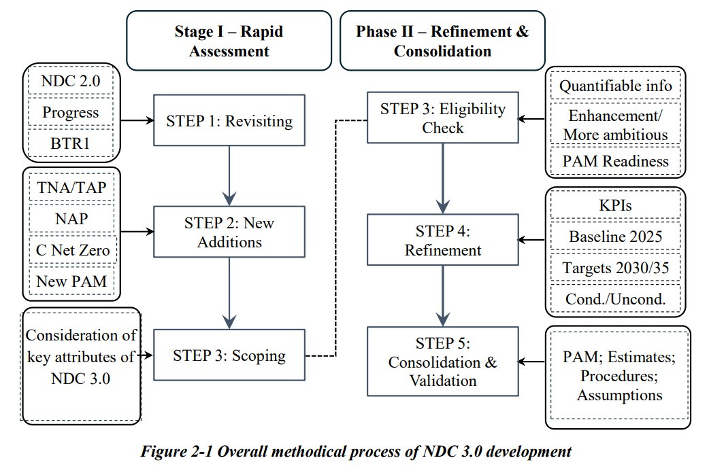
Figure 2-1 Overall methodical process of NDC 3.0 development
The detailed assessment phase was a rigorous and comprehensive process involving broad stakeholder participation. Technical Working Groups (TWGs) from each sector led the refinement and revision of the initial draft NDCs which were developed during this first phase. Extended in-person consultation sessions were held with each sectoral TWG to further refine the draft NDCs. These sessions were facilitated by the appointed technical consultancy team to ensure focused and productive discussions. A standardized methodology and consistent document formats were applied across all sectors to maintain uniformity and align with the core requirements of NDC 3.0, particularly with an emphasis on increased ambition and enhancement.
GESI principles and concepts, as detailed in Section 8, were integrated as a cross-cutting consideration throughout the process. Additionally, dedicated consultations were conducted with sectoral TWGs, youth, women, PWDs and Civil Society Organisations to further embed GESI into the NDCs in a holistic and inclusive manner.
The draft NDC3.0 report was further discussed and refined with the participation of the private sector. These discussions were led by the TWGs and necessary refinements were made accordingly. The finalised list of NDCs were subsequently presented to the TWG members and stakeholders for validation.
The reference period for Sri Lanka's NDC 3.0 is 2026 to 2035. The net GHG emissions and mitigation targets are estimated as the cumulative GHG emissions by sources, and removals by sinks during this reference period. The baseline emissions for the reference period are estimated with a BAU scenario originating from the historical base year in each of the NDC mitigation sectors. For the transport, industry, waste, agriculture, and forestry sectors, the historical base year is taken as 2010, whereas for the electricity (power) sector it is 2013, as this is the base year of the Long-Term Generation Expansion Plan of Ceylon Electricity Board which was used as a reference in the NDC 2.0.
Fundamentally, the estimation of GHG mitigation by sources and removals by sinks in NDC 3.0 is consistent with decision 1/CP.21, paragraph 31, and accounting guidance adopted by the Conference of the Parties serving at the Meeting of the Parties to the Paris Agreement (CMA), and followed the methodical approaches, accounting procedures, common metrics, and relevant assumptions provided by the Intergovernmental Panel on Climate Change (IPCC). More details of these are presented in Section 10 Information for Clarity, Transparency and Understanding. In particular, the IPCC methodologies followed include:
Further, the metrics used for GHG emissions and removals are the Global Warming Potentials (GWPs) of a 100-year time horizon that are listed in Table 8.A.1 of the IPCC Fifth Assessment Report (AR5). The main GHGs covered in the assessment are: carbon dioxide (CO2), methane (CH4), nitrous oxide (N2O). Additionally, Hydrofluorocarbons (HFCs) is included in the industry sector.
Most of the GHG mitigation actions included in the NDC 3.0 are supported by detailed assessments done through other national initiatives, including NDC 2.0 Implementation Plan and progress, Third National Communication (NC3), BTR1, and Carbon Net Zero 2050 Roadmap and Strategic Plan. Additional consideration was given to the availability of quantifiable information, technology and market readiness, and recently updated policies and measures. Accordingly, assumptions and methodological approaches used in the development of NDC 3.0 are fully aligned with those of the NC3, BTR1, and Carbon Net Zero 2050 Roadmap and Strategic Plan.
In accordance with the above GHG estimation methodology, the mitigation potential was determined relative to the BAU scenario. Emission reduction assessments were provided by the relevant line agencies and TWGs.
Located in the low latitudes between 6° and 10° N and surrounded by the warm Indian Ocean, Sri Lanka shows a typical tropical monsoonal climate, being hot and humid all year round with distinct wet and dry seasons. Rainfall of Sri Lanka is of multiple origins. Monsoonal, convectional, and synoptic-scale 'weather systems' formed in the Bay of Bengal account for a major share of the annual rainfall. It varies from 900 mm (southeastern lowlands) to over 5,500 mm (southwestern slopes of the Central Highlands). Sri Lanka is also at risk of cyclones and intense tropical storms, especially during the period of October to December.
Interannual rainfall variability in Sri Lanka is influenced by ENSO and IOD, while intraseasonal rainfall variability in Sri Lanka is dominated by Madden Julian Oscillation (MJO). Considering all four seasons, Sri Lanka rainfall appears to be directly influenced by the MJO's tropical convective signal with the largest positive anomalies in phases 2 and 3 when the MJO convective envelope is located over the Indian Ocean and largest negative anomalies in phases 6 and 7 when the MJO convective envelope is located over the western Pacific. Boreal Summer Intra Seasonal Oscillation (BSISO) also modulates the intraseasonal rainfall variability during south west monsoon (SWM) season during May to September with widespread positive anomalies in phase 1 to 3, while widespread dry conditions can be seen from phase 5 to 8.
Sri Lanka's physical landscape is defined by three main features: the Central Highlands, lowland plains, and coastal regions. The Central Highlands, located nearly at the center of the island, include rugged mountains, plateaus, and valleys, with elevations exceeding 2,5000 m above mean sea level (AMSL). These highlands serve as the country's 'Hydrological Heart' consisting of 103 river basins which collectively drain approximately 90% of the island's land area[1]. The lowland plains surround the highlands, with flat terrain in the north and east and more undulating landscapes in the north-central, north-west south-west. The coastal belt, spanning approximately 1,620 km, lies below 30 m in elevation and features sandy beaches including bays and inlets (excluding lagoons), and mangrove ecosystems which play vital ecological and economic roles.[2]
Climatic Zones: On the basis of average annual rainfall along with some other biophysical parameters, Sri Lanka has been generalised into three major climatic zones in terms of 'Wet zone' in the southwestern region including Central Highlands country with annual rainfall exceeding 2,500 mm, 'Dry zone' covering predominantly the northern and eastern part of the country with an annual rainfall less than 1,750 mm, and an 'Intermediate zone' skirting the Central Highlands except in the south and the west with an annual rainfall between 1,750 and 2,500 mm. Detailed studies on the climatology of Sri Lanka have identified the start of the 'climatic year' or 'hydrological year' as March; the seasonal weather cycle punctuated by the rainfall seasons lasts until February the following year.[3][4]
Climate Seasons: Climate seasons are distinguished by means of the timing of the two monsoons, Southwest Monsoon (SWM) and Northeast Monsoon (NEM) and the two transitional periods separating them, called intermonsoon seasons. During most of the intermonsoon seasons, convective activity is associated with the formation of mesoscale circulations due to differential heating caused by horizontal variations in land surface characteristics.[5] Of the four rainfall seasons, two consecutive rainy season comprise the major agricultural growing seasons of Sri Lanka, namely ' Yala ' and ' Maha '. Generally, the Yala season is the combination of the first inter-monsoon (FIM) and SWM rains. However, since the SWM rains do not fall in the Dry zone, the Dry Zone Yala season only benefits from the FIM rains from midMarch to early May. The major agricultural growing season nationwide, Maha , begins with arrival of the second inter-monsoon (SIM) rains in mid-September/October and continues until late January/February with the NEM rains[6].
Rainfall Patterns and trends: Rainfall is heterogeneous across the island, resulting in high agro-ecological diversity despite the relatively small aerial extent. Annual rainfall in Sri Lanka has historically exhibited significant spatial variations; ranging from 900 mm in seasonally semi-arid regions to over 5,500 mm in the southwestern slopes of the Central Highlands (Figure 3.1(a). Despite this variation, rainfall patterns were once relatively predictable, enabling consistent production cycles and sustaining livelihoods across agro-ecological regions. However, recent trends indicate increasing unpredictability in both the timing and volume of rainfall. Notably, the Southwest Monsoon rainfall has increased over the ry zone, while the Northeast Monsoon rainfall has declined, adversely affecting water availability. According to the Department of Meteorology, the frequency and severity of droughts has intensified during the 2011-2020 decade compared to 2001-2010.[7]
Temperature Patterns: Sri Lanka has historically experienced relatively stable temperatures throughout the year, due to its equatorial location and maritime influence, with altitude being the primary factor driving spatial temperature variability rather than latitude. Mean monthly temperatures exhibit slight fluctuations due to seasonal variations in solar radiation, with additional modifications influenced by rainfall patterns. As depicted in Figure 3-1(b), the country's lowlands generally experience uniform temperatures, while the highlands witness a sharp decline in temperature with increasing elevation.[8] In areas up to 100 to 150 m in altitude, the mean annual temperature ranges between 26.5 °C and 28.5 °C, with an average of 27.5 °C. In contrast, temperatures in higher elevations drop significantly, as seen in Nuwara Eliya, which, at an altitude of 1,800 m, has a mean annual temperature of 15.9 °C. January is typically the coldest month, whereas April and August are the warmest. The mean annual temperature ranges from approximately 27 °C in the coastal lowlands to around 16 °C in Nuwara Eliya, situated at 1,800 m AMSL in the Central Highlands. However, observational data over the recent decades indicate a clear warming trend. Average surface air temperatures have increased by approximately 1.0 °C since 1990.[9] There has been a marked rise in the frequency of warm days and nights, alongside a decline in cold extremes; particularly in the Dry and Intermediate zones. Heat index data shows a growing number of days exceeding 35 °C since 1951, with particularly sharp anomalies recorded in the past five years, often reaching 'extreme caution' and 'danger' thresholds.
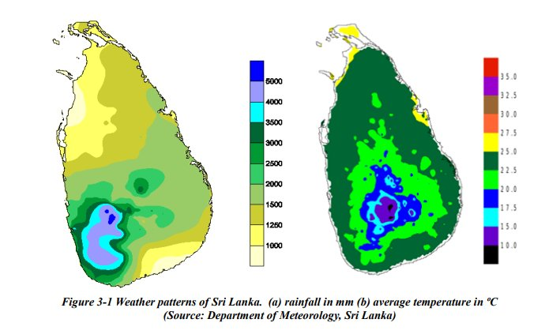
Figure 3-1 Weather patterns of Sri Lanka. (a) rainfall in mm (b) average temperature in ºC (Source: Department of Meteorology, Sri Lanka)
In summary, Sri Lanka's topography and climate present a complex interplay of elevation, monsoonal dynamics, and regional variations in rainfall and temperature. These features not only shape the country's ecological diversity and hydrological regime but also exert a profound influence on livelihoods, agriculture, disaster risk, and climate vulnerability.
As climate change intensifies existing patterns and introduces new uncertainties, understanding and planning for these geographic and climatic characteristics are essential to build resilience and ensure sustainable development across sectors and regions. The status of vulnerability of the country has been emphasised in the NC3 and NDC 2.0.[10] These national documents outline the country's commitment in addressing its vulnerability to climate change in line with its commitments to a low carbon pathway through sustainable development efforts.
Climate change impacts: The Sixth Assessment Report (2021) of the Intergovernmental Panel on Climate Change (IPCC) highlights increasing hydro-meteorological hazards across South Asia due to global warming. As a tropical island in the Indian Ocean, Sri Lanka has been consistently ranked among the top ten countries most exposed to extreme weather events, according to the Global Climate Risk Index between 2018 to 2020. The severity and frequency of these events are rising. Critically, the pace of climate change is outstripping Sri Lanka's readiness to adapt. As a result, poor and marginalised communities are facing the harshest consequences. Notably, around 80% of the population lacking sufficient adaptive capacity and potentially facing a 3.86% reduction in GDP by 2050. Figure 3.2 depicts the vulnerability status of Sri Lanka.[11],[12]
Climate vulnerability: More intense extreme rainfall events have already been observed and are expected to increase further in the future. Indicators like one-day and five-day maximum rainfall totals are rising, signalling that the increase in total rainfall is largely due to these extreme events. This increases risks of flooding, landslides, and soil erosion, especially in vulnerable areas like the Central Highlands. The increasing Southwest Monsoon rainfall will likely increase landslide risks in the western slopes of the Central Highlands, threatening agriculture, livelihoods and infrastructure. Meanwhile, the declining Northeast Monsoon rainfall would increase drought risk in the Dry zone, which supports nearly 70% of the country's Maha season cultivation (major cultivation season). These changes could pose severe consequences for food security and rural livelihoods.Climate variability and the frequency of extreme events have intensified in recent years.[13]The El Niño Southern Oscillation is expected to intensify rainfall generally during the Northeast Monsoon periods, while cyclone risks are projected to remain high, with a greater than 20% chance of destructive wind events in the next decade.[14] Further, in relation to Indian ocean Dipole (IOD),[15] paddy production in Sri Lanka shown an apparent increase during IOD-positive years and a reduction during the IOD-negative years.[16] This underscores the urgent need for climate-resilient infrastructure and robust disaster management systems. Figure 3-2 depicts the vulnerability status of Sri Lanka.[17],[18]
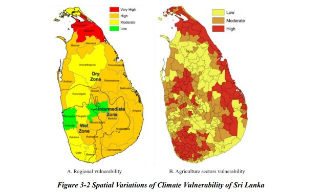
Figure 3-2 Spatial Variations of Climate Vulnerability of Sri Lanka
Between 2011 and 2020, an average of 750,000 Sri Lankans was affected by natural or climate-induced disasters annually, with the direct economic burden estimated at US$ 313 million per year. Nearly 19 million people are expected to live in moderate or severe climate hotspots by 2050, and six in ten individuals face multidimensional impacts from climate change. However, 81.2% of the population lacks adequate adaptive capacity to cope with disasters.[19]
Sri Lanka faced its most severe drought in late 2016 which was followed by a 40% reduction in paddy production in early 2017. Heavy rains in May 2017 further exacerbated the decline in food production, leading to widespread food insecurity, with 229,560 households severely affected, particularly rain-fed farmers and agricultural labourers. These extreme weather events also resulted in 246 fatalities and displaced over 600,000 individuals.[20] Rising temperatures and erratic rainfall patterns are among the most pressing threats, with heat stress and prolonged droughts reducing agricultural yields, particularly for staple crops such as rice. Without effective adaptation measures, the increasing frequency and intensity of extreme rainfall events could lead to riverine flooding, flash floods, and landslides, damaging critical infrastructure and disrupting livelihoods. Additionally, recurrent flooding may heighten disease transmission rates, necessitating targeted research and DRR strategies. The impacts of climate change on agriculture are expected to disproportionately affect Sri Lanka's most vulnerable and marginalised communities, exacerbating poverty and social inequalities. Food insecurity is a serious challenge for Sri Lanka, with an estimated 17% of the population experiencing moderate acute food insecurity in March 2023. Climate change threatens to worsen this situation by affecting food and water availability and reducing agricultural output, including essential staples like rice.[21]
Between 2001 and 2013, 23% of the population was exposed unusually high temperatures, with northern and eastern parts of Sri Lanka are increasingly exposed to extreme heat. Between 2035 to 2044, over 1.1 million people are expected to be exposed to severe floods which is an increase from 930,000 during the period 1971 to 2004.[22]
Coastal areas are also under threat. Around 25% of the population lives within 1 km of the coastline, making them vulnerable to sea-level rise and storm surges.[23] Coastal flooding and salinisation threaten lives, infrastructure, and freshwater supplies.
Climate-induced hazards in Sri Lanka have increased by 22-fold during the last decade compared to 19731983.[24] Accordingly, the recurring disasters have caused recorded damages of nearly US$ 7 billion between 1990 and 2018. However, the total extent of damages is undeniably greater due to costs arising from unrecorded local events and smaller scale events such as regional flooding. Flooding between 1990-2018 has caused over US$ 2 billion dollars in damages (half of which occurred in 2016), while the tsunami of 2004 caused an estimated US$ 1 billion dollars of damages. Sri Lanka annually spends LKR 50 billion (approx. US$ 167 million), around 0.4% of GDP, on climate-induced post-disaster contingent liabilities that arise through floods, droughts, landslides, and storms including relief assistance for damages incurred to housing, infrastructure, agricultural crops, and businesses (UNDP 2023). The Climate Prosperity Plan (CPP 2022) of Sri Lanka has identified the need of US$ 26.53 billion to build resilience to overcome climate challenge during the period 2022-2030 (approx. US$ 75 billion per year).
Rising temperatures and erratic rainfall are reducing yields of key crops like rice. Beyond agriculture, other sectors are also vulnerable. Labour-intensive industries like textiles and garments would be exposed to heat stress and supply chain disruptions. Transport networks are likely to face regular disruption due to floods and landslides. While recovery and reconstruction may temporarily boost sectors like construction, the overall economic impact of climate change will be highly negative. Without strong adaptation, the impacts of frequent, intense and extreme weather events will continue to rise. Floods, landslides, storm surges and droughts will disrupt infrastructure and livelihoods, and likely increase the spread of disease. The poorest communities will be hit hardest, deepening inequalities and slowing development and thus, strengthening adaptive capacity and resilience across all sectors is a national priority.
Future climate: Climate projections are essential tools to understand the potential future impacts on both natural ecosystems as well as socio-economic landscapes. The IPCC's Sixth Assessment Report (AR6) introduced Shared Socio-economic Pathways (SSPs). Out of five emission scenarios of the AR6, namely, SSP 1-1.9 (Very Low Emissions Scenario), SSP 1-2.6 (Low Emissions Scenario), SSP2-4.5 (Intermediate or Moderate Emissions Scenario), SSP3-7 (High Emissions Scenario) and SSP5-8.5 (Very High or BAU
Emissions Scenario), the SSP2-4.5 can be considered as a "middle-of-the-road" scenario. It assumes moderate social, economic, and technological trends, with neither extreme sustainability nor extreme challenges. The radiative forcing level is stabilized at 4.5 W/m² by 2100, leading to moderate global warming. The SSP2-4.5 is viewed as a more realistic and achievable pathway compared to more extreme scenarios like SSP 1-1.9 (very low emissions) or SSP5-8.5 (BAU). Because it is an intermediate pathway, adaptation and mitigation strategies developed under this scenario are often robust enough to be relevant across a range of possible future conditions that Sri Lanka will encounter in the near future. A recent study conducted with the SSP5-8.5 scenario for Sri Lanka has projected country's future climate for 2020-2039, 2040-2059, 2060-2079, and 2080-2100-time windows.[25] It reveals that under the SSP5-8.5 scenario, a steady rise in both maximum and minimum temperatures will experience across the 21st century. During the near-term period (2020-2039), the maximum temperature is projected to increase by about 0.6° C, while the minimum temperature is expected to rise by 0.8° C, resulting in an average anomaly of 0.7° C compared to the baseline. By the mid-century (2040-2059), warming intensifies, with maximum and minimum temperatures projected to increase by 1.4° C and 1.2° C, respectively, giving an average anomaly of 1.5° C. Towards the late century (2060-2079), the maximum temperature is projected to rise by 2.2° C and the minimum by 2.6° C, with an average of 2.4° C. By the end of the century (2080-2100), Sri Lanka could experience an increase of up to 3.3° C in maximum temperature and 3.7° C in minimum temperature, averaging 3.5° C above the historical reference period (Table 3.1). These findings highlight a consistent warming trend, with minimum temperatures rising slightly faster than maximum temperatures, which may likely pose significant implications for agriculture, livestock, water resources, biodiversity, tourism and human health.
|
Table 3. 1 Summary of spacially averaged air temperature anomaly for Sri Lanka under the SSP58.5 scenario Climate Variable |
(SSP5-8.5 Scenario) |
|||
|
2020-2039 |
2040-2059 |
2060-2079 |
2080-2100 |
|
|
Maximum temperature (°C) |
0.6 |
1.4 |
2.2 |
3.3 |
|
Minimum temperature (°C) |
0.8 |
1.6 |
2.6 |
3.7 |
|
Average temperature (°C) |
0.7 |
1.5 |
2.4 |
3.5 |
The same future climate analysis indicates a modest increase in cumulative annual rainfall across the country, accompanied by noticeable spatial and temporal variations.
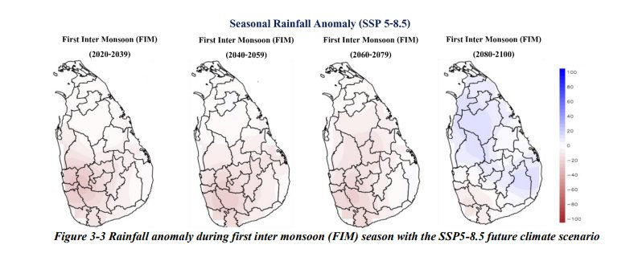
Figure 3-3 Rainfall anomaly during first inter monsoon (FIM) season with the SSP5-8.5 future climate scenario
Figure 3-3 illustrates rainfall anomalies during the first inter monsoon (FIM) season (March-April) under the SSP5.8.5 future climate scenario. The projections indicate no significant change in FIM rainfall over the Dry and Intermediate zones by mid-century, although a slight decline is expected in the Wet zone.
However, by the 2070s, a substantial reduction in FIM rainfall is projected across the entire country, with spatially varied responses observed towards the end of the century.
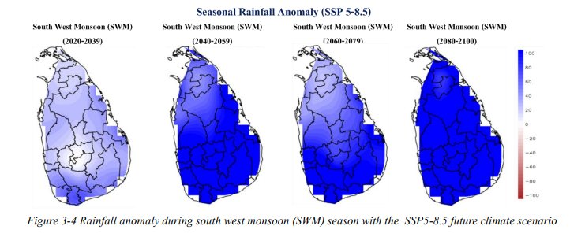
Figure 3-4 Rainfall anomaly during south west monsoon (SWM) season with the SSP5-8.5 future climate scenario
Figure 3-4 presents rainfall anomalies during the south west monsoon (SWM) season (May-September) under the SSP5-8.5 scenario. Projections indicate a significant increase of about 50-60 mm in SWM rainfall across the entire country by mid-century. This positive trend is expected to continue through the 2070s and towards the end of the century, although with less pronounced improvements in the northern region of the island. A similar pattern of rainfall change is also evident during the second inter-monsoon season from October - November (Figure 3-5).
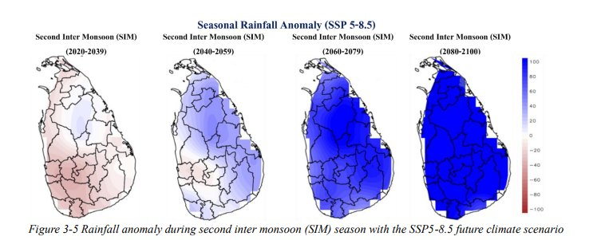
Figure 3-5 Rainfall anomaly during second inter monsoon (SIM) season with the SSP5-8.5 future climate scenario
Figure 3-6 presents rainfall anomalies during the north east monsoon (NEM) season (December-February) under the SSP5-8.5 future climate scenario. Projections indicate a substantial decline in NEM rainfall across both the Dry and Intermediate zones by mid-century, with the reduction being particularly pronounced in the southeastern parts of these zones, especially in Ampara, Badulla, and Monaragala. The situation is expected to worsen by the 2070s, before showing signs of improvement towards the end of the century, notably in the Dry and Intermediate zones.[26]
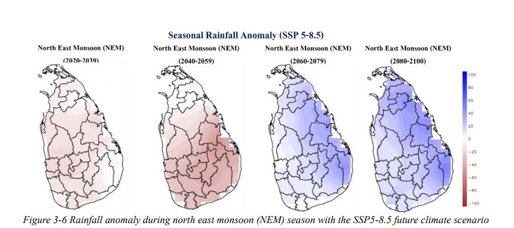
Figure 3-6 Rainfall anomaly during north east monsoon (NEM) season with the SSP5-8.5 future climate scenario
Sea level rise: Sri Lanka has a moderate level of vulnerability to slow onset sea-level rise impacts, assuming a modest sea-level rise of 10 cm by 2030 and 21 cm by 2060. However, a combined impacts of storm surge and sea-level rise would increase the vulnerability of Sri Lanka.[27] Being in the frontline of climate change, Sri Lanka frequently faces repetitive climate-induced disasters with multiple impacts on economic development. Sri Lanka has been identified as one of the most vulnerable countries with an absolute annual loss estimated at USD 3,626 million attributed to climate change. The World Bank[28] estimates that 7.7 % (USD 50 billion) of country's GDP would need to be allocated to face climate disasters by 2050. Climateinduced disasters have threatened Sri Lanka's economic growth while the vulnerable communities in the country are suffering from deteriorating conditions resulting in climate change.
With per capita GHG emissions of approximately 1.02 metric tons of CO2e, Sri Lanka is categorised as a low-emission country. However, emissions have been rising in tandem with economic expansion, which underscores the importance of implementing targeted mitigation strategies. The country's NDCs serve as a framework to reduce emissions and transition toward a sustainable, low-carbon economy.
The energy sector remains the predominant source of national net GHG emissions, contributing 21,696,900 MT of CO2e in 2021. Of this, carbon dioxide (CO2) accounted for nearly 95.3%. Within this sector, transport was the largest emitter, responsible for approximately 46% of energy-related emissions, followed by power generation at 36%. Notably, until recently, the energy supply portfolio of the country was dominated by petroleum but due to the 2022 fuel crisis, biomass became the leading energy source (36%), followed by petroleum (32.2%). Rural areas mainly use fuelwood for cooking, though bottled LP gas use is rising.
Agriculture, including livestock, is a key pillar of Sri Lanka's economy, contributing to employment, food security, and rural development. However, it is also a major source of GHG emissions, primarily due to rice cultivation and livestock breeding. The sector significantly contributes to methane (CH₄) and nitrous oxide (N2O) emissions, with additional GHG emissions generated from field burning of crop residues. In 2021, the total GHG emissions from agricultural activities amounted to 6,070,100 MT CO2e. The other sectors of GHG emission include Industrial Processes and Product Use (IPPU) and waste, in which the annual emissions are reported as 519,290 MT CO2e and 657,900 MT CO2e, respectively.
The land use, land-use change, and forestry (LULUCF) sector in Sri Lanka is significant due to its dual role in climate change, contributing simultaneously to climate change mitigation and adaptation, and its contribution to biodiversity conservation. The LULUCF sector has demonstrated significant carbon sink capacity, with total net removals reaching -9855,170 MT CO2e in 2021.
Sri Lanka, as a developing nation, faces both opportunities and challenges in addressing climate change. The pace of climate change outstrips Sri Lanka's readiness to respond to its effects which are already severely affecting the country's poorer regions.[30] Drawing on lessons from global studies on similar economies, there are key opportunities and potential challenges which could provide insight to guide Sri Lanka's climate actions.
Transition to Renewable Energy and Improving Energy Efficiency: With abundant solar, wind, and hydropower resources, Sri Lanka has a clear opportunity and expressed ambitious commitments to move towards total electricity generation based on renewable sources, to transition away from fossil fuels toward cleaner, decentralised energy systems. Expanding renewable energy capacity and enhancing energy efficiency will not only strengthen energy security and reduce reliance on costly fuel imports but also generate green jobs and significantly lower greenhouse gas emissions. Transition to cleaner energy fosters innovation and provides long-term environmental and economic benefits. The Government of Sri Lanka is in the process of developing a just energy transition framework for the energy sector to promote the adoption of renewable energy and energy efficiency in underserved markets, while focusing on improving the climate resilience of MSMEs and low-income groups. Key opportunities include improving energy efficiency and increasing renewable energy, which can reduce emissions, enhance energy security, and promote sustainable development.
Access to International Climate Finance: As a signatory to the Paris Agreement, Sri Lanka is eligible to access international climate finance mechanisms such as the Green Climate Fund (GCF). The support received has been useful in areas such as sustainable livelihoods, water resources, land use, and biodiversity management. However, significant challenges persist, both in terms of securing adequate levels of financing and in strengthening the national absorptive capacity to effectively implement, manage, and scale such interventions. The Government recently drafted a Climate Finance Strategy (2025), prioritising 12 financial tools which could be leveraged according to the context of Sri lanka to mobilise investment to implement climate actions.
Nature-based Solutions (NbS) and Ecosystem Restoration: Sri Lanka's rich biodiversity provides a strong foundation for nature-based solutions (NbS) to address climate change and environmental degradation. Recent initiatives have included large-scale mangrove replanting and reforestation programs,[31]and the integration of NbS into urban planning, particularly for flood control and water resource management.[32] A growing potential exists to better engage the private sector in NbS by having innovative incentive mechanisms to support these interventions,[33] and mainstreaming NbS more effectively into policies such as urban development. The Government of Sri Lanka is also exploring the ways and means of enhancing climate-nature linkages particularly through improving the complementarity between the national targets under the three Rio Conventions.
Sustainable Tourism and Agriculture Transformation: The agriculture and tourism sectors are nationally and socially important sectors and can contribute to enhancing climate resilience, promoting environmental sustainability, and supporting economic diversification. Sri Lanka can achieve transformative change in agriculture by shifting towards climate-resilient, high-value crops, adopting climate-smart agricultural techniques, and integrating digital technologies across value chains. Support for agri-tech startups, applied research, and farmer innovation ecosystems will be essential to drive productivity, improve market access, and build adaptive capacity.
In the tourism sector, the country's rich biodiversity and cultural heritage provides a strong foundation for expanding nature-based and cultural tourism, which aligns with current national policies to unlock the full potential of sustainable tourism. These segments not only attract environmentally conscious travelers but also create meaningful employment opportunities for rural youth and incentivise local communities to protect their natural ecosystems. Furthermore, tools such as green certification and eco-labelling can improve Sri Lanka's competitiveness in global tourism and agricultural markets, especially among highvalue and eco-sensitive consumers.Collectively, these strategies offer a pathway toward a more inclusive, sustainable, and climate-resilient rural economy.
Digital Tools and Climate Data: Sri Lanka can harness digital technologies and climate data to significantly enhance climate change adaptation and mitigation across multiple sectors. In climate-smart agriculture, digital tools can help farmers monitor weather patterns, soil conditions, and crop health to improve productivity and resilience. In water resource management, data-driven solutions can optimise water distribution, while providing early warnings for droughts and floods. Disaster risk reduction (DRR) efforts can benefit from advanced early warning systems powered by real-time climate data and geospatial analytics. In the energy sector, digital platforms can support the integration and management of renewable energy sources. Additionally, coastal zone management can be improved using remote sensing to address challenges such as sea-level rise and coastal erosion. Ecosystem monitoring through satellite imagery and sensor networks can track biodiversity and forest cover, while digital outreach tools can play a key role in raising public awareness about climate risks and adaptation measures.
To scale up these efforts, Sri Lanka can build on its National Digital Policy, Technology Needs Assessment, and existing international collaborations. There is also potential to unlock private sector engagement, leverage climate finance for technology investments, and strengthen institutional capacity in digital skills, data governance, and regulatory frameworks for technology adoption. Implementing these strategies will enhance Sri Lanka's adaptive capacity and support the transition toward a more climate-resilient and sustainable future
Sri Lanka's limited adaptive capacity, particularly in sectors like water, agriculture, and health, hinders effective climate responses. Vulnerable communities also face socio-economic pressures. While the Paris Agreement offers cooperation, its voluntary nature and the lack of enforceable measures limit the accountability of developed nations, affecting climate finance resources for adaptation, mitigation and L&D measures in Sri Lanka.
Limited Adaptive Capacity and Institutional Constraints: Sri Lanka's institutional readiness for climate action remains uneven across key sectors such as agriculture, health, water, et cetera. Many line agencies have limited technical capacity, risk-informed planning tools, and cross-sectoral coordination mechanisms necessary to integrate climate change into sectoral policies and investments. In particular, limited climate risk assessments, inadequate mainstreaming of adaptation measures, and silo-ed institutional mandates hinder cohesive responses to increasingly complex and compounding climate impacts.
Financial and Resource Constraints: Sri Lanka's ongoing economic crisis significantly constrains both public investment in climate action and the flow of private capital into green initiatives. Fiscal space is limited, which delays the implementation of NAPs and infrastructure upgrades. Moreover, while Sri Lanka is eligible to access multilateral climate change funds (e.g., GCF, Adaptation Fund), bureaucratic bottlenecks, limited proposal development capacity, and stringent access requirements have made it challenging to mobilise funding at the required scale. Mechanisms to de-risk private investment and catalyse blended finance remains underdeveloped. Further, limitations in tracking climate funding flows causes difficulties in enhancing transparency and accountability. However, the Government of Sri Lanka is now scoping the possibility of adopting climate budget tagging which may help to address this.
Social Vulnerability and Inequality: A large share of Sri Lanka's population depends on climate-sensitive livelihoods, particularly in agriculture, fisheries sectors, and informal labor, making them highly vulnerable to climate shocks. Poverty, gender inequality, and limited access to social protection systems, further exacerbates the vulnerability of marginalised groups, including women, youth, and rural communities. These groups often lack the resources, information, and infrastructure needed to recover from climateinduced disruptions, deepening inequality/grievances and eroding resilience. Additionally, the BTR1 highlights that limited gender disaggregated data availability can hinder effective policy and decision-making, this is particularly concerning as it can hamper efforts to ensure resources reach the most vulnerable communities. The Gender Responsive Climate Security Assessment for Sri Lanka highlights that climate stressors can worsen long-standing issues of social cohesion and equitable development. Unequal access to climate adaptation support, particularly in formerly conflict-affected areas, can deepen perceptions of bias and neglect, straining inter-ethnic and inter-religious relations. Urgent, integrated responses are needed to address these interlinked challenges.[34] Further, both rapid-onset events (e.g., floods, cyclones, landslides) and slow-onset changes (e.g., drought, seasonal shifts) are increasingly driving displacement and serving as push factors, particularly in rural communities that rely on agriculture. These environmental factors often interact with other socioeconomic pressures, such as land degradation, food insecurity, and livelihood decline, thereby shaping complex mobility decisions.[35] However, in hindsight, climate-induced migration can serve as an adaptive strategy that strengthens rural communities by enabling access to better employment opportunities, provided it is supported by appropriate capacity-building measures and guided through safe, regular, and orderly migration pathways.
Challenges of Binding Commitments Under the Paris Agreement: While the Paris Agreement establishes an important global framework for climate action and is legally binding in terms of procedural commitments, its substance is largely based on voluntary pledges, limiting enforceability. Article 15 of the Agreement establishes a facilitative and non-punitive compliance mechanism that does not impose binding sanctions or penalties on countries that fail to meet their commitments. This voluntary nature, while encouraging inclusivity and broad participation, may result to delays in achieving ambitious climate finance and implementation goals, leading to concerns about credibility and trust, particularly in developing countries like Sri Lanka, which count on timely and consistent support to advance their climate priorities. Strengthening transparency, fostering international cooperation, and encouraging stronger political will remain essential to address these challenges and enhance global climate ambition.
Advancing Climate Priorities in a Complex Global Landscape: Acknowledging the complexities of global geopolitical dynamics, it is critical to recognise that evolving concerns over climate justice, as well as shifting donor priorities, constitute challenges to maintaining strong international climate leadership and cooperation. These factors have the potential to influence the stability of climate finance flows and the consistency of global commitments, emphasising the importance of ongoing dialogue and collaboration. For developing countries like Sri Lanka, these circumstances highlight the importance of resilient, adaptive strategies and cooperative partnerships in ensuring long-term support for climate action, particularly in areas that require long-term investment and technological collaboration.
Capacity Gaps in Implementation and Monitoring: While Monitoring, Reporting, and Verification (MRV) systems are being developed for the industry and AFOLU sectors, they are yet to be fully operationalised. Effective climate policy implementation is hampered by isolated, weak MRV systems, especially at the sub-national level. Local Authorities often lack awareness, the technical expertise, data systems, and budgetary support needed to execute and monitor adaptation and mitigation projects. Furthermore, inter-agency coordination, both horizontal across ministries and vertical between national and local governments is limited, resulting in fragmented implementation and missed synergies.
The implementation of the NDC 3.0 targets across six sectors aims to reduce total GHG emissions during the ten-year period from 2026 to 2035 by 116,075,800 MT CO2e. This is equivalent to 20.09% of the total emissions of 577,848,900 MT CO2e in the BAU scenario, comprising 8.11% unconditional and 11.98% conditional commitments. Among the NDC 3.0 interventions, the highest contribution to GHG mitigation is expected from the electricity (power) sector with 75.0%, followed by agriculture (including livestock) at 7.5%, industry 7.0%, transport 6.3%, and waste 4.2%. Furthermore, the forestry sector contributes an additional 4.5% increase in net carbon removal (8,477,900 MT CO2e) over the BAU scenario.
Note that the total emissions presented in Table 4.1 does not include the emissions from the forestry sector, which is incorporated within the net removal.
|
Table 4.1 GHG mitigation and net removal targets in NDC 3.0 |
Cumulative GHGEmissions/Net Removals ('000 MTCO 2e ) (2026-2035) |
%Reduction in NDC 3.0 |
|||||
|
Sector |
BAU Scenario |
Reductions in NDC 3.0 Mitigation Scenarios |
Mitigation Scenarios with respect to BAU emissions |
||||
|
Total |
UC |
C |
Total |
UC |
C |
||
|
Electricity (Power) |
257,319.9 |
87,090.3 |
33,344.1 |
53,746.2 |
33.85 |
12.96 |
20.89 |
|
Transport |
150,986.8 |
7,276.7 |
2,332.4 |
4,944.2 |
4.8 |
1.5 |
3.3 |
|
Industry |
62,448.2 |
8,130.2 |
4,508.6 |
3,621.6 |
13.0 |
7.2 |
5.8 |
|
Waste |
23,567.1 |
4,903.3 |
2,026.0 |
2,877.3 |
20.8 |
8.6 |
12.2 |
|
Agriculture |
83,526.9 |
8,675.4 |
4,646.3 |
4,029.1 |
10.4 |
5.6 |
4.8 |
|
Total emissions |
577,848.9 |
116,075.8 |
46,857.4 |
69,218.4 |
20.09 |
8.11 |
11.98 |
|
Forestry (net removal) |
188,888.5 |
8,477.9 |
1,812.0 |
6,665.9 |
4.49 |
0.96 |
3.53 |
UC - Unconditional; C - Conditional
The NDC 3.0 interventions are significantly more ambitious than NDC 2.0 across all the sectors, with the emission reduction increasing from 65,210,800 MT CO2e (2021-2030) to 116,075,800 MT CO2e (20262035), as depicted in Table 4.2.
|
Table 4.2 Comparison of GHG mitigation and net removal targets between NDC 3.0 and NDC 2.0 Sector |
Cumulative GHGEmission Reduction ('000MTCO 2e ) |
||
|
NDC 3.0 (2026-2035) |
NDC 2.0 (2021-2030) |
%Increase |
|
|
Electricity (Power) |
87,090.3 |
49,093.0 |
77.40 |
|
Transport |
7,276.7 |
5,348.0 |
36.06 |
|
Industry |
8,130.2 |
3,570.1 |
127.73 |
|
Waste |
4,903.3 |
2,598.6 |
88.69 |
|
Agriculture |
8,675.4 |
4,601.1 |
88.55 |
|
Total |
116,075.8 (20.1% reduction) |
65,210.8 (14.9% reduction) |
78.00 |
|
Forestry (net removal) |
8,477.9 |
2,357.0 |
259.69 |
Among the mitigation sectors, the highest ambition in reducing GHG emissions (as a percentage change) is reflected in the forestry sector (259.69% ) in net carbon removal, followed by the industry (127.73%), waste (88.69%), agriculture (88.55%), and power (77.40%) sectors, respectively. The transport sector shows the lowest percentage change (36.06%), highlighting the challenges the sector faces in decarbonisation. In terms of magnitude, the power sector shows the highest increase with 37,997,300 MT CO2e in contrast to NDC 2.0, followed by the industry 4,560,100 MT CO2e, agriculture 4,074,300 MT CO2e, waste 2,304,700 MT CO2e, and transport 1,928,700 MT CO2e sectors, respectively.
Sri Lanka's energy sector is mature and diverse, with universal electrification since 2016, and widespread access to petroleum. With abundant renewable energy resources, Sri Lanka maintains a broad primary energy mix. Until recently, the energy supply portfolio of the country was dominated by petroleum but due to the 2022 fuel crisis, biomass became the leading energy source (36%), followed by petroleum (32.2%). Rural areas mainly use fuelwood for cooking, though bottled LP gas use is rising.
In 2024, Sri Lanka had 6,048 MW of installed power generation capacity, with 64% from renewables (large and small hydro, wind, solar, and biomass). Of the 17,365 GWh generated, 55% was from renewable sources in 2024.
Sri Lanka will reach a key milestone in 2025 with the completion of its last major hydropower plant, following Uma Oya's energising in 2024 and the Moragolla hydro power plant expected to be commissioned in 2025. In 2024, Sri Lanka energised its first two pilot floating solar plants. On the thermal generation front, the commissioning of the Kerawalapitiya power plant, which is set to run on natural gas (NG), once the LNG infrastructure is complete. These gains bring Sri Lanka closer to its 2030 interim target of 70% Renewable Energy share in the electricity generation mix, supported by the growing investments in solar, wind, hydro, and biomass.
These achievements highlight progress on the supply side, but understanding demand is critical for future energy strategies. From 2011 to 2021, electricity demand grew by around 4% annually, with peak demand rising by approximately 3% per year. However, the COVID-19 pandemic disrupted this growth trajectory in 2020, resulting in a 1.8% decrease in electricity use. In 2021, electricity usage rose by 6.2% as the economy rebounded, but this was followed by a prolonged crisis period, which caused business closures, job losses, and lower household incomes. This downturn led to a significant contraction in electricity demand from 2021 to 2024, leading to a level shift in the economy, prompting future generation plans to adjust to slower demand growth. In this context, the Ministry of Energy (formerly, the Ministry of Power and Energy) is focusing on ensuring continuous electricity and fuel supply, and a stable energy sector for national energy security. The Ministry of Energy aims to drive Sri Lanka towards further socio-economic progress, envisioning a green economy attained through a 'people-centric energy transition'.
Sri Lanka's National Energy Policy and Strategies (2019) envisions secure, equitable, and sustainable energy, focusing on maximising domestic renewable energy resource utilisation, diversifying the energy mix, and reducing fossil fuel imports. The sixth pillar of the Energy Policy, "Caring for the Environment," outlines a commitment to reducing environmental harm and supporting climate mitigation through cleaner energy and national-level sustainability strategies. The seventh pillar, 'Enhance Share of Renewable Energy,' focuses on reducing fossil fuel reliance by increasing renewable energy integration, while the fourth, fifth, and ninth pillars target 'Improving Energy Efficiency and Conservation', 'Enhancing Self Resilience', and 'Securing Land for Future Energy Infrastructure', respectively which in turn links directly to reducing GHG emissions.
Sri Lanka has launched initiatives to implement sustainable energy programmes, guided by the National Energy Policy and Strategies of Sri Lanka (2019). The policy aims to optimise indigenous renewable energy[36], diversify the generation mix, and reduce fossil fuel dependence. It emphasises developing renewable sources based on resource potential, economics, technology maturity, and supply quality, with the goal of increasing the clean energy share in electricity generation.
Aligning with the present government's policy statement under the theme of a 'people-centric energy transition', significant growth is expected in increasing power generation from wind, solar, hydro and biomass. Further, Demand Side Management (DSM), reducing transmission and distribution losses, converting existing oil-based combined cycle power plants to NG, and introducing new gas power plants will support emissions reduction and contribute to the NDCs. Newer business models are being explored to enhance private sector participation in the energy industry, using concepts such as power wheeling and aggregation schemes as well as futuristic concepts such as green hydrogen and ammonia could propel Sri Lanka to become an energy exporter. This has already attracted the attention of the Government as viable thrusts in transitioning to an inclusive green economy. Furthermore, new coal power plant capacity additions are not expected in the future. The long-term target of the power sector is to achieve carbon neutrality by 2050, and the National Energy Policy and Strategies has been framed on this basis.
In this context, the power sector interventions have been included in both the NDCs, which drives the country's strategic reduction of GHG emissions and in the NAP. Further, Sri Lanka has fostered private sector investment in renewable energy through enabling policies such as feed-in tariffs and rooftop solar power connection schemes, including 'net metering', 'net accounting', and 'net plus' models. Energy efficiency is encouraged through tiered electricity tariffs, Time-of-Use (ToU) billing, and consumer incentives to switch from incandescent to light-emitting diode (LED) lighting. The Energy Efficiency Improvement and Conservation (EEI&C) programme plays a crucial role in mitigating GHG emissions from the power sector, through appliance labelling, codes and standards and efficient system technologies, covering efficient appliances, efficient buildings and mandatory energy performance benchmarks for certain scheduled sub-sectors of the economy.
The enhanced NDC 3.0 represents a significant improvement to NDC 2.0, considering the current trajectory, recent developments in the electricity (power) sector, the economic situation, and linked to that, the finance, technology transfer, and capacity building needs of Sri Lanka. Table 4.3 outlines the enhanced NDCs of the power sector, detailing key interventions to be implemented between 2026 to 2035, with specific activities to address GHG emissions and support the effective implementation of these targets.[37]
|
Table 4.3 NDCs in Electricity (Power) Sector (mitigation) NDC# |
NDCs with Description |
|
NDC 1 |
Enhance renewable and clean energy contribution to the national electricity generation mix by increasing Solar PV, Wind, Hydro and Sustainable Biomass based electricity generation. |
|
Description: Sri Lanka has a well-established framework for renewable energy development. It evolved from a thriving small hydropower dominant structure to a fully- fledged large-scale project dominated industry over the last three decades. Earlier supported by a lavish feed-in-tariff, the industry is currently driven by its own economic merit, realised by the scale of implementation and the steep learning curve. However, to absorb the large- scale variable renewable energy resources into the national grid, expansion of the transmission network and large-scale modernisation of the national transmission grid are required. With impending reforms in the power sector, the realisation of renewable energy ambitions will become even more challenging. The rooftop solar sector has shown a steep growth trajectory, driving a healthy demand for a trained workforce, contributing to increased participation of women in the energy industry. With the implementation of NDCs, renewable energy growth is expected to create more employment including for women and youth. This NDCencompasses the gamut of activities which need to be undertaken to further increase the share of renewables in electricity supply, aiming to add substantial capacity of renewable sources such as wind, solar (rooftop, small-scale and large solar PV), as well as large and small hydro power plants. It is expected that an additional capacity of 5,231MW will be generated from clean sources over the period from 2026 to 2035, out of which 1,247 MWis unconditional. |
|
|
NDC 2 |
Introduction of grid-integrated energy storage systems, such as Pumped Storage and Battery Energy Storage Systems (BESS), to increase absorption of renewable energy and reduce thermal generation as a conditional measure. |
|
Description: Increased penetration of generation technologies in the national grid, such as solar and wind, has called for a fresh perspective on managing supply and demand. The transmission network, which connected large-scale centralised generators with distant load centres, is getting replaced by a more widespread and denser network interspersed with loads and smaller-scale generators. Load flow patterns are showing rapid changes in form and magnitude, requiring energy storage, an essential element of the grid in the future. ThisNDC looks at transmission grid level energy storage such as a 600 MW pumped storage power station and 750 MW/ 2,550MWh grid scale batteries, distribution grid level energy storage and also user level energy storage behind the meter as possible interventions to ensure safe and reliable operation of the national grid which will support to absorb the renewable energy targets mentioned in NDC 1. |
|
|
NDC 3 |
Implement Demand Side Management (DSM) measures by promoting energy-efficient equipment, technologies, and system improvements in a national Energy Efficiency Improvement and Conservation (EEI&C) programme covering commercial, institutional, and residential sectors. |
|
Description: Placing a strong emphasis on rapid advances in end-use technologies, this NDC envisages a significant market transformation in the electrical appliances market. Several measures, ranging from policy formulation, new regulations, mandatory minimum standards, to bulk procurement of energy-efficient equipment, are proposed to encourage market transformation, with lighting improvements taken as an unconditional measure. Further, replacement of inefficient appliances with modern, efficient appliances with greater penetration at present, and establishing stringent efficiency standards for appliances with a significant prospect for a growing demand, will be the hallmark of the appliance labelling programme. Two regulatory interventions, will make it mandatory for new buildings to be energy efficient and certain sub-sectors of the economy to achieve a pre-determined |
|
|
benchmark in energy performance, these measures are also expected to realise large-scale efficiency gains under this NDC. With these changes, it is estimated that it will lead to a substantial demand reduction of nearly 30,000 GWh over the ten-year period, a robust demand for energy efficiency services will be created in the country, with a significant number of jobs for women and youth. |
|
|
NDC 4 |
Conversion of existing fuel oil-based combined cycle power plants to Natural Gas (NG) and establishment of new NG plants as conditional measures (once the necessary infrastructure is available). |
|
Description: The increased penetration of renewable energy in the national grid will demand more flexible power plants due to the significant variability inherent in those resources. In this context, NG-based flexible power plants are a valuable alternative to base load power plants, such as coal-fired power plants, aiming to complement renewable resources and ensure reliability and resource adequacy. These flexible power plants are expected to have fast start-up, fast ramping and deloading capabilities to support the power system in managing the daily net load fluctuations typically seen with high VRE levels. This NDC paves the way for LNG to be introduced to existing liquid fuel generation systems and also as a direct replacement of liquid and solid fuel burning power plants, which were scheduled in the baseline scenario (BAU case) of the Long-Term Generation Expansion Plan (2013- 2032). This NDC both foresees the conversion of existing fuel oil-based combined cycle power plants to NG in the range of 600 MWinstalled capacity, and the new establishment of a total NGcapacity of 1,000 MWasa replacement for coal power plants scheduled in the baseline scenario (BAU case). In view of achieving carbon neutrality, these power plants are eventually expected to be operated on a NG and hydrogen blend once hydrogen becomes widely available as an energy commodity. |
|
|
NDC 5 |
Conduct R&D activities and other necessary studies to implement clean energy technologies and other grid-supporting infrastructure to increase readiness to deploy such technologies in the future. |
|
Description: This NDC is designed to reinforce the sustainable and innovative growth trajectory of the electricity sector. Through targeted and anticipatory research and development (R&D) investments in advanced technologies and strong public engagement, Sri Lanka can embark on a long-term, sustainable growth path that is backed by a dynamic power sector. Key elements in this pursuit include modern sustainable energy technologies, ranging from generation technologies such as floating solar and offshore wind and storage technologies such as green hydrogen (which are new to Sri Lanka), to end-use technologies such as demand response measures drawing on extensive technical collaboration with developed countries. Furthermore, digitalisation of the electricity industry with smart grid and automation forms another strategic axis of the planned investments and energy efficiency improvements and performance and resilience enhancements of energy conversion facilities which are fostered to counteract degradation and exposure to climate hazards. To create the necessary human resources to facilitate the above, women and youth will be engaged through appropriate empowerment programmes. Further, education programmes will be conducted to enable children and youth to shoulder bigger responsibilities in an increasingly sustainable energy-dominated electricity sector in the future. Vocational training programmes will also be implemented such as the virtual net training programme, promoting |
|
|
green skills and public awareness of renewable energy benefits. |
*In addition to the above actions of NDCs in this sector, new appropriate actions will be identified and incorporated into the NDC implementation plan.
It is expected that the implementation of NDC 3.0 will result in substantial GHG emission reductions over the period from 2026 to 2035 compared to the baseline scenario (BAU case) 38 . It is estimated that the implementation of the NDCs in the power sector will cumulatively reduce GHG emissions by 26.2% by 2035, of which 5.3% is to be achieved unconditionally and 20.9% conditionally depending on the receipt of international financial, technology transfer and capacity-building support. These percentage reductions are equivalent to an estimated cumulative mitigation impact of 13,604,900 MT CO2e unconditionally and 53,746,200 MT CO2e conditionally, totalling 67,351,100 MT CO2e in the period from 2026 to 2035. Note, that these targets exclude the emission reduction that would occur from projects implemented under NDC 2.0, which is expected to provide an additional 7.7% emission reduction benefit during the above period, resulting in an overall reduction of 33.8% compared to the BAU, which is reflected in Figure 4.1.
These expected GHG emission reductions represent a clear progression from the previous NDC 2.0, which pledged a total reduction of 49,093,000 MT CO2e during the ten-year period from 2021 to 2030, similarly reporting approximately a 5% reduction to be achieved unconditionally and a 20% reduction, conditionally.
Figure 4.1 presents the GHG emissions reduction projections for the ten-year period from 2026 to 2035 against the BAU scenario from the historical base year 2013, projected until the year 2035. Three key GHG emission reductions are shown: The BAU scenario projecting the electricity (power) sector GHG emissions from 2013 until 2035, the unconditional and conditional GHG emissions scenarios from 2026 to 2035 in line with the NDC 3.0 enhancement.
Moreover, a second reference scenario projects the GHG emissions from 2026 until 2035, with the consideration of the advances made through NDC 2.0 until the year 2025. Note, the overall NDC targets are formulated based on the BAU scenario as described above and the additional reference is included to underscore how the NDC 3.0 further enhances the ambition of the NDC 2.0, which already has led to considerable reductions over the past years.
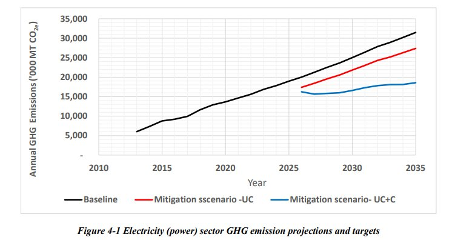
Figure 4-1 Electricity (power) sector GHG emission projections and targets
Implementing the power sector's ambitious NDC targets is a national priority for Sri Lanka, with key institutions leading this effort and significant resources allocated for its achievement. Sri Lanka pledges to mobilise national financial, technological, and human resources to achieve a 5% emission reduction, totalling 12,866,000 MT CO2e by 2035. However, to drive down GHG emissions in the electricity (power) sector even further, additional international financial, technological, capacity building support is needed. The following technological and capacity-building needs, which in turn are linked to increased mobilisation of international funding and investments, have been identified.
A stable, efficient grid is vital for the clean energy transition, requiring smart grids, Information and Communication Technology (ICT) interventions, Advanced Metering Infrastructure (AMI), smart inverters, and grid-friendly devices for better voltage and frequency control at the distribution level. Associated with the grid improvements, the feed-in of renewable energy from more volatile sources such as wind and solar requires improved forecasting and management technologies to ensure stability and maximise throughout in high renewable penetration scenarios. In safeguarding against potential foreign and domestic cyber threats, a reinforced cybersecurity infrastructure and ICT protocols to safeguard critical energy assets are required.
To support the NDC goals and low-carbon power, national institutional capacities need strategic enhancements aligned with technological needs. Key capacity needs include policy planning, technical skills, system operation, renewable energy management, regulation, market design, R&D, public awareness, and stakeholder engagement. Policy analysts and planners in the core departments need better expertise in resilient energy systems, integrated planning, and long-term decarbonisation pathways. Policymakers also require stronger capacity to develop complex regulations on DSM, generation, distribution, and ToU tariffs, which are technically complex policy issues requiring enhanced capacities across different institutions.
Driving the technical dimension of the envisioned clean energy transition, technical officers, engineers, and system operators benefit greatly from skills development in different areas such as smart grid operation, energy storage systems, power electronics and ICT systems. Narrowing down the required skill set of system operators, additional training on grid operation under high renewable energy scenarios, real-time dispatch, system balancing, and flexibility measures could greatly benefit the power sector of Sri Lanka. As a key means to enable knowledge retention and continuity, as well as improve domestic innovative potential, R&D is fostered in Sri Lanka, and additional innovative research programmes and pilot projects for emerging grid technologies and clean energy transitions are foreseen.
Lastly, educating future citizens, public awareness and stakeholder engagement programmes with a strong emphasis on youth and women, aimed at improving the knowledge base on the benefits of a low-carbon electricity systems and participation in demand response and distributed generation schemes across communities, local governments, and industries are identified as effective support capacity-building measures which require international support.
The transport sector is the largest user of imported petroleum and a major source of GHG emissions. In 2021, the sector emitted 9,928,010 MT CO2e, or 45.8% of the energy sector's emissions (related to fuel combustion).[39] The transport sector contributes to a major share of the 78.2% of the energy demand in petroleum products, with 139.1 PJ in 2021. 40 Under the BAU scenario, the public transportation share will decline, while private vehicle use in urban areas increases, leading to more traffic, accidents, and air pollution, causing adverse impacts on the economy and the environment.
The present government's vision emphasises transport as a public service, promoting eco-friendly, sustainable, and people-oriented transport that is safe and efficient. It aims to increase the public transport share to 70%, improve efficiency, and provide specialised services to support GESI considerations including accessibility for PWDs.[41] Accordingly, the updating process of the transport policy has been initiated. Hence, the present socio-economic situation and the government's vision, is expected to have profound impacts on the transport sector, society, the economy, and the environment.
The transport sector is part of Sri Lanka's NDCs and NAP, with NDC 2.0 listing 13 actions under the AvoidShift-Improve (A-S-I) framework[42], aiming to reduce GHG emissions by 4.82% (1.54% unconditionally, 3.27% conditionally), equating to 5,348,000 MT CO2e from 2021 to 2030. However, the implementation progress of these actions during the 2021 to 2023 period has not been reported due to data gaps[43], most activities could not progress as expected due to the country's fiscal constraints in the period under review.
NDC 3.0 builds on NDC 2.0, considering the sectoral needs and local challenges like finance, technology transfer, and capacity building. It retains the A-S-I framework, aiming to improve the transport system, trip, and vehicle performance while revitalising public transport. Table 4.4 presents the NDCs in the transport sector, with a concise description of each NDC with key interventions, key performance indicators (KPIs) and targets for the 10-year period from 2026 to 2035.
|
Table 4.4 NDCs in Transport Sector (mitigation) NDC# |
NDCs with Description |
|
NDC 1 |
Transport sector system improvement. |
|
Description: The transport sector system improvement intends to cover a broader set of interventions, such as the avoidance of the need to travel, traffic and traffic light management, parking management, multi-purpose/multi-modal transport centres, intelligent transport management systems, and improved road architecture. However, due to the limited availability of quantifiable data, the GHG mitigation estimate in this NDC is limited to the introduction of Park & Ride systems, which will facilitate the optimum utilisation of transport infrastructure. This will lead to the use of a lesser number of personal vehicles in more congested urban areas, thus, easing traffic and improving the performance of vehicles that are operated in these areas. Presently, two Park &Ride systems are in operation at two locations, and the target is to increase the number to five systems by 2030 and seven systems by 2035. The design and operation of the above Park &Ride system, related infrastructure, facilities, and services should ensure the accessibility and safety of women, older persons, children, and PWDs. |
|
|
NDC 2 |
Strengthen and promote public passenger transport. |
|
Description: Aligning with the government's priorities, this NDC intends to strengthen the public transport system (both buses and railways) and their services to revitalise and modernise the public transport system. The overall target of these interventions is to increase the share of public transport from 35% to 40% by 2030, and 50% by 2035. This is achieved by increasing the share of bus transport from 30.2% to 35% by 2030, and 42.5% by 2035, and that of railways from 4.7% to 5%by2030, and 7.5% by 2035. The shifting of passengers from personal vehicles to public transport modes will reduce petroleum consumption and GHG emissions significantly. The shift to public transport and to achieve these highly ambitious targets reflects the need for a transformational change in the sector which is driven by low-carbon technological solutions, including digitisation, improved accessibility and frequency of rail operations, integrated last-mile services, and infrastructure development, while providing improved |
|
NDC# |
NDCs with Description |
|
facilities and services. Further, as with NDC 1, the design and operation of such public transport systems are to be implemented in consideration of the specific needs and safety of women, older persons, children, and PWDs. |
|
|
NDC 3 |
Shift freight to efficient modes. |
|
Description: This NDCintends to address the issue of heavy usage of road infrastructure by freight vehicles/containers which leads to excessive fuel consumption and higher emissions, while creating more traffic congestion for all road vehicles. The strategy is to shift freight transport from road to rail, while establishing urban freight hubs at city entry points and strengthening port-rail freight systems. Though there are a number of proposals and goods categories being considered, the availability of data has limited the estimation of GHG mitigation to two specific interventions, shifting freight transport from road to rail, namely the transport of wheat flours in one segment (Trincomalee - Fort) and the establishment of a dry port facility (in Veyangoda, which has been prioritised by the government). |
|
|
NDC 4 |
Promote electric mobility. |
|
Description: There are several plans in the country to promote electric mobility (such as the electrification of railway lines, and the introduction of electric buses) as a replacement to heavy use of petroleum fuels is being explored and pilot projects have been initiated. There are a few small-scale pilot projects, including one specific programme on the conversion of ICE three-wheelers (3Ws) to electric, with information available on the operational characteristics and a specific target for large-scale dissemination. Hence, the intervention proposed in this NDC is limited to this programme, where the units to be converted will increase from 200 to 100,000 by 2030 (about 10% of the active fleet of 3Ws in 2025) and 500,000 (about 50% of the active fleet of 3Ws in 2025) by 2035. In this NDC, it is also envisaged to fully utilise the opportunities created with the introduction of new technologies and systems for electric mobility to ensure mobility created is more responsive to GESI aspects, by incorporating the specific needs of women, older persons, children, and PWDs, while promoting their active participation and engagement in planning and implementation. |
|
|
NDC 5 |
Improve vehicle fleet efficiency. |
|
Description: The establishment of the vehicle emission testing programme (VET) is the only intervention in implementation that has produced significant benefits in terms of operational efficiency and emissions in the transport sector. This NDC reflects on the performance improvements of the vehicle fleet efficiency already achieved and additional enhancements that could be realised through the next phase of the VET programme that is being planned. Further, the expansion and effective implementation of the VET programme to the Sri Lanka Transport Board bus fleet is considered as an important intervention. The present VET programme could improve the fuel economy and emission performance by 15%, while the next phase of VETis expected to achieve up to 25%. The performance targets presented above also require improvements in road infrastructure, particularly the resurfacing of road networks. |
|
|
NDC 6 |
Energy-efficient built environment related to transport systems. |
|
Description: The built environment and infrastructure are integral for an efficient transport system. Among the different interventions available, electricity savings through energy management in railway stations, workshops and yards in the Sri Lanka Railway is considered as the mitigation options. Overall, it is assumed that a 10% reduction target by 2030 and a 15% reduction target by 2035 are achievable. These targets can be achieved through the implementation of energy efficiency improvements, energy conservation, and energy |
|
|
management techniques in the built environment, encompassing both technical and non- technical interventions. |
*In addition to the above actions of NDCs in this sector, new appropriate actions will be identified and incorporated into the NDC implementation plan.
The implementation of the NDCs presented in Table 4.2.2 leads to a reduction of 7,276,700 MT CO2e, during the ten-year period from 2026 to 2035. This is equivalent to a 4.82% reduction (1.54% unconditionally and 3.27% conditionally). Similarly, for the five-year period from 2026 to 2030, GHG emissions are reduced by 1,729,600 MT CO2e, which is a 2.45% reduction (0.64% unconditionally and 1.81% conditionally). In contrast to NDC 2.0, the GHG mitigation which is attainable in NDC 3.0 in the transport sector is significantly higher in absolute terms (a 36% increase from 5,348,000 MT CO2e to 7,276,700 MT CO2e) as well as in terms of percentage increase (increase from 4.0% to 4.8%).
Figure 4.2 presents the GHG emission reduction projections for the ten-year period from 2026 to 2035 against the baseline (i.e. BAU scenario from the historical base year 2010 to end 2035). Both unconditional and total components of the GHG emission reduction are shown.
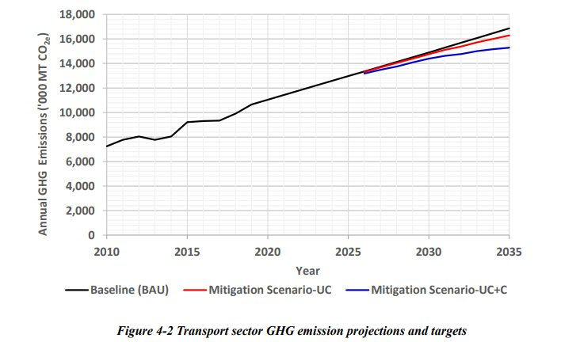
Figure 4-2 Transport sector GHG emission projections and targets
It has been recognised that policy instruments or strategic plans alone are not sufficient for the successful implementation of the NDCs. It is evident from the interventions identified in NDC 3.0 that technological solutions and related infrastructure development are a fundamental requirement for performance improvements. It is noted that a comprehensive national transport route review is required to explore new routes, easy access to public transport and alternate public transport modes. Further, the A-S-I approach used in NDC development demands a profound transformational change in the way that the transport sector stakeholders including strategic and operational level actors and the users of transport services think and act. Accordingly, individuals require a range of competencies that empower them to face and contribute to system transformation and technology evolution. It is clearly evident that changes are required in subsystems and components of the transport sector related to electric mobility, including vehicles, fuels or energy sources, infrastructure, and support systems, as well as modal shift. Further, in each of these areas, implementation of electric mobility interventions needs enhancement of knowledge and skill of transport sector staff and other stakeholders, which also show significant gaps across strategic to operational levels. Accordingly, a comprehensive gap analysis on the technology, data/information, and capacity needs should be conducted for each of the NDC proposed as an essential component of the implementation plan with appropriate activities and sub-activities to address them. It is also suggested to conduct a comprehensive study to assess the potential and optimise accessibility of rail transport for freight.
Industrial production contributes 27.5% to the national Gross Domestic Product (GDP) and employs 25.5% of Sri Lanka's workforce.[44] In 2022, the industry sector consumed 125.5 PJ of the total national energy demand with energy supplied from biomass (67.3%), petroleum (17.8%), coal (1.7%) and electricity (13.2%).[45] The total emissions from the industrial sector arises from energy use and IPPU. The IPCC guidelines are used to identify the emission sources and NDC 3.0 is built on NDC 2.0 to ensure consistency.
The Ministry of Industry and Entrepreneurship Development has been designated as the leading organisation responsible for coordinating the implementation of industry sector NDCs, collaborating with other identified lead institutions on the implementation and reporting on these NDCs. Sri Lanka has been concerned about industrial pollution since 1995, rooted in the Industrial Pollution Management Policy and evidenced by the inter-ministerial coordination mechanisms and creation of institutional arrangements for more environmentally approaches such as cleaner production. Several strategies and plans have been developed over the last three decades to abate pollution and thereby reduce emissions. Sri Lanka ratified the Kigali Amendment on 28 September 2018, committing to reduce HFC consumption. A new industrial policy is being developed to accelerate industrial growth while promoting environmental stewardship and management of GHG emissions.
NDC 3.0 consolidates the previous 37 sub-PAMs across 7 NDCs into 7 key actions by grouping interconnected measures. Except for fuel switching, low-emissions cement production and process improvements in the industry, limited progress was observed across other NDCs by 2024. These partial shortcomings were identified as stemming largely from resource bottlenecks of the implementing entities as well as limitations to the tracking capacity and performance measurement. With NDC 3.0, Sri Lanka's industry sector aims to improve monitoring capacity, and improve the funding basis to ensure effective implementation.
NDC 3.0 ensures methodological continuity with NDC 2.0 and addresses potential overlaps with the power sector, as many industry-PAMs impact both industrial energy use and national electricity generation. Table 4.5 presents the list of NDCs in the industry sector, with a concise description of each NDC with key interventions, KPIs and targets for the 10-year period from 2026 to 2035.
|
Table 4.5 NDCs in Industry Sector (mitigation) NDC # |
NDCs with Description |
|
NDC 1 |
The application of energy efficiency practices across the industry sector, with a particular focus on energy-intensive industries. |
|
Description: This NDC pursues the implementation of energy-efficient practices and technologies in key industrial sectors. Technologies to be implemented include highly efficient motors, variable frequency drives and waste heat recovery systems, as well as enhanced sustainably sourced quality feedstock and efficient design of combustion processes, which drive substantial reduction in energy consumption, thus lowering the energy demand of the industry. Regarding innovative processes, it is planned to introduce a pilot project for tri-generation facilities and district energy in the Biyagama export processing zone, including business model development. These measures are supported by |
|
NDC # |
NDCs with Description |
|
NDC 2 |
rubber and textile industry. The integration of renewable energy technologies to expand the proportion of renewable energy within industrial energy usage and the electrification of industrial heating. |
|
Description: The second NDCcomplements the first NDC's focus on enhancing the quality of biogenic fuels by fostering sustainably sourced fuel switches of industry furnaces and boilers in government and state institutions. Linked to that, activities are foreseen to ensure the availability of sufficient sustainably sourced fuels to sustain the energy demand of the industry. Moreover, the NDC aims to advance electrification in Sri Lankan industry, increasing the installation and uptake of electric boilers and heat pumps, as well as solar thermal, to further reduce fossil fuel demand and achieve more substantial emissions reductions. The NDC further foresees strengthened capacity-building efforts with a minimum of 40% female participation to ensure effective uptake of the fuel switching and enhance the understanding of the associated technologies. This NDC is expectedto reduce fossil fuel requirements in industries, by introducing biogenic fuel sources such as biofuels, biogas, |
|
|
NDC 3 |
Increase industrial support interventions by applying Resource Efficienct and Cleaner Production (RECP), Life Cycle Analysis (LCA), Circular Economy, Sustainable Consumption and Production (SCP), industrial symbiosis, Eco Labelling and green reporting in industries. |
|
Description: Building on and sustaining efforts initiated in NDC 2.0, this NDC seeks to implement a range of support interventions across the industry to enhance the uptake of RECP, eco-labelling, green reporting and circular economy practices. This NDC is implemented through a series of interconnected activities, including the preparation of baseline studies and audits, laying the foundation for gradual product modification and process optimisation. Moreover, pilot projects to test circular economy practices and implement ISO standards are foreseen. The implementation of this NDC will lead to optimisation of resource utilisation and minimisation of industrial waste and better economic returns. |
|
|
NDC 4 |
Establish eco-industrial parks and networks. |
|
Description: With this NDC, Sri Lanka's industry sector seeks to transform and establish industrial parks by implementing comprehensive green industrial concepts. This objective is driven through a series of activities that gradually build up the adoption of green concepts, including baseline assessments, framework developments based on international best practices, implementation of certification systems, material efficiency, innovative waste management and industrial symbiosis concepts. Moreover, suitable sites for additional pilot industrial parks will be scoped, and the adoption of green industrial concepts will be strengthened through a reinforced national policy framework and industry-wide standards and guidelines. |
|
NDC # |
NDCs with Description |
|
NDC 5 |
The implementation of measures to mitigate GHG emissions under the Industrial Processes and Product Use (IPPU) category. |
|
Description: This NDC sets a strong focus on mitigating GHG emissions in the IPPU category, specifically incorporating measures to reduce emissions of the mineral based industry. In addition, measures to control emissions from volatile organic compounds (VOC) in the painting, tire and printing industries are envisioned. The measure to reduce GHG emissions in the mineral industry is based on a reduction of the clinker content in cement production processes, which leads to gradually decreasing carbon intensity of the cement industry. The reduction of the clinker content was formulated first for NDC 2.0, and Sri Lanka has already achieved substantial improvements in the use of fly ash as a substitute to clinker. The measure is considered as an existing PAM which Sri Lanka can implement and sustain, upon the receipt of international support. Moreover, new standards and regulations to promote low-carbon cement are currently being pursued. |
|
|
NDC 6 |
Conversion of industry refrigeration and commercial refrigeration systems to low- GWPalternative technology. |
|
Description: In the implementation of the Kigali Amendment which foresees a freeze and gradual reduction in the consumption of HFCs from 2024, a 10% reduction from 2030 and a 30% reduction from 2035 onward. |
|
|
NDC 7 |
Increase innovation and investment in industrial decarbonization. |
|
Description: This NDC revolves around amplifying the scope of funding and targeted investments for industrial decarbonisation with consideration for gender equality, empowerment of women and creating opportunities for youth. Promotion and improvement of the National Green Reporting System for driving innovation and leveraging international and private sector investment for low-carbon industries. This will require capacity building for industrial GHGemissions accounting and reporting, targeting a minimum of 40% female beneficiaries trained to assess and showcase their mitigation efforts. Furthermore, reinforcement of the national institutional ecosystem for innovation and entrepreneurship for clean technology adoption across the industry sector is foreseen, strengthened through supportive market access of certified low-carbon products and procurement practices. Net- zero road maps for key industrial sectors and technologies are considered to create clear frameworks and long-term goals to attract capital and incentivise the adoption of solutions and new technologies, including the application of carbon capture, utilisation and storage in the cement sector. Given Sri Lanka's strategic position on East-West sea route and connectivity to India, Sri Lanka could play a key role in alternative fuel value chains such as Green Hydrogen, e- Methanol, GreenAmmonia, Sustainable Aviation Fuels and other biofuels including through commodity exchanges and bunkering services set up in Special Economic Zones (SEZs)/industrial parks to facilitate regional trade. To promote innovation and investment in such alternative fuel value chains that can facilitate industrial decarbonization both within Sri Lanka and in regional trade, feasibility studies will be explored with the support of international organizations. With the technological advancements of 5IR including AI, Sri Lanka's National Digital and AI strategies will be leveraged to also enhance industrial decarbonization efforts with greater integration of national industrial policy and digital economy focus. |
|
|
Lastly, fiscal measures such as beneficial market and non-market based financial instruments, concessional loans for green projects and strategic acquisition of sustainable technologies are considered in this NDC. |
|
*In addition to the above actions of NDCs in this sector, new appropriate actions will be identified and incorporated into the NDC implementation plan.
The implementation of the sectoral NDCs is projected to cumulatively reduce 13.0% or 8,130,200 MT CO2e between 2026 and 2035 against the BAU scenario with a total saving of 3,148,500 MT CO2e to be achieved already by 2030 through NDC 2.0. The NDC 3.0 13.0% (8,130,200 MT CO2e) reduction target represents an unconditional component of the cumulative 7.2% reduction and a conditional component of 5.8% reduction. Overall, this represents a clear increase of ambition compared to the NDC 2.0 which pledged a 7% reduction in the industry sector, split between 4% unconditionally and 3% conditionally over the period 2021 to 2030 estimated to lead to a total reduction of 3,570,000 MT CO2e.
Figure 4.3 presents the GHG emission reduction projections for the ten-year period from 2026 to 2035) against the baseline (i.e. BAU scenario from the historical base year 2010 to end 2035). Both unconditional and total components of the GHG emission reduction are shown.
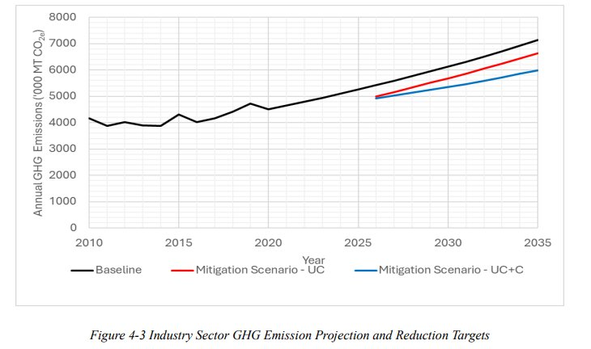
Figure 4-3 Industry Sector GHG Emission Projection and Reduction Targets
The industry sector NDCs represent an ambitious set of policies and measures requiring an array of supportive activities and a strategic enhancement of the technological basis and the capacity of industry sector stakeholders. Technology needs for decarbonization highlighted in the NDC description are necessary for achieving the industry sector targets. high-efficiency motors and equipment in industrial sectors, including VFD, efficient chillers and refrigeration technologies across sectors. Other technologies include compressed air systems, HVAC systems and efficient pumps. The installation of large capacity renewable energy systems on-site and energy efficient system design through appropriately trained energy professionals are needed to fulfil the targets. The uptake of new technologies and sustainable energy based industrialization requires capacity building on technologies and systems identified in the NDCs across all economic sectors. Developing skilled and knowledgebale professionals in the public and private sector with focused training on technologies, sustainability standards, and sustainable finance is an essential requirement.
Sri Lanka's waste sector has undergone significant changes driven by urbanization, population growth, and shifts in consumption patterns. Municipal Solid Waste (MSW) generation increased from approximately 3,365 47 metric tons/day in 2010 to an estimated 8,141 48 metric tons/day by 2022. Waste generation in the Western Province has been estimated at approximately 3,732 metric tons/day in 2020 49 , underscoring the region's strategic importance in national waste management planning.
It is important to underline that policy development in Sri Lanka's waste sector has been initiated since 2000, stemming from the introduction of the National Strategy for Solid Waste Management (2000) 50 , the National Policy on Solid Waste Management (2007) 51 and the National Policy on Waste Management (2020) 52 as the latest covering solid, liquid and gaseous waste providing focused directions to integrated cicrcular waste management systems supporting to more targeted climate-aligned instruments. The provision of the National Policy (2020) necessiating root cause analysis strengthens implementation of MRV mechanisms in all the waste sector NDCs with transparent reporting.[53] Regulations are in place for the prohibition of open burning[54] and prohibiting the use of single use plastics (SUPs).[55] The Extended Producer Responsibility (EPR) Regulation (to be included as an amendment to National Environment Act) will legally bind producers to manage post-consumer waste, while the Carbon Net Zero 2050 Roadmap and Strategic Plan (2023) 56 sets ambitious GHG reduction targets through waste minimisation, 3R (reduce, reuse, recycle), and modern treatment technologies. The Clean Sri Lanka Initiative (2025) of the government emphasises the introduction of new material recovery facilities and the related machineries required for waste reduction, recovery and reuse.
With regards to the monitoring and regulation of Sri Lanka's waste sector, the Central Environmental Authority is the regulator for waste at the national level, while the Provincial Environmental Authority of the North Western Province is a regulator for waste in the north western province. The Ministry of Provincial Councils and Local Government and the Waste Management Authority of the Western Province together with other local authorities implement and monitor municipal waste management activities in the country. According to the regulatory provisions of the local authority, proper collection and disposal of municipal waste is an obligatory duty of local authorities. Furthermore, the Board of Investment is also responsible for implementing and monitoring waste generation and processes in the industrial sector. The National Water Supply and Drainage Board is also involved in implementing and managing domestic water and wastewater treatment.
Despite the availability of policies and strategies for solid waste management, this sector continues to face significant challenges especially in the absence of integrated approaches in policy implementation with broader citizen engagement and public private community partnerships. MSW management suffers from inadequate infrastructure and weak enforcement of legal frameworks.[57] Institutional gaps are evident in the form of inadequate data and information management systems, limited monitoring systems and the absence of quality control systems that supports evidence-based decision-making. A lack of waste management infrastructure particularly to quantify and characterise waste for root cause analysis hinders real time planning and monitoring.
To fully realise the waste sector's mitigation and resilience potential under the NDC 3.0, Sri Lanka must address these structural bottlenecks through comprehensive and systemic upgrades. Only by addressing these interconnected issues, Sri Lanka can position its waste sector as a central contributor to national climate goals and a more circular, resilient, and just economy. The implementation of waste sector mitigation measures will also lead to improved air quality in Sri Lanka. The impact of waste sector
mitigation measures on air quality should be assessed qualitatively or quantitatively, depending on data availability.
Table 4.6 presents the NDCs of the waste sector for the period of 2026 to 2035. Some of the NDC activities with new and additional targets will continue from the NDC 2.0 while some new NDC activities have also been introduced under NDC 3.0.
|
Table 4.6 NDCs in Waste Sector (mitigation ) NDC# |
NDCs with Descriptions |
|
NDC 1 |
Demonstrate 'circular economy'' practices across solid waste sources. |
|
Description: This NDC aims for comprehensive waste sector improvements by 1) reducing the MSW generation growth rate; 2) reducing the industrial solid waste generation growth rate; 3) increasing solid waste reduction, reuse and recycling through both formal and informal sectors; 4) reducing the improper discharge and disposal of MSW; and 5) increasing the reuse, recovery and proper management of electronic waste (e-waste). Overall, this NDC will reduce risks to public health, ensuring environmental integrity. |
|
|
NDC 2 |
Manage biodegradable solid waste component through biological treatments and other means. |
|
Description: This NDC looks at comprehensive improvements in biodegradable waste management by 1) rehabilitating, restoring, and enhancing existing composting facilities operated by local authorities by improving existing technologies or adopting new ones to increase capacity and quality; 2) introducing new composting facilities for potential and prospective local authorities to expand biodegradable solid waste processing and treatment capacity; 3) rehabilitating, restoring, and enhancing existing cluster base composting facilities operated by other agencies to improve capacity, quality, and technology adoption; 4) introducing new cluster base composting facilities operated by other agencies to increase biodegradable waste processing and treatment capacity; 5) increasing the quantity of biodegradable waste processed through household-level composting systems; and 6) managing biodegradable MSWthrough other means, such as animal feeding and biomethanization. |
|
|
NDC 3 |
Introduce energy recovery using non-compostable, non-reusable and non- recyclable waste. |
|
Description: The focus of this NDC encompasses two interlinked activities aiming for energy recovery, strengthening energy recovery mechanisms by implementing WtE facilities to process non-compostable, non-reusable and non-recyclable waste; and implementing new pyrolysis/gasification facilities to process non-compostable, non- reusable and non-recyclable waste, balancing minimum waste supply requirements against waste prevention strategies in designing and planning. |
|
|
NDC 4 |
Use of sanitary and engineered landfills for the disposal of solid waste, which were not diverted for composting, reusing, recycling, and energy recovery facilities. |
|
Description: This NDC aims for 1) improved solid waste disposal by implementing sanitary or engineered landfills to process solid waste that is not diverted to composting, reusing, recovery, recycling, or energy recovery facilities; and 2) rehabilitating or safely closing abandoned or existing dump sites while introducing methane capture and destruction technologies. |
|
|
NDC 5 |
Implement and promote sustainable wastewater management systems in urban and rural areas. |
|
Description: This NDC encompasses comprehensive improvements in wastewater management by 1) increasing the quantity of treated wastewater disposal through centralised wastewater treatment systems or by enhancing the capacity of existing treatment plants or adopting new technologies, including constructing centralised wastewater treatment plants with reticulation systems for new urban areas and townships; 2) implementing decentralised wastewater treatment systems (DEWATS) for point pollution sources; 3) increasing the quantity of fecal sludge disposal and treatment through night soil treatment facilities; 4) implementing new industrial sludge treatment facilities; and 5) implementing new technologies and decarbonisation initiatives in wastewater management systems to reduce GHG emissions. |
|
|
NDC 6 |
Destruction of industrial hazardous waste and infectious waste via incineration processes that does not involve material and energy recovery. |
|
Description: This NDC focuses on improved hazardous waste and infectious waste management related to the destruction of industrial hazardous waste and infectious waste through incineration processes that do not involve material and energy recovery. |
|
|
NDC 7 |
Supportive interventions that facilitate progress or support broader goals. |
|
Description: This NDCcovers creating an enabling environment through 1) introducing and implementing market and non-market based instruments to promote sustainable production and sustainable consumption patterns; 2) introducing and implementing the Polluter Pays Principle through a service charge system for mixed waste generators; 3) implementing regulatory frameworks to control high waste generating products; 4) optimising supply-chain utilisation and the management of sanitary landfills and introducing transfer stations and transport infrastructure; 5) introducing proper management plans for open dumps; 6) conducting campaigns, vocational trainings, and skill development programs to raise public awareness on waste separation, reuse, recycling, recovery and sustainable consumption at domestic, institutional, and industrial levels, including issuing certificates to trained waste collectors to enhance social recognition; 7) developing a market for compost with quality standards and linkages to the agricultural sector; 8) promoting decentralised or community-scale composting solutions; 9) developing national guidelines and segregation systems to ensure feedstock quality and quantity for energy recovery facilities; 10) carrying out generic activities that facilitate progress toward broader waste-related goals; 11) Increasing the use of databases to improve waste management systems promotes data- driven decision-making; 12) introducing a mechanism for waste generation forecasting and a tracking system to monitor collection and disposal; 13) piloting waste-to-value initiatives as supplementary income for low-income households; 14) making biodegradable waste measures such as composting and biogas accessible and affordable to low-income households; 15) introducing user-friendly technologies for children, youth, women, PWDs, and marginalised groups to manage waste; 16) generating green job opportunities targeting women, PWDs, and youth in the rollout of new wastewater management technologies; 17) introducing healthcare waste management systems; 18) capturing methane from industrial wastewater to generate thermal or electrical energy; 19) cleaning polluted water bodies in urban areas to prevent methane generation; 20) implementing new gasification facilities to process non-compostable, non-reusable and non-recyclable waste; and 21) enhancing R&D for waste management systems. |
*In addition to the above actions of NDCs in this sector, new appropriate actions will be identified and incorporated into the NDC implementation plan.
The implementation of the NDCs presented in Table 4.6 leads to a reduction of 4,903,300 MT CO2e (from 23,567,100 MT CO2e in the BAU scenario to 18,663,800 MT CO2e), during the ten-year period 2026 to 2035. This is equivalent to a 20.8% reduction (8.6% unconditionally and 12.2% conditionally). Similarly, for the five-year period from 2026 to 2030, the GHG emissions are reduced by 1,381,800 MT CO2e (from 11,000,000 MT CO2e to 9,618,200 MT CO2e), which is a 12.6% reduction (5.3% unconditionally and 7.3% conditionally). In comparison to NDC 2.0, the NDC 3.0 demonstrates a higher level of ambition with an overall GHG emission reduction.
Figure 4.4. demonstrates cumulative unconditional (8.6%) and cumulative conditional (12.2%) GHG emission reduction targets for the ten-year period from 2026 to 2035 against the baseline (i.e. BAU scenario from historical base year 2010 to end 2035). Both unconditional and total components of the GHG emission reductions are shown below.
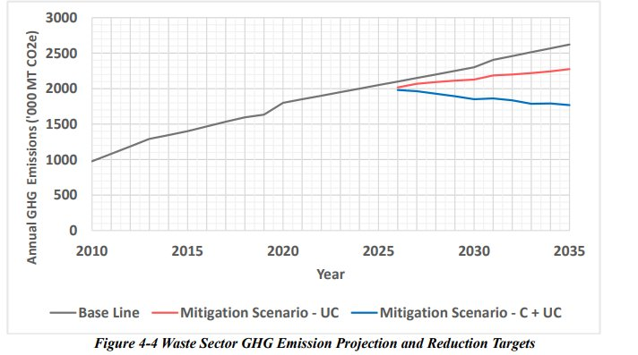
Figure 4-4 Waste Sector GHG Emission Projection and Reduction Targets
Technological support is needed for root cause analysis (RCA) at local levels, strengthening integrated waste management systems to maximise resource use efficiency with circular solutions and minimise landfill dependency, accelerating source segregation, expanding decentralised composting and biogas facilities for organic waste management with quality control systems, operationalising high-efficiency WtE plants, advancing engineered landfilling practices with methane recovery, and developing robust MRV systems tailored for GHG emissions from waste.
Effective waste management requires knowledge, digital interfaces and ICT. Capacity building and training is required to practice circular economy approaches and the implemenetation of waste management hierarchy from design to planning, operation, maintenance, administration and end-of-life of asset, product, and programme management. Further, strengthening and standardisation of the Mihisaru Waste Management Field Research and Training Center is required. Vocational and training strategies and curricular specific to the waste sector which integrates circular economy practices need to be developed. It also prioritises the development of specialised technical education programs and applied research collaborations to foster innovation in climate-smart waste management solutions. Importantly, NDC 3.0 highlights the integration of informal sector actors through cooperative models, training initiatives, and social protection measures, alongside nationwide awareness campaigns to promote behavioral change in waste generation and disposal practices for a just transition. Specific targeted programmes are required to ensure equitable access to green jobs and technologies for women, youth, PWDs and marginalised groups within the waste sector.
These NDCs call for strengthening the technical, institutional, and financial capabilities of local authorities, exploring innovative financial mechanisms such as blended financing and structuring PPPs to mobilise private sector engagement.
The forestry sector plays a critical role in the socio-economic development and environmental management of Sri Lanka as it supports biodiversity, watershed protection, and ecosystem integrity. In fact, most of the biodiversity in the country is conserved within forests and other forest-related ecosystems. It also contributes significantly to reducing net GHG emissions in Sri Lanka through carbon sequestration. Forests provide a wide range of resources and benefits to society. They support, such as assisting agriculture through hydrological regulation of water resources, genetic materials for crop improvement programmes and pollination, supply timber and non-timber products (NTFPs) such as fuelwood and medicinal materials that sustain community livelihoods, and protect soils and coastlines from erosion. The extent of the natural forest is estimated as 29.2% of the total land area of the country in 2015. The forest ecosystem in Sri Lanka is classified into different categories such as dense forest, open and sparse forest, savannah, and mangroves. It exhibits diversity and dispersion across Wet, Dry, and Intermediate climate zones of the country.[58] Most of the forests of Sri Lanka are confined to the Dry zone, while those in the Wet zone are fragmented.
Furthermore, trees outside forest (TROF) such as home gardens, urban trees, trees in urban environment and human settlements, and commercial plantations (tea, coconut, rubber, spices, et cetera) also occupy a considerable land extent, providing carbon benefits. A recent estimate indicates that the net carbon removal in the LULUCF sector in the country was about 9,890,000 MT CO2e in 2021, with forests and crop lands contributing the majority, 92.6% of the total. This is equivalent to 34.2% of the total GHG emissions of about 28,950,000 MT CO2e, signifying the sector's crucial role in mitigating the carbon budget in the country.[59]
Sri Lanka has a sound institutional and legislative system for the forestry sector related to planning and management. The Department of Forest Conservation and the Department of Wildlife Conservation are the two main institutions responsible for biodiversity conservation for forests and its associated ecosystems. Several legislative instruments, policies, strategies, plans, and programmes are in place to protect the forest cover. These include the Fauna and Flora Protection Ordinance No. 02 of 1937, Forest (Amendment) Act, No. 65 of 2009, Forest Ordinance No. 16 of 1907, Sri Lanka Forestry Sector Master Plan (FSMP) 19952020, National Environmental (Amendment) Act No. 53 of 2000, National Action Plan for combating land degradation in Sri Lanka 2015-2024, National Biodiversity Strategic Action Plan 2016-2022, Forest Conservation and Development Plan, Sustainable Land Management Programme, the National REDD+ Investment Framework and Action Plan, and National Environment Action Plan 2021-2030. Among these, a key strategic document that supported sector development is the FSMP 1995-2020, which provided guidance on the sustainable management of the forest resources of the country, while ensuring the provision of ecosystem services to society. More recently, a new FSMP 2021-2030 has been formulated, with actions to address climate change adaptation and mitigation, including the promotion of TROF for carbon sequestration.[60]
While there is a sound governance system and strategic plans, the forestry sector faces numerous threats such as deforestation attributed to agriculture and plantation expansion, larger infrastructure projects (dams, roads, human settlements, et cetera), illegal logging, poaching, mining, and forest fires. Consequently, over the years, the forest cover of the country has decreased steadily from 84% in 1881 to 29.2% in 2015. The main concerns related to the decline of natural forest cover includes the loss of biodiversity and their habitats, and adverse impacts to the environment, including the deterioration of blue carbon ecosystems such as mangroves. Aside from the environmental implications, deforestation also causes landslides soil
erosion, land degradation, flooding, pollution and et cetera.[61] Accordingly, forest conservation, reforestation, afforestation and sustainable utilisation have become a policy priority. This is further driven by its key role in emerging concepts such as the green and blue economy. Accordingly, to mitigate climate change impacts and increase the forest cover, NDC 2.0 focused on conserving existing forests, restoring degraded forests, establishing new forest plantations, encouraging home gardens, and promoting TROF. Through these interventions, ambitious targets for 2030 were set, including increasing forest cover to 32%, improving 278,000 ha of growing stock, protecting 10 major river catchments and establishing 7 million TROFs. It is expected that the implementation of these actions during the 2021 to 2030 period will improve the country's carbon removal capacity by 2,357,000 MT CO2e, (705,000 MT unconditionally and 1,652,000 MT conditionally), a 7% increase compared to the BAU scenario during the 10-year period. Most of the activities identified in the forestry sector NDCs are presently being implemented.
Table 4.7 presents the list of NDCs in the forestry sector, with a concise description of each NDC with KPIs and targets for the 10-year period from 2026 to 2035. It is apparent from the four NDCs listed that a range of opportunities exist for GESI integration in the forestry sector, which ensures the enhanced socioeconomic outcomes of climate action. Specific aspects of GESI integration should be explored when the NDC Implementation Plan is updated.
|
Table 4.7 NDCs in Forestry Sector (mitigation) NDC# |
NDCs with Description |
|
NDC 1 |
Sustainable management of forests and the restoration of other degraded lands, at least 32% by 2035. |
|
Description: This intervention includes reforestation to increase the forest cover to 32% by 2030 and beyond while promoting sustainable management. The target is limited to 32% due to the limited availability of land, and emphasis is given to expanding the TROFs. A deforestation rate of 5,000 ha/yr up to 2035 is assumed in the BAU scenario, while in the mitigation scenario, this is improved to 2,000 ha/yr during the 2031 to 2035 period. The mitigation scenario also includes the restoration of 18,000 ha of heavily degraded forest and improvement in the growing stock of 200,000 ha of moderately degraded forest. |
|
|
NDC 2 |
Expansion, restoration, and sustainable management of trees outside forest (TROF). |
|
Description: Tree plantation, restoration, and sustainable management of TROF areas are envisioned as four categories: (i) Urban tree cover; (ii) Tea plantations, including shade trees; (iii) Coconut plantation; and (iv) Home gardens. During the ten-year period, urban tree cover is expected to increase at a rate of 500 ha/yr (100,000 trees/yr), tea plantation by 200,000 trees/yr, coconut plantation by 200,000 trees/yr, and home gardens by 500,000 trees/yr on average. In the case of home gardens, this target is primarily achieved by the reduction and prevention of loss of land for other uses, which is estimated to be 0.3% annually. |
|
|
NDC 3 |
Promote catchment protection in major rivers through tree planting. |
|
Description: This NDC represents tree plantations in catchment areas. The four types of catchment areas considered are: (i) Upper catchment management of major rivers, with 2.0 million trees; (ii) Lower catchment management of major rivers, with 1.5 million trees; (iii) 6 Tanks under Ceylon Electricity Board and National Water Supply and Drainage Board with 0.2 million trees; and (iv) 6 Protected Areas (PAs), with 0.225 million trees during the ten- year period. The total number of trees targeted for the ten-year period is nearly 4.0 million. |
|
|
NDC 4 |
Conservation and enhancement of blue carbon ecosystems, including mangroves, seagrass, and salt marshes. |
|
Description: Although mangroves are part of the forest, they are considered separately due to their high carbon removal factors and unique ecosystem characteristics. Mangrove plantations are the key source considered in the estimation of carbon removal due to limited |
|
NDC# |
NDCs with Description |
|
data availability in other categories. This intervention includes the restoration of 150 ha/yr of degraded mangrove areas during the 10-year period, as well as the reduction and prevention of loss of mangrove land (which is estimated to be 0.5% annually) for other uses.Though not quantified, this NDC also includes KPIs related to identification, mapping, conservation/restoration of sea grass and salt marsh blue carbon ecosystems. |
*In addition to the above actions of NDCs in this sector, new appropriate actions will be identified and incorporated into the NDC implementation plan.
The estimations show that the implementation of the four NDCs in the forestry sector presented above enhances the net carbon removal capacity for the ten-year period from 2026 to 2035 by 8,477,900 MT CO2e (from 188,888,500 MT CO2e in the BAU scenario to 197,366,400 MT CO2e), which is a 4.49% increase (0.96% unconditionally and 3.53% conditionally). For the five-year period from 2026 to 2030, the net carbon removal capacity is increased by 2,132,500 MT CO2e (from 93,653,400 MT CO2e to 95,785,800 MT CO2e), which is a 2.28% increase (0.75% unconditionally and 1.53% conditionally). These estimations are done for both sequestration and emissions. Emissions are primarily generated due to deforestation and the removal of other types of trees.
Thus, in absolute terms, the net carbon removal capacity in NDC 3.0 in the forestry sector is significantly higher than that of NDC 2.0 presented in Section 4.2.5.1 above, where the increase in the net carbon removal capacity for the 10-year period from 2021 to 2030 was predicted as 2,357,000 MT CO2e (705,000 MT unconditionally and 1,652,000 MT conditionally). Notably, the net carbon removal capacity predicted in the first five-year period of NDC 3.0 is almost the same as the total amount anticipated in the ten-year period of NDC 2.0, reflecting higher ambition in NDC 3.0 targets.
Figure 4.5 presents the net GHG removal projections for the ten-year period from 2026 to 2035 against the baseline (i.e. BAU scenario from the historical base year 2010 to end 2035). Both unconditional and total components of the net GHG removals are indicated.
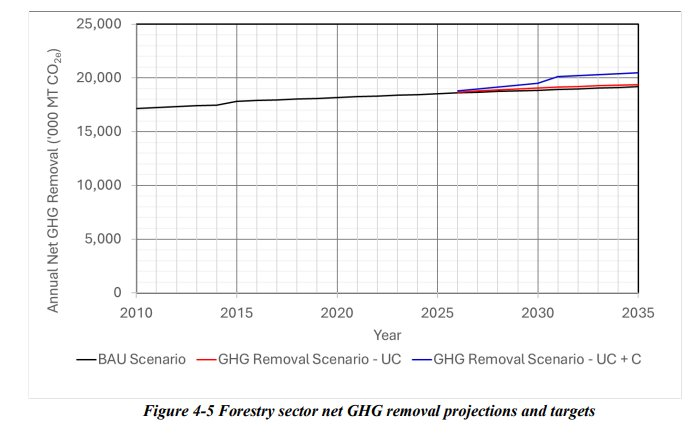
Figure 4-5 Forestry sector net GHG removal projections and targets
While the outcome of the net carbon removal potential analysis in the proposed forestry sector NDCs is encouraging, especially considering the multiple benefits of increased forest cover and improved forest conservation, the transition from the current situation remains challenging due to the ambitious scale of change required. Although the proposed NDCs are selected based on the readiness of the sector in relation to the data/information, policy/regulatory environment, technology maturity, and the capacity of the actors/stakeholders and related institutions, a comprehensive assessment of the related technologies and capacities should be conducted to ensure all the necessary conditions are in place for successful implementation. In particular, there may be a variety of barriers in the adoption of new technologies, pilot demonstration programmes will be required prior to mass-scale implementation. It is expected to use information technology, GIS/remote sensing and drone technology to enable improved conservation of forests and also the reforestation, restoration of forests. Further stemming from the NDC 2, the creation of a forest degradation index and the identification of degraded forests and carrying out necessary restoration/restocking is also considered as a priority. Similarly, awareness creation and capacity building of all the actors/stakeholders is a prerequisite. As forestry is a well-established area of education, the existing resources and expertise should be mobilised to support the implementation of the NDC 3.0 actions proposed above.
Agriculture is including the livestock industry is a key sector of the economy in Sri Lanka contributing to 8.3% of the GDP, with a growth rate of 1.2% in 2024. 62 The GDP contribution from agriculture, forestry and fisheries in the years 2021, 2022, and 2023 was 8.8%, 8.5%, and 8.3%, respectively[63], while the agriculture sector's average share of all foreign earnings from 2009 to 2021 was 23.7%. The sector has significantly contributed to employment, engaging around 25.7% of the country's workforce, particularly in rural areas.[64] The sector includes plantation and non-plantation (domestic food crop) sub-sectors, with the latter, covering paddy, cereals, oil crops, vegetables, fruits, floriculture, and spices, occupying 76% of cultivable land. The plantation sector (tea, rubber, and coconut) uses 24% of agricultural land. A key challenge for the sector is low resource productivity per unit area, limiting food supply amid resource constraints and climate change.[65]
The livestock sector contribution to the GDP was 1.39 % in 2023 (that includes Chicken meat: 0.86%, Egg: 0.24%, Dairy: 0.19%, Beef: 0.07%, Mutton: 0.01% and Pork: 0.02%), which is a significant rise from 1.03% in 2022. The GDP share of livestock products including meat, dairy, and eggs, grew due to a number of factors including higher prices, exports, efficiency gains, and product mix shifts. However, domestic production of milk and eggs decreased in 2023 in comparison to 2022 (milk from 380 to 370 million litres and eggs from 2,090 to 2,044 million), while meat production increased slightly (from 267,730 to 275,510 metric tons). This signifies that the primary driver of this sector's contribution to the GDP increase was due to higher retail prices, which rose from nearly 18% to 30% between 2022 and 2023. 66
The agriculture sector in Sri Lanka faces several major challenges, including subsistence farming, minimal mechanisation, high production costs, lower productivity and insufficient prices for production, high prices and price volatility of agricultural products, weak extension services, inadequate value addition, and low youth participation. Similarly, the livestock sector faces numerous challenges, such as severe shortages of quality animal feed and breeding materials, the high prevalence of animal diseases, weak supply chains and services related to production, unethical and imbalanced markets, lack of organised value chain developments and proper livestock extension programmes, inadequate health services, poor management of breeding activities, minimal research interventions, limited access to credit and insurance facilities, and insufficient incentives and guidance for stakeholders. Accordingly, the sectoral policy frameworks focus on improving productivity, self-sufficiency, the safety of food, and provide broad guidelines and directions for sustainable agriculture and the livestock industry. In particular, the government's policy places special
emphasis to ensure sustainable agriculture and livestock through the implementation of strategic approaches and activities. These include, for example, ensuring national food and nutrition security, promoting high productivity and efficiency, encouraging high-quality/ hygienic production, implementing sustainable land management practices, promoting environmentally friendly and resource efficient operations, supporting sustainable agricultural practices, and mitigating climate and other risks.[67]
The agriculture and livestock sector in Sri Lanka contributes significantly to GHG emissions, particularly CH₄ and N₂O, with total annual emissions of 6,070,000 MT CO2e in 2021. This is 21.0% of the total GHG emissions which is about 28,950,000 MT CO2e, signifying the crucial role of the sector in mitigating the carbon budget of the country.[68] NDC 2.0 included a range of actions Iin anthe effort to reduce GHG emissions while simultaneouslyand also addressing the development challenges faced by the sector. The expected GHG emissions reduction from the agriculture (inclusive of livestock) sector compared to the BAU scenario during the period from 2021 to 2030 was 7% (4% unconditionally and 3% conditionally), which equates to an estimated mitigation level of 2,477,000 MT CO2e unconditionally and 1,858,000 MT CO2e conditionally.[69] The progress of NDC 2.0 during 2021 to 2023 shows progress in the implementation of several activities, such as the adoption of planning processes to avoid seasonal gluts in production, the reduction of food and perishable (fruit and vegetable) losses, technology innovations and transfer, an increase in the number of productive animals, an increase in the number of climate smart shelters, a decrease in infections/disease incidence, and the introduction of renewable energy technologies.
Table 4.8 presents the list of NDCs in the agriculture (inclusive of livestock) sector, with a concise description of each NDC with key interventions, KPIs and targets for the 10-year period from 2026 to 2035.
|
Table 4.8 NDCs in Agriculture Sector (mitigation) NDC# |
NDCs with Description |
|
Agriculture |
|
|
NDC 1 |
Reduce post-harvest losses and improve the value addition of crops. |
|
Description: This NDCintends to address one of the issues of excessive post-harvest losses of perishables (fruits and vegetables) in the agricultural sector. Further, it is proposed to improve the value addition of harvested products during the excess production period to reduce wastage and enhance economic productivity. Fruits and vegetables are considered separately in setting KPIs and targets as there are clear differences in post-harvest losses between the two areas. The present post-harvest losses for fruits and vegetables are in the range of 15% to 25% and 20% to 30%, respectively. For fruits, the targets are to reduce the post-harvest losses from 15% to 20% by 2030 and 12% to 15% by 2035. Similarly, for vegetables, the respective targets are 15% to 20% by 2030 and 15% to 25% by 2035. For the BAU case, the post-harvest losses for fruits and vegetables are taken as 25% to 35% and 30% to 40%, respectively, in 2010, which is the historical base year. The value addition improvements are targeted at 20%ofthe excess production by 2030 and 50%by2035, which will assist in achieving the above post-harvest loss reduction. The implementation of the proposed interventions requires appropriate technologies, the adoption of which should consider the concepts of GESI for broader benefits. The GHG emission reduction benefits of post-harvest loss reduction is mainly attributed to the need for lower land extent for cultivation, which in turn reduces land-based GHG emissions. |
|
|
NDC 2 |
Increase crop productivity and production through efficient resource management. |
|
Description: The low productivity in agriculture is another challenge to the sector's development. This proposed action reflects efficient resource management, which addresses food security through an increase in production while ensuring enhanced productivity. This |
|
|
NDC# |
NDCs with Description |
|
will be achieved by a series of interventions such as improvements in Nitrogen fertiliser use efficiency, promotion of soil test-based fertilizer application, efficient water management, and the adoption of other GAP approaches. The specific targets by 2035 include a 15% increase in fertiliser use efficiency, a 15% increase in water use efficiency, and an enhancement of the national average paddy productivity to 5,600 kg/ha. Further, the productivity targets for other major crops/plantations are set at 1,725 kg/ha for tea, 7,875 nuts/ha for coconut and 1,300 kg/ha for rubber. These productivity improvements are reflected in the improvements in fertiliser use efficiency and land resources, which in turn provide land-based GHG emission mitigation opportunities. Further to environmental benefits, efficient resource management could be further strengthened by embracing GESI aspects. |
|
|
NDC 3 |
Improve the adoption of renewable energy for crop farming and processing. |
|
Description: The use of fossil-based energy sources in the agriculture sector has resulted in challenges related to both energy security and higher GHGemissions. This NDCproposes a number of commercial-level renewable energy solutions, including Solar PV and gravitational water pumping for irrigation schemes, solar and biomass-based agriculture product drying/dehydration systems and solar PV integrated cold storage systems. The targets for the year 2035 are set as 27,000 water pumps (about 7.5% of irrigation pumps), 4,000 biomass dryers, and 1,000 solar PVintegrated cold storage systems. The promotion of decentralised renewable energy systems also provides more opportunities to engage and empower local communities and other social groups in rural economic development, which needs to be explored in implementation. |
|
|
Livestock |
|
|
NDC 4 |
Improve dairy sector productivity by introducing Good Animal Husbandry practices (GAHP) in consideration of managing herds, herd health, feed and by improving animal comfort and welfare. |
|
Description: Low animal productivity due to ineffective and poor farm management is a key challenge faced by the dairy sector in the country, particularly in the dairy farms that are small-scale and managed with traditional practices. This NDC intends to use the opportunities available for animal productivity improvements, such as farm innovations, novel practices/products/techniques suitable for a particular area, the physiological stage of animals and economically viable options of other GAHP to enhance the animals' per diem yield. The specific targets set for 2035 include (i) the increase of productive animals (with average milk yield > 7 l/day/head) to 65%, aiming to lead to an average increase of milk yield from cattle to 5.0 l/day/head, (ii) extension of growing improved varieties of forages (pasture/fodder) to 20,000 ha and the number of cattle farms adopting GAHP to 1,125 (125 per province per year). These productivity improvements are reflected in enhanced resource use efficiency, which leads to the mitigation of GHGemissions. Further, the enhancement in resource use efficiency could be enriched by incorporating social criteria in technology selection and adoption. |
|
|
NDC 5 |
Improve the productivity of Monogastrics by GAHP, such as improving genetics, feed efficiency, animal health, comfort and welfare. |
|
Description: The monogastric livestock sector, particularly in poultry and swine, faces significant challenges in ensuring meat quality, safety and environmental impacts, which depend on production practices. This NDC is targeted to introduce innovative strategies to improve meat quality and safety while promoting sustainability in production systems by mainstreaming GAHP, such as improving genetic potentials, feed efficiency, animal health, comfort and welfare. The outcomes of these interventions could be further enhanced by incorporating social considerations in the implementation. It is expected that the GAPH |
|
|
interventions will increase the % of productive monogastric animals to 70% by 2035, ensuring at least 1,350 farms adopt GAHP. |
|
|
NDC 6 |
Adopt renewable energy for livestock and poultry applications. |
|
Description: As with crop-based agriculture, the high dependence on fossil-based energy sources in the livestock sector is a key concern. This NDCproposes a number of commercial- level renewable energy systems, such as solar PV-driven water pumps and solar PV- integrated cold storage systems for livestock applications, and grid-tied solar PV rooftop systems for livestock farms. Further, the installation of biogas systems to manage waste is also proposed. The targets set for the year 2035 are: solar PV driven 2,700 water pumps (3 kW, 10 m 3 /hr), 450 milk can coolers (5 kW Solar PV with a 12 kWh battery, 60 l storage capacity), 270 solar PV rooftop systems (30 per province, 50 kW systems), and 450 biogas digesters (50 per province, 30 m 3 /300 kg of waste/day). As with NDC 3, the promotion of the above renewable energy systems supports engagement and the empowerment of local communities and social groups in the livestock sector development. |
|
*In addition to the above actions of NDCs in this sector, new appropriate actions will be identified and incorporated into the NDC implementation plan.
The estimates of GHG emissions in agriculture (inclusive of livestock) show that the implementation of the six NDCs presented in Table 4.2.6 leads to a reduction of 8,675,400 MT CO2e (from 83,526,900 MT CO2e in the BAU scenario to 74,851,500 MT CO2e), during the ten-year period from 2026 to 2035. This is equivalent to a 10.39% reduction (5.56% unconditionally and 4.82% conditionally). In the case of the first five-year period from 2026 to 2030, the GHG emission is estimated to reduce by 2,836,100 MT CO2e (from 41,307,600 MT CO2e to 38,471,400 MT CO2e), which is a 6.87% reduction (3.74% unconditionally and 3.13% conditionally).
In comparison with NDC 2.0, the GHG mitigation attainable in NDC 3.0 in the agriculture (inclusive of livestock) sector is significantly higher in absolute terms (an 88.5% increase from 4,601,100 MT CO2e to 8,675,4 MT CO2e) as well as in terms of percentage increase (increase from 6.8% to 10.4%). Thus, the interventions identified in NDC 3.0 will lead to more ambitious GHG emissions reduction from the agriculture and livestock sectors. Apart from the climate benefits, the socio-economic and other environmental benefits at the local level will contribute to the achievement of broader SDGs in the country.
Figure 4.6 presents the net GHG removal projections for the agriculture (inclusive of livestock) sector for the ten-year period from 2026 to 2035) against the baseline (i.e. BAU scenario from historical base year 2010 to end 2035). Both unconditional and total components of the net GHG removals are shown.
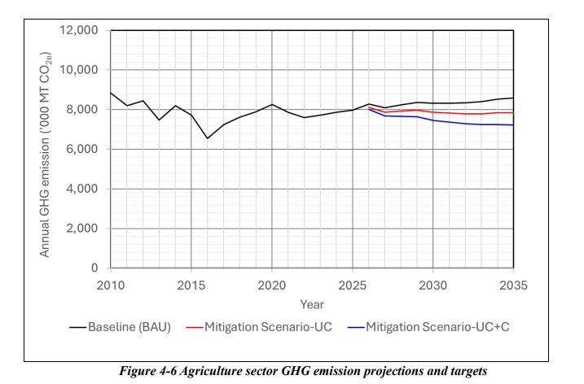
Figure 4-6 Agriculture sector GHG emission projections and targets
It is apparent from the climate actions identified in NDC 3.0 and as presented in Table 4.2.6, that a significant systemic shift is needed in the agriculture and livestock sectors in the transition from a conventional system to a more efficient and sustainable system. Such a transition essentially demands novel and environmentally sound technologies, as well as enhanced knowledge and skill sets to manage them. For example, a reduction of post-harvest losses and the improvement of value addition crops, efficient resource management to increase productivity (and production), the adoption of renewable energy systems, and the operationalisation of Climate Smart Agriculture (CSA), GAP and GAHP are primarily driven by technology development and transfer, with the establishment of the related infrastructure and support systems, including ICT. In particular, the enhancement of institutional capacity for the regular monitoring of GHG emissions from agricultural fields is recommended. Further, it is proposed to develop a robust MRV framework with regular reporting schedules and third-party verification mechanisms to ensure transparency and accountability.
A more comprehensive analysis of the proposed NDCs should be conducted, in consideration of the TNA and TAP which has already been conducted, to identify the specific technologies required. Further, the successful implementation of these interventions and associated technology transfer requires appropriate levels of awareness and competencies among sector actors and stakeholders. Accordingly, a comprehensive assessment of capacity needs should also be conducted in the formulation of the NDC 3.0 Implementation Plan, outlining the related activities and sub-activities. These assessments should also consider the GESI principles for more effective implementation of NDC 3.0.
The updated adaptation NDCs adopt cross-sectoral and community-based approaches, enhance institutional coordination, and prioritise ecosystem and livelihood resilience. By mainstreaming GESI across adaptation planning and implementation, NDC 3.0 aims to ensure that resilience-building efforts are inclusive, leaving no one behind, while advancing broader social and development goals.
The agriculture sector is highly vulnerable to climate change, facing risks such as increasing temperatures, extreme weather events (i.e. droughts, floods, and landslides), sea level rise, and rapid land degradation, worsened by pollution and unsustainable land use practices which collectively cause ripple effects on agriculture, urban and semi-urban areas, water supplies, biodiversity, and public health. With 80% of the population lacking adaptive capacity, a 3.86% GDP loss by 2050 is expected, demanding resilience investments of USD 36.5 billion by 2030 and USD 54.2 billion by 2050. 70 Smallholder farmers, who make up 90% of producers, are especially exposed.[71] Climate events like the 2016-2017 droughts and floods severely disrupted rice production, affecting over two million livelihoods. Crop yields are projected to decline by 12-19% in Maha and 27-41% in Yala seasons by the 2060s. Salinization has made 43% of Jaffna's rainfed paddy lands unusable for farming and 59% of wells are unsuitable for irrigation, with potential losses of up to 35% of total agricultural land and 52% of paddy land by 2100 without intervention.[72]
Climate change poses serious threats to marine and inland fisheries , with marine ecosystems suffering from sea level rise, warming, acidification, and extreme weather that damage habitats like coral reefs and mangroves critical for fish reproduction. These changes lead to biodiversity loss and unstable catches, affecting small-scale fishers the most. Inland fisheries face issues from temperature rises, erratic rainfall, droughts, floods, salinity intrusion, and altered river systems, impacting water quality and aquaculture. Infrastructure damage during 2016 to 2017 disasters amounted to 33% of the sector's value.[73] Coastal communities in northern and eastern provinces are especially at risk from sea-level rise and salinity. Reservoir levels have dropped, and altered monsoon patterns threaten further declines, with fish harvests projected to decrease by 20% by 2050. 74
Sri Lanka's livestock sector faces significant climate-related challenges, including rising temperatures, droughts, floods, pests, and diseases, compounded by overuse of grazing lands and poor waste management. According to a study conducted in 2016, 10 Divisional Secretariat Divisions (DSDs) are highly vulnerable to drought, affecting 27,350 cattle and buffalo, while 47,085 goats and swine, and 2.5 million of poultry. 75 Cold weather in 2021 caused 1,660 cattle deaths in the Eastern and Northern provinces.[76] Dairy cattle are sensitive to heat stress, especially when the Temperature Humidity Index (THI) exceeds 72, and the climate projections for 2030 and 2050 anticipate further temperature increases, exacerbating risks for livestock health and productivity, particularly in intermediate and dry zones.[77] Certain crossbred (except for Jersey & Friesian breeds) cattle show better heat tolerance, reducing costly interventions for smallholder dairy farmers.[78] The upcountry Wet zone supports exotic dairy breeds but is limited by land and forage availability, while 88% of dairy cattle in the Intermediate and Dry zones face increased climate vulnerability. Poultry productivity declines in small-to-medium open-house farms due to heat and disease, whereas large-scale farms (>100,000 birds) fare better under controlled conditions.
73 Samaraweera, W. G. R. L., Dharmadasa, R. A. P. I. S., Kumara, P. H. T., & Bandara, A. S. G. S. (2024). Evidence of climate change impacts in Sri Lanka: A review of literature. Sri Lanka Journal of Economic Research , 11(2), 69-94. 74
Ibid.
Third national communication of climate change in Sri Lanka .
Assessing thermal neutral zones in Sri Lanka for ten different dairy cattle breeds and crosses: An approach using temperature humidity index (THI). International Journal of Livestock Production, 12(2), 112-121.
Sri Lanka faces uneven water availability, with scarcity in the Dry zone and excess in the Wet zone, compounded by vulnerable water supply and irrigation infrastructure. The Dry zone, covering two-thirds of the country and responsible for over 70% of paddy production, is at high risk of water scarcity due to increased evapotranspiration and reduced rainfall under future climate scenarios, threatening agriculture and food security.[79] Conversely, the future climate projections indicates Wet zone may experiences increased and erratic rainfall patterns which may cause, floods, landslides, and coastal inundation, causing significant damage to communities and infrastructure.[80] Around 44.5% of the population relies on pipeborne water, but many depend on vulnerable sources like wells and rainwater harvesting, which become unreliable during droughts.[81] Water supply systems face threats from extreme weather, contamination, and salinity intrusion, disproportionately affecting vulnerable groups. According to the Global Climate Risk Index (GRI) Sri Lanka identified as highly water-stressed nation, consuming 90.8% of its renewable freshwater, making it one of the most climate-vulnerable countries.[82] Its unique geography, including montane forests and high-altitude grasslands, adds to its climate sensitivity.
Biodiversity in Sri Lanka is already impacted by climate change and human activities. The Asian Elephant ( Elephas maximus maximus ) suffers habitat loss from agricultural expansion and climate disruptions, worsening human-elephant conflicts. The Sri Lankan Leopard ( Panthera pardus kotiya) faces challenges from rising temperatures and changing ecosystems affecting its prey. The Purple-faced Langur ( Trachypithecus vetulus ) is affected by altered rainfall that reduces foliage and habitat quality. Pollinators like butterflies and bees face disrupted distributions, harming pollination. Prolonged droughts endanger butterflies and seepage-dependent plants, while reptiles and amphibians in cloud forests are vulnerable to drought and landslide sedimentation. Additionally, about 70% of crop genetic diversity has been lost due to climate change. The country is also highly exposed to sea-level rise and related storm surges.[83]
Sri Lanka is highly vulnerable to sea-level rise and associated storm surges, which are already impacting coastal and marine ecosystems . This leads to soil and groundwater salinization, forcing agricultural abandonment and degrading freshwater sources. Over 90% of the coastline is at risk of erosion, inundation, and habitat loss, threatening infrastructure and livelihoods. Critical ecosystems such as coral reefs, mangroves, seagrass beds, and salt marshes are especially vulnerable to rising temperatures and sea levels. Projections suggest many beaches may vanish by 2100, causing tidal flooding, accelerated erosion, saltwater intrusion, and ecosystem changes.[84] Saltwater intrusion also endangers agriculture, freshwater sources, and coastal tourism, with agricultural and fishing communities in coastal areas particularly at risk.[85]
The 2022 National Health Policy review highlighted climate change's significant impact on human health through rising temperatures, frequent extreme weather events, such as floods and prolonged droughts. These factors cause injuries, illnesses, deaths, and mental and social well-being challenges, increasing climate-sensitive diseases, malnutrition, heat-related health issues, and non-communicable diseases (NCDs).[86] Vulnerability varies by age, health status, socio-economic factors, gender, disability, employment, and geographic exposure, disproportionately affecting children in low-income families, older adults, PWDs, and women. Climate change threatens to reverse health progress and strain healthcare systems.
Urban development and human settlements in Sri Lanka are rapidly expanding along main roads and coastal areas, increasing vulnerability to climate induced hazards such as floods, droughts, landslides, heat
84 Gopalakrishnan, T., Kumar, L., & Hasan, M. K. (2020). Coastal settlement patterns and exposure to sea-level rise in the Jaffna Peninsula, Sri Lanka. Population and Environment, 42(2), 129-145.
Project.
stress, water shortages, and coastal erosion, salinity intrusion caused by sea-level rise. These risks disproportionately affect populations in both urban and rural areas, where inadequate infrastructure and services limit resilience. Rapid urban growth without adequate climate-proofing heightens exposure to climate disasters and threatens livelihoods. Coastal infrastructure and communities face risks from inundation, saltwater intrusion, and storm surges, affecting housing, roads, and economic and investment opportunities. In urban areas, heat stress coupled with loss of green cover intensifies challenges for outdoor workers, reducing productivity and income.[87]
The tourism sector in In Sri Lanka, the tourism sector generates approximately USD 2 billion per year, about 10% of the country's GDP, is increasingly at risk from climate change.[88] Extreme weather events, coastal erosion, and shifting rainfall patterns disrupt tourism operations and damage infrastructure, particularly in vulnerable coastal areas. These impacts threaten income stability and employment in tourism, especially for small and medium enterprises with limited capacity to cope. Urgent climate adaptation measures, including resilient infrastructure, integrated urban and coastal planning, and strengthening local governance, are essential. Enhancing community awareness and inclusion can build adaptive capacity, while innovative financial tools like climate insurance can help the sector recover from climate-related disruptions and sustain long-term growth. Collaborative efforts between government, industry stakeholders, and communities are vital to protect Sri Lanka's natural and cultural tourism assets against escalating climate threats.
Sri Lanka's climate adaptation efforts are framed by a comprehensive set of sectoral policies, legal enactments, and institutional arrangements integrated through cross-sectoral strategies and plans. The National Policy on Climate Change of 2023 serves as the cornerstone of this approach, articulating the government's vision for building climate resilience and emphasising the need for comprehensive adaptation efforts. The section below outlines the key legal frameworks, policies, and institutions governing the sector responsible for implementing climate change adaptation initiatives in the country.
The agriculture sector is headed the Department of Agriculture (DOA) and leads implementation, supported by research bodies like the Sri Lanka Council for Agricultural Research Policy (SLCARP), which promotes innovation and technology development. The draft National Agriculture Policy and Conceptual Food Security Framework, emphasising CSA practices such as crop diversification, water-efficient irrigation, and agroforestry. These policy frameworks prioritise capacity building, market access, value addition, and gender and youth mainstreaming, with special attention to vulnerable smallholder farmers managing limited landholdings. Furthermore, these policies focus on resilience building for vulnerable smallholder farmers while promoting sustainable resource management and institutional capacity. Complementing to the other laws and regulations such as the Soil Conservation Act No. 25 of 1951, Plant Protection Act No. 35 of 1999, Seed Act No. 22 of 2003, and Pesticide Control Act No. 33 of 1980 that regulate critical aspects of agricultural inputs and protect natural resources.
In the fisheries sector, the 2018 National Fisheries and Aquaculture Policy directs climate adaptation with sustainable, community-based practices and adaptive management. This is supported by the NAP (20162025) targeting vulnerability reduction, capacity building, technology transfer, and institutional coordination to protect fisheries-dependent livelihoods from climate risks.
The livestock sector relies on the National Livestock Development Policy (2010), the National Animal Breeding Committee (NABC) that oversee breeding programs and artificial insemination services. The framework also promotes integration with crop sectors, forage and fodder cultivation, and R&D to meet national demand and export potential. It highlights the importance of regulatory strengthening, animal health surveillance, and digitalisation for better data management and service delivery. Moreover, the National Livestock Breeding Policy (2010) forms the cornerstone of climate change adaptation in Sri Lanka's livestock sector, complementing broader policies to bolster resilience against climate impacts like rising temperatures, droughts, and disease outbreaks. It supports the development and dissemination of
climate-resilient breeds and improved breeding techniques to sustain productivity amid environmental changes. Collectively, these legal, policy, and institutional elements underpin Sri Lanka's efforts to foster a resilient, sustainable livestock sector aligned with national climate adaptation strategies.
Water and irrigation sector governance is anchored by landmark laws including the Irrigation Ordinance No. 32 of 1946, Flood Protection Ordinance No. 04 of 1924, the National Water Supply and Drainage Board Act No. 02 of 1974, (amended 1992) and Mahaweli Authority Act No. 23 of 1979, with recent reinforcement through the National Water Resources Policy (2023) and related policies on drinking water and safety. Moreover, the Strategic Action Plan for Adaptation of Irrigation and Water Resources Sector for Climate Change (2018) also aim to secure sustainable water management critical for agriculture, human consumption, and ecological health amidst climatic uncertainties.
Biodiversity conservation is structured around the Fauna and Flora Protection Ordinance No. 02 of 1937 and its amendments, the National Heritage Wilderness Area Act, No. 03 of 1988, the National Biodiversity Strategic Action Plan (2016-2022), Draft National Biodiversity Targets, and Land Degradation Neutrality goals. Moreover, the National Environmental Act (1980), the National Environmental Action Plan (20222030), and the National Action Plan for Combating Land Degradation (2015-2024) tackles land degradation and soil conservation, promote ecosystem protection, genetic diversity conservation, and inclusive stakeholder involvement aligned with global conventions and sustainable development goals (SDGs).
Coastal and marine resilience is governed by the Coast Conservation Act No. 57 of 1981, amended in 2011 to expand into integrated coastal resource management, encompassing ecosystem protection, development regulation, and community safeguards against sea-level rise and extreme events. Additionally, the Coastal Zone and Coastal Resources Management Plan (2024-2029) focuses on protecting coastal ecosystems and communities from sea-level rise and extreme weather events.
The health sector's National Health Policy (2016-2025) integrates climate resilience by focusing on vulnerable populations, environmental sustainability, and capacity building through the Directorate of Environmental and Occupational Health, linking health and climate policies for adaptive responses.
Urban and human settlements management is driven by the Urban Development Authority Act No. 41 of 1978, and the Greater Colombo Economic Commission Law, No. 4 of 1978, supported by foundational Housing and town improvement ordinance No. 19 of 1915, and the Town and Country Planning Ordinance of No. 13 of 1946, with key amendments introduced in 2000 to establish the National Physical Planning Department. Recent legislative updates have strengthened regulations in areas in construction, water supply, urban settlements, and condominium ownership. The land development ordinance (1935, amended), and updated regulations emphasising environmental compliance, flood risk reduction, and sustainable infrastructure development. The building and planning regulations of 1986, and its revised version in 2020, highlight environmental compliance and infrastructure provision while spatial planning policies, notably the National Land Use Policy (2007) and the National Physical Planning Policy and the Plan 2050, provide a partial framework for integrating climate adaptation into land-use planning and urban development. The National Housing Policy (2014) furthers this with commitments to inclusive, climate-resilient housing.
Tourism development is governed primarily by the Tourism Act No. 38 of 2005, which established the Sri Lanka Tourism Development Authority (SLTDA) with mandates covering promotion, policy advice, regulation, licensing, and sector sustainability. Tourism policies, complemented by environmental and aviation laws, such as support climate adaptation through global and national sustainable tourism certification, strategic planning, and environmental protection to mitigate risks from climate hazards affecting infrastructure and biodiversity. Although the Tourism Strategic Plan 2017-2020 aimed to realise Tourism Vision 2025, progress was disrupted by the 2019 Easter Sunday attacks and the COVID-19 pandemic.
Cross-sectoral frameworks at national level such as the National Policy on Climate Change (2023), draft NAP (2025-2034), and Carbon Net Zero 2050 Roadmap (2023), the NBTs and the LDN targets unify sectoral efforts with clear institutional coordination, gender mainstreaming, and investment planning, supported by several other plans such as the Draft Technical Need Assessment and the Technology Action
Plan for Climate Change (2025-2034), the Climate Prosperity Plan (2022), the Climate Smart Green Growth Strategy of Sri Lanka (2025), the Draft National Climate Finance Strategy (2025-2030) for resource mobilization and the The Sri Lanka Green Finance Taxonomy (2021) plays a critical role in facilitating financial mechanisms to support climate adaptation measures across all sectors through banks and nonbanking financing institutions (NBFIs). Sub-national climate plans such as Provincial Adaptation Plans (2025-2034) and strategies advance localized and technology-enabled adaptation solutions as well. Together, these policies and institutions constitute an integrated climate resilience architecture that synchronizes national development priorities with global climate commitments, fostering sustainable adaptation across Sri Lanka's economic and ecological sectors. Sri Lanka's climate adaptation across key sectors is framed by multiple policies, acts, institutional efforts, and cross-sectoral action plans, yet faces significant systemic challenges requiring integrated responses to meet NDC 3.0 goals.
Sri Lanka's climate adaptation efforts across multiple sectors face common challenges that hinder effective response to growing climate risks. Key issues include fragmented institutional coordination marked by unclear roles and inadequate inter-agency collaboration, which impede coherent policy implementation and monitoring. Financial and technical resource limitations, including budget constraints, insufficient investments on adaptation initiatives, and shortages of skilled personnel, further restrict adaptation capacity. Additionally, weak data management and monitoring systems with gaps in reliable, timely information and inadequate MRV frameworks undermine evidence-based decision-making and progress tracking. Vulnerable and marginalized groups such as smallholder farmers, fishermen, rural livestock keepers, women, children, elderly, PWDs, and urban poor disproportionately suffer from climate impacts, compounded by socio-economic inequalities and limited adaptive capacity. Environmental degradation through habitat loss, overfishing, pollution, and unsustainable land and resource management exacerbates sectoral vulnerabilities. Climate-induced resource scarcities like water and fodder shortages, rising temperatures, and more frequent extreme events disrupt critical production systems and infrastructure. Moreover, slow integration of climate risks into sectoral and spatial planning, alongside delayed adaptation measures and weak enforcement, impede resilience-building efforts. Despite these challenges, adaptive progress is driven by a cohesive national climate policy framework anchored by the 2023 National Policy on Climate Change that promotes climate-smart practices and cross-sectoral coordination. Support from development partners provides crucial financing, technology transfer, and capacity building across sectors. Enhanced risk assessments, disaster tracking systems, and improved early warning contribute to informed preparedness. Community engagement and capacity building empower vulnerable populations, while technological innovations such as climate-resilient infrastructure and digital tools strengthen resilience. Addressing systemic barriers through improved coordination, resource mobilization, comprehensive data systems, and inclusive policies remains essential to advance Sri Lanka's climate adaptation and NDC goals.
Sri Lanka's agriculture sector remains a critical component of the national economy, demonstrating a modest growth of 1.2% 89 in 2024, while employing 25.7% of the population and contributing 7% to GDP. The fisheries and livestock subsectors contributed 1.3% and 0.9%, respectively.[90] However, the sector has experienced a significant labour outflow, with over 90,000 workers leaving annually between 2013 and 2019. 91 Public investments in agriculture have declined substantially, falling from 6.4% to 2% of total government expenditure between 2014 and 2023, with irrigation receiving 41% of this reduced allocation and subsidies accounting for 26%. 92 Despite possessing considerable fertile land, the sector faces persistent challenges in productivity and profitability. This is reflected in the country's agriculture trade balance, with food and beverage imports totalling USD1.6 billion in 2022, making up 8.8% of total imports. Sri Lanka
has since relaxed import restrictions imposed during the economic crisis. Export performance reveals structural vulnerabilities,goods and services comprised 20.4% of the GDP, with manufacturing exports at 14%. Agriculture contributed to 22% of merchandise export income in 2023, compared to 77% from industrial goods (predominantly apparel), underscoring the need for greater diversification.[93]
Table 5.1 presents a structured overview of each NDC 3.0 commitment in the agriculture sector, including specific interventions, KPIs, and measurable targets for the 10-year implementation period of 2026 to 2035.
|
Table 5.1 NDCs in Agriculture Sector (adaptation) NDC# |
NDCs with Description |
|
NDC 1 |
Mainstreaming climate change considerations into agriculture. |
|
Description: Integrating climate change into all aspects of decision-making across various sectors and making it a central factor in all relevant considerations, is imperative to tackle this issue. This will be addressed through key interventions such as promoting the use of the updated Sri Lanka GoodAgriculture Practices (GAP), adopting an upgraded high skill agro- met advisory system and the use of climate-resilient crop varieties developed by 2035. |
|
|
NDC 2 |
Develop and strengthen National Weather& Climate Platform for early warning and risk management. |
|
Description: Managing climate risks is essential to improve productivity and ensure food security of the country while supporting export growth and foreign exchange earnings. Hence, a scientific approach is required to make informed decisions with respect to the agricultural development of the country. Targeted actions include improving seasonal climate forecasts which are used regularly by farmers for Maha and Yala seasons and establishing a national climate weather information system by 2035. |
|
|
NDC 3 |
Revising the Agro-ecological Map of Sri Lanka, considering current and future scenarios. |
|
Description: Frontline studies have shown a large gap between farmers' yield and achievable yield. This gap can be substantially reduced through the adoption of sustainable natural resource management practices. Therefore, it has become imperative to revise or re- demarcate theAgro-Ecological Region (AER) boundaries periodically, incorporating revised estimates on the length of crop growth based on soil water availability. The AER map is a useful tool to plan crop suitability based on the length of the growing period. Key interventions include conducting soil surveys and research to support the re-demarcation of theAER map and ensuring this updated map is readily accessible to all stakeholders. |
|
|
NDC 4 |
Development and promotion of IPNS and IPM in all crop production systems. |
|
Description: Technological development and adopting GAP are essential for a paradigm shift in productivity of agricultural production. The integration of techniques that aim to reduce pressure on natural capital (resources), synthetic inputs and enhance their efficiency and effectiveness. This will be advanced through interventions such as the development and promotion of Integrated Pest Management (IPM) and Integrated Plant Nutrition Management Systems (IPNS) to be adopted by the farming community with relevant upgrades during the period from 2026 to 2035. |
|
|
NDC 5 |
Sustainable land use and efficient resource management for improved production & productivity. |
|
Description: Building climate resilience and strengthening resource management, especially comprehensive water resource management, are crucial to enable communities and ecosystems to adapt and recover from the escalating impacts of climate change, thus safeguarding livelihoods and mitigating further environmental damage. This is managed by |
|
NDC# |
NDCs with Description |
|
introducing integrated farming systems/models to farmers, promoting mixed cropping and input-efficient farming systems, and facilitating crop diversification packages established under irrigation schemes from 2026 to 2035. |
|
|
NDC 6 |
Reduce post-harvest losses and promote value addition of crops in a changing climate. |
|
Description: Reducing post-harvest losses and improving value addition is crucial to enhance food security, increase farmer incomes, and minimise waste, thereby maximising the economic potential of agricultural products across the supply chain. Targeted responses include reducing post-harvest losses in fruits to 15-20% by 2030 and 12-15% by 2035, and in vegetables to 20-30% by 2030 and 15-25% by 2035, increasing value addition and reducing wastage in the agriculture value chain from 2026 to 2035. |
*In addition to the above actions of NDCs in this sector, new appropriate actions will be identified and incorporated into the NDC implementation plan.
The TNA and TAP, developed through comprehensive stakeholder consultations, prioritises three crucial adaptation technologies for agriculture: (a) crop-animal integrated farming in climate-vulnerable regions, (b) diversifying cropping systems for climate resilience and resource efficiency, and (c) climate forecasting using GCM models and field data for collection strategic decision-making.[94]
Findings from the BTR1 underscore several key requirements: revisiting AERs to align with climate change, expanding agro-meteorological networks, and enhancing soil moisture studies for region-specific practices. The report equally emphasises the urgent need for drought- and heat-resistant varieties and the customisation and operationalisation of seasonal forecasts to optimise farming schedules. Successful implementation depends on robust capacity-building programmes, including targeted workshops and Training of Trainers initiatives, to equip both farmers and extension officers with CSA competencies. These efforts will collectively accelerate technology adoption while strengthening long-term adaptive capacity for agricultural transformation.
The fisheries sector is vital to Sri Lanka's economy and society, contributing 1.2% to GDP[95] and employing 2.7 million people directly and indirectly.[96] Marine and coastal fisheries dominate the sector, accounting for 80% of the fish harvest and 70% of national animal protein consumption.[97] In 2023, total fish production reached 407,070 mt, with coastal fisheries contributing 40%, deepsea operations 32.7%, and inland fisheries contributing 27.3%. 98 Sri Lanka's rich aquatic resources include 21,500 sq. km of territorial waters, a 517,000 sq. km Exclusive Economic Zone (EEZ), 260,000 ha of freshwater bodies, and a growing aquaculture industry.[99] The sector demonstrates significant trade activity, with annual edible fish exports averaging 20 million kg from 2020 to 2023. In 2024, exports reached 3.88 million kg, earning USD 43.69 million[100], while 2023 seafood exports generated USD 301.7 million[101] against fish imports of USD 80.5 million (an 18.9% increase from 2022). Table 5.2 presents the list of NDC 3.0 in the fisheries sector, with a concise description of each with key interventions.
|
Table 5.2 NDCs in the Fisheries Sector (adaptation) NDC# |
NDCs with Description |
|
NDC 1 |
Ecosystem-based Approach to Fisheries Management (EAFM) in already identified high vulnerability areas will be extended to identify more areas of vulnerability to enhance resilience. |
|
Description: An ecosystem-based approach to fisheries management is preferred as it considers the entire marine ecosystem, leading to more informed decision-making which, takes into account the complex interactions between species, environmental factors, and human activities. Key interventions include the declaration of fisheries management areas with a target of 47 areas by 2035, and the development of 8 ecosystem-based fisheries management (EBFM) plans, of which 5 will be implemented by 2035. |
|
|
NDC 2 |
Identify and expand sustainable fisheries, aquaculture and culture-based fisheries to address food security issues relating to climate change. |
|
Description: Traditional fisheries and aquaculture are crucial for national food security, providing a vital source of protein while generating economic opportunities and supporting coastal communities. It also helps to address growing protein demands as wild fish stocks decline due to overfishing. Targeted measures include increasing fish production by 2%, especially from inland, culture-based fisheries and Mariculture, with an increase in the number of fingerlings stocked to 1,000 million, coupled with 20 fingerling-stock assessments by 2035. |
|
|
NDC 3 |
Develop climate-resilient varieties and farming and breeding technologies to increase resilience in a changing climate. |
|
Description: Climate-resilient fish species would need to better withstand the changing environmental conditions caused by climate change, such as rising water temperatures, altered oxygen levels, and ocean acidification. This ensures a more sustainable food source for fisheries and communities that depend on them. The main interventions include increasing annual sample preservation up to 600, introducing 5 farming and 6 breeding technologies and introducing 6 climate-resilient fish varieties by 2035. |
|
|
NDC 4 |
Evaluate the production capabilities of fisheries and aquatic resources in climate vulnerable lagoons to maintain sustainable and stable productivity levels. |
|
Description: Production capabilities of fisheries and aquatic resources are determined by fish population, fishing technology, environmental conditions, management practices among others. It is the maximum sustainable yield that can be extracted from a fishery, taking into account ecological balance and conservation concerns. This crucial aspect in a changing climate will be addressed by identifying 35 highly climate-vulnerable lagoons, developing 20 lagoon profiles, and conducting 2 carrying capacity assessments by 2035. |
|
|
NDC 5 |
Develop technologies to predict changing weather conditions and enhance safety at sea in coastal fisheries, against extreme climatic conditions. |
|
Description: Safety at sea is crucial as the ocean can be unpredictable and dangerous, making it essential to have proper training, equipment, and procedures in place to handle emergencies, navigate challenging weather conditions, and ensure the well-being of seafarers, all while complying with maritime regulations and minimising environmental damage. These challenges are addressed by targeting to have distress conditions reported at sea to at least 25, reducing insurance claims to 40, and identifying up to 4 measures to ensure safety at sea by 2035. |
|
|
NDC 6 |
Conduct fisheries and aquatic research to identify climate change-driven impacts that affect production. |
|
Description: Climate-related research is crucial due to the vulnerability of coastal communities and fish stocks to rising sea levels, ocean acidification, and changes in rainfall |
|
|
patterns. This research can inform better management practices, adaptation strategies, and disaster risk management. This critical aspect is addressed by having a target of 4 annual assessments by 2035, developing a holistic research agenda covering 15 important segments under fisheries, and implementing 8 research outcomes by 2035. |
|
|
NDC 7 |
Introduce alternative livelihoods and strengthen capacity development to reduce climate vulnerability. |
|
Description: Alternative livelihoods with enhanced capacity development empower communities to withstand and adapt to climate change impacts. Such strategies are important to improve long-term food security, economic stability, and overall well-being among communities in climate-sensitive fisheries sector. This is addressed by interventions targeting 20 schemes for livelihood diversification, with 260 fish-folks adopting alternative livelihoods, and having 30 capacity development activities annually by 2035. |
*In addition to the above actions of NDCs in this sector, new appropriate actions will be identified and incorporated into the NDC implementation plan.
Policy tools or strategic plans alone are not enough to ensure the effective implementation of the NDCs. The measures outlined in NDC 3.0 clearly demonstrate that advancements in technology and the development of supporting infrastructure are essential for achieving better performance. To achieve Sri Lanka's fisheries sector NDCs, prioritised technologies include (a) Developing EAFM plans, (b) Stocking fish-fingerlings and enhancing culture-based inland fisheries, (c) Converting existing open breeding facilities to indoor facilities, (d) Update of the conservation status of species periodically through Red Listing and amendment of schedules, including fisheries sector, and (d) Introducing sustainable commercial scale aquaculture to improve livelihoods.[102]
The BTR1 recognises that the fisheries sector annually experiences unidentified events with strong winds, heavy rainfall stemming particularly from low-level atmospheric disturbances and depressions. These recurring extreme weather events highlight the urgent need to ensure safety at sea, reduce disasters, and improve technical capabilities with early warning systems. Ecosystem-based approaches are essential to support fisheries development. The BTR1 also identifies the need for protecting and restoring critical ecosystems, introducing sustainable fishing practices, promoting alternative livelihoods and better regulations as priorities for the sector development in a changing climate, while ensuring a stable fish supply by building climate-resilience through sustainable practices and infrastructure support. Strengthening institutional and human resource capacities is a vital component for NDC achievement.
Sri Lanka's livestock sector, characterised by small-scale farming operations utilising marginal lands, minimal labour, and commonly available feed resources, contributes approximately 1% to the national economy. The sector experienced significant setbacks during the 2022 economic crisis. Cattle constitute the largest livestock population, followed by goats and buffalo, with poultry demonstrating remarkable growth from 6.3 million in 1980 to 31.35 million in 2022, with increased per capita consumption of chicken meat and eggs. The poultry sector is largely privatised, with small-scale farmers receiving inputs and marketing their products at pre-agreed prices. The sector's output includes chicken meat (62%), dairy products (14%), eggs (17%), pork (1%), mutton (1%), and beef (5%), supporting around 450,000 registered farms concentrated in rural areas.[103] Production metrics reveal both opportunities and challenges: 2022 milk production reached 380 million litres (231.04 million litres entering formal markets), representing declines in milk production and formal collection by 7.8% and 9.6% declines respectively from previous year;[104]
Goat production (0.77 million) primarily follows intensive/semi-intensive systems with some farmers also producing goat milk, which is gaining popularity for its health benefits; and, swine farming faces diseaserelated constraints including African Swine Fever and Porcine Reproductive and Respiratory Syndrome, impacting its sales.
Table 5.3 provides a comprehensive overview of the NDC 3.0 commitments in the livestock sector, along with a summary of key interventions associated with each.
|
Table 5.3 NDCs in Livestock Sector (adaptation) NDC# |
NDCs with Description |
|
NDC 1 |
Introduce adaptation measures, particularly genetic improvement, disease surveillance and forage improvement strategies to address climate impacts on ruminant livestock. |
|
Description: Climate risks in ruminant livestock could be abated by improving the resilience of production system, where the animal and its environment are the major players. Animal adaptation could be enhanced by improving its genetic makeup to match the climatic conditions. In addition, the management measures, especially health, breeding and feeding, are crucial factors that determine the adaptive capacity of the animal. Appropriate feeding and adequate disease surveillance are necessary to ensure a resilient production environment in ruminant management. |
|
|
NDC 2 |
Introduce technological innovations and interventions, especially by improved feeding, disease surveillance andmanagement strategies, to build resilience in poultry and swine farming. |
|
Description: Technology can enhance poultry and swine health and production. Genetic improvement, nutritional strategies, disease management, reproductive technologies, and precision livestock farming are all effective strategies that can be used alone or combined to increase animal production. |
|
|
NDC 3 |
Improve research, education, awareness and capacity building for climate change adaptation through private-public partnerships. |
|
Description: Research and education in livestock is important because it can improve the health and productivity of livestock, which can lead to more efficient use of resources, especially through stakeholder participation. PPPs would thus become extremely important in these efforts. |
*In addition to the above actions of NDCs in this sector, new appropriate actions will be identified and incorporated into the NDC implementation plan.
The livestock sector faces a range of challenges, including limited access to modern technology, inadequate veterinary services, and heightened vulnerability to climate change impacts like droughts and feed shortages. Despite these challenges, Sri Lanka has made notable progress in implementing adaptation measures in the livestock sector under its NDCs. As outlined in BTR1, key achievements include the introduction of technologies such as misters, coolers, ventilation fans and sprinkler irrigation systems in large-scale farms located in the dry zone farms. Silage conservation practices and hay baling initiatives have also been adopted to improve feed systems.
Two high-yielding, climate-adaptable forage varieties have been developed and introduced in two districts, successfully meeting the 2023 target. Ongoing surveillance programmes for climate-related livestock diseases such as Brucellosis in cattle and Highly Pathogenic Avian Influenza in poultry, are also being implemented. The continuation and scaling of these activities are essential for the effective delivery of NDCs 1 and 2.
NDC 3 requires particular attention on improving research facilities for developing climate-resilient forage varieties. One ongoing study is nearing completion, but further technological interventions in varietal propagation and knowledge dissemination are needed. Other key technology and capacity development priorities include facilitating the import of high-quality semen and enhancing breeding efficiency. However, BTR1 has identified persistent constraints such as limited funding and high operational costs, which have hindered the implementation of gender-responsive adaptation measures and broader capacity-building efforts.
Sri Lanka's water resources shaped by its diverse topography and monsoonal winds patterns, comprise of 103 major river basins including 20 perennial rivers.[105] The Irrigation Department manages 387 irrigation schemes including major and medium reservoirs (241), anicuts (113), drainage (25), and micro schemes (8), covering a command area of 800,200 acres and with an extensive canal network exceeding 20,000 km.[106] Another 36 reservoirs, 442 minor tanks, 15 main canals covering 450 kilometers, 183 branch canals of 450 kilometers, 1,522 distribution canals extending 2,401 kilometers, and 9,046 field canals spanning 6,490 kilometers are under the purview of the Mahaweli Authority of Sri Lanka. 107 This infrastructure system enables the delivery of irrigation water to approximately 106,120 hectares of agricultural land in the Dry zone, supporting food production, rural livelihoods, and national water security.[108] Approximately, 15,958 tanks, 15,807 anicuts, and 16,285 canals in the country are managed by the Department of Agrarian Development.[111][110][109],110,111 Aside from these, there are other tanks managed by various government authorities in Sri Lanka. The water sector is essential to the country's economy, social development, and environmental sustainability. Irrigation is a cornerstone of the country's agriculture which contributes 8.3% to GDP[112] and the agriculture sector consumes the highest amount (87.36%) from the total water consumption in the country.[113] Access to clean drinking water is essential for public health, and national initiatives have aimed to provide safe water to rural and urban communities. About 80.1% of the population of the country uses an improved source of drinking water which includes protected wells, tube wells, tap water, bottled water, and Reverse Osmosis (RO) plants.[114] Hydropower, which accounts for a significant portion of Sri Lanka's renewable energy mix, relies heavily on river systems and reservoirs.[115] In 2022, hydropower generation contributed 43% of generation mix of Celon Electricity Board highlighting water's critical role in energy security.[116]
Water resources also underpin industrial sector, tourism and ecosystems. Industry utilises 6.42% from the total water consumption in the country.[88] Additionally, water bodies like waterfalls, lakes, and coastal areas enhance the tourism industry, a major contributor to the national economy. Furthermore, wetlands, rivers, and forests support rich biodiversity and ecosystem services vital to climate regulation and livelihoods. Effective water resource management is thus essential for balancing economic growth with environmental conservation in Sri Lanka.
Table 5.4 presents the full list of NDCs in the water sector, with concise descriptions, key interventions, KPIs and targets for the 10-year implementation period from 2026 to 2035.
Catchments and Reservations in Sri Lanka.
111 M.M.M. Aheeyar and M.T. Padmajani. (2012). Crop production in anicut schemes of walawe basin. Hector Kobbakaduwa Agrarian Research and Training Institute. Research Report No: 149.
|
Table 5.4 NDCs in Water Sector (adaptation) NDC# |
NDCs with Description |
|
NDC 1 |
Integrated River Basin Management (IRBM) approach adopted in Sri Lanka. |
|
Description: IRBM is a holistic approach to manage water resources within a river basin, aiming to improve conservation, management and development efforts across all sectors to maximise economic and social benefits while preserving ecosystems. In this context, key activities were identified for the period up to 2035 as to; (i) Conduct river basin-wise vulnerability, risks and capacity assessments for 15 river basins (ii) Water resources planning with respect to basin & trans basin developments (iii) Implementation of planned projects on water resources development (iv) Establishment of sediment load monitoring systems for selected river basins (v) Development of water management models for selected river basins and (vi) Preparation of catchment management plans for selected river basins. |
|
|
NDC 2 |
Groundwater and surface water monitoring and vulnerability assessment in highly sensitive and drought-prone areas of the country, and implementing remedial measures. |
|
Description: Monitoring both ground and surface water is crucial for water security because it allows the assessment of quantity and quality of available water sources, identifying potential contaminations, and making informed decisions about water allocation and conservation strategies. These efforts are further enhanced by NDC 2 through the identification of 177 groundwater sources, 312 surface water sources, and development of designated reservoirs (5 more up to 2035) to augment the water supply in areas where supply is scarce. Further, 1,410 locations are to be identified by 2035 for long-term monitoring of water quality and quantity. 9 real-time monitoring stations will also be established to assess water level and quality of major water resources.. This information will be shared with relevant stakeholders to support timely decision-making. |
|
|
NDC 3 |
Promote, identify and implement climate-resilient water supply &sanitation. |
|
Description: Developing climate-resilient water supply schemes is crucial because climate change significantly disrupts traditional water sources, making it vital to develop systems that can withstand these fluctuations and ensure reliable access to clean water for communities, particularly in vulnerable regions. This will be addressed through the implementation of 360 water supply schemes with climate-resilient water safety plans in urban and semi-urban rural areas, and 4,600 for rural areas. Other targets include the implementation of 16 climate-resilient sanitation safety plans, 10,000 rainwater harvesting systems, increasing upto 62,000 total systems in the country by 2035, 2,500 groundwater recharging systems at domestic levels, and 200 solarised water and sanitation systems by 2035. |
|
|
NDC 4 |
Promote water conservation, efficient water use, and the re-use of treated wastewater for other purposes. |
|
Description: Wastewater can be treated and reused as a resource to reduce the demand on freshwater sources. This is especially important in areas which experience water scarcity. This NDC encourages i) enforcing regulations and standards, ii) conducting 4 public/institutional awareness programmes on reusing wastewater at domestic level and institutional level. Gender equity is addressed by increasing women's participation in the sector. |
|
|
NDC 5 |
Establish and improve salinity barriers in rivers where intakes are subjected to climate induced saline water intrusion during the drought season. |
|
Description: Temporary and permanent salinity barriers have been installed at various locations along the western coastline to protect clean drinking water reserves, which supply the region's large population The efforts of the government will be strengthened by i) |
|
|
conducting 1 feasibility study (cumulative 6) for salinity barriers, ii) improving existing salinity barriers (at least 1), and iii) the construction of 2 new salinity barriers by 2035. |
|
|
NDC 6 |
Capacity building for water, health, and educational sectors and public awareness on building resilience to climate change. |
|
Description: Capacity building for water sector personnel and public awareness is crucial to ensure sustainable water management. Equipping stakeholders with the necessary skills to effectively manage water resources could lead to responsible water usage and better water governance. This NDC aims to conduct promotional/ awareness programmes for the public/institutions, conducting 1,052 programmes in total at the end of 2035. It is expected to train 550 staff on climate-resilient water and sanitation. This NDC is more GESI responsive by incorporating the different strata of the public and promoting their active participation and engagement in promotional/ awareness programmes. |
|
|
NDC 7 |
Restoration, rehabilitation, and augmentation of existing irrigation systems. |
|
Description: Restoration, rehabilitation and augmentation of existing irrigation systems are important for human well-being, ecosystem health and sustainability. Accordingly, key activities were identified for the period upto 2035 as; Restore/ Rehabilitate 10 selected major tanks, 25 medium tanks and 200 minor schemes with their canal system. |
|
|
NDC 8 |
Enhance water management in irrigation schemes. |
|
Description: The enhancement of water management in selected irrigation schemes, i.e. covering 30 schemes under the Department of Irrigation and 10 under the Mahaweli Authority of Sri Lanka, introducing 1,000 micro-irrigation systems, aiming to establish efficient water management practices within the scheme. Accordingly, key activities were identified for the period upto 2035 as; i) the provision of water measuring instruments, ii) implementation of water saving applications while giving training and awareness to farmers. This will directly benefit the increase of water productivity and finally contribute to enhance agricultural productivity which will ensure food security The GESI aspects are also incorporated by engaging more women participation in relevant farmer training and awareness within the community, with the purpose of building capacity and enabling access to new technology. |
|
|
NDC 9 |
Assess river floods and adopt mitigation measures and early warning systems for priority basins. |
|
Description: The assessment of river floods and mitigation measures and early warning systems for priority basins is essential to identify preventive measures in vulnerable areas for the safety of the communities living in these river basins. Accordingly, key activities were identified for the period up to 2035 as (i) Installation of gauges in 10 rivers, reservoirs and rainfall gauges for data collection (ii) Preparation of flood forecasting models for 10 river basins (iii) Conducting 20 capacity building programs of new applications and (iv) Developing / Enhancing DSS in DMC. |
*In addition to the above actions of NDCs in this sector, new appropriate actions will be identified and incorporated into the NDC implementation plan.
While policy instruments and strategic frameworks provide essential direction, these alone are insufficient to effectively implement the NDCs. NDC 3.0 underscores the critical need for technological advancement and infrastructure development in the water sector. The priority technologies identified include demandside water management, public awareness campaigns promoting the 3R concept, efficient water resource planning tools, conservation technologies, and seasonal climate forecasting systems with timely information dissemination to stakeholders.
Institutional and human resource capacity strengthening is also imperative. The BTR1 noted that the lack of trained hydrogeologists and engineers significantly hindered progress of NDCs 1, 8, and 9 under NDC 2.0. Addressing this gap requires accelerated recruitment and targeted capacity-building initiatives. Additional capacity is also necessary to enhance early warning technical systems in priority river basins. Budgetary constraints that delayed implementation timelines of NDC 2.0 underscore the urgent need for sustained financial support. In addition, the consecutive years of heavy rainfall have increased dissolved solids and microbial contamination in all surface water sources, highlighting the necessity for greater investment in turbidity removal and disinfection. Renovating damages to internal plumbing systems and fixtures is also a prority. A comprehensive assessment of technological and capacity-building needs for each proposed NDC, accompanied by clearly defined activities and sub-activities, is essential to ensure full and timely achievement of the NDC 3.0 objectives.
Sri Lanka hosts remarkable biodiversity across diverse ecosystems and has a high proportion of endemic species. Sri Lanka together with the Western Ghats of India is recognised as one of the world's biodiversity hotspots. Sri Lanka's biodiversity comprises of 82 Key Biodiversity Areas, 70 Important Bird Areas, two UNESCO-designated natural World Heritage Sites, six internationally significant Ramsar Wetlands, and four Biosphere Reserves recognised worldwide.[117] Comprehensive data are available on the species richness within the country, including the number of endemic, indigenous and rare species across key groups: plants (3,087 species of which 863 are endemic);[118] mammals including marine (140 species of which 19 are endemic ); birds (522 species of which are 34 endemic); reptiles including marine (220 species of which 135 are endemic); amphibians (119 species of which 106 are endemic); fish including fresh, brackish and marine (1,514 species in total and out of freshwater fish specifically, 61 are endemic); land snails (253 of which 205 are endemic); butterflies (248 species of which 31 are endemic); dragonfly and damselflies (130 species of which 78 are endemic); scorpions (19 species of which 14 are endemic); spiders (563 species of which 275 are endemic); termites (72 species of which 18 are endemic); ants (229 species of which 33 are endemic); thrips (103 species); bees (159 species of which 22 are endemic); millipedes (103 species of which 82 endemic); and, crabs including freshwater, brackish and marine (420 species in total and out of freshwater crabs specifically, 50 are endemic).[120][119],120
Sri Lanka's biodiversity provides significant economic, social, and cultural benefits, serving as a primary source of natural capital that underpins economic activities and contributes to human well-being. Biodiversity and associated ecosystem services are among the country's most vital assets, ensuring national prosperity through the provision of food, nutrition, water, medicine, energy, and financial stability. Conservation of biological diversity is essential for maintaining ecosystem functions such as stable hydrological cycles, soil fertility, and climate regulation, which are foundational to industries like agriculture, forestry, and fisheries. Food production is intricately linked to biodiversity, which supports diverse crop varieties, pollination, pest control, nutrient cycling, genetic diversity, and crop disease prevention. Beyond agriculture, the medicinal and pharmaceutical sectors rely heavily on biodiversity through traditional medicine and modern pharmaceuticals. Similarly, the tourism sector depends on healthy ecosystems and species richness. Intact ecosystems provide essential services such as clean water, air purification, hydropower generation, soil formation, disease regulation and balanced natural ecosystems core components of the 'One Health' framework that recognises the interdependence between human and ecosystem health, thereby enhancing quality of life. Sri Lanka has achieved measurable progress in implementing its biodiversity-related NDCs (NDC 2.0), as reported in its most recent BTR.[121] Table 5.5 includes a concise description of each commitment, along with key interventions, KPIs, and targets for the 2026 to 2035 period.
|
Table 5.5 NDCs in Biodiversity Sector (adaptation) NDC# |
NDCs with Description |
|
NDC 1 |
Identification, mapping and management of areas that are highly vulnerable to adverse impact of climate change, including the restoration of degraded areas inside and outside of the protected areas (PAs) network to conserve habitats |
|
Description: Managing climate-sensitive areas is crucial as these regions are particularly vulnerable to the impacts of climate change, which can lead to significant ecological disruption, biodiversity loss, and potential threats to human populations residing in these areas, making proactive management essential for adaptation strategies. This important aspect is addressed through an updated national map indicating the climate-sensitive areas, an updated list of major taxa vulnerable to climate change identified through scientific methods. Further, action and monitoring plans will be developed by 2035, targeting 2 climate-vulnerable ecosystems, 2 habitats and 4 species. This NDC also includes a target of 10% restoration from degraded climate-sensitive terrestrial, aquatic and coastal landscapes by 2035. |
|
|
NDC 2 |
Increase connectivity in the zones that will be subjected to climate-driven changes according to current predictions through landscape and seascape approaches. |
|
Description: The underlying principle of integrated landscape planning and management is to find and promote synergies among activities that improve production systems, enhance livelihoods, support the conservation of biodiversity and sustain ecosystem services. Thus, this NDC reflects conducting feasibility assessments of landscape and seascape to identify connectivity options and developing 2 connectivity initiatives that demonstrate the use and its impacts on fauna and flora. Further, the restoration of connectivity areas within climate- vulnerable areas which are under some form of biodiversity mainstreamed governance is a complementary intervention. |
|
|
NDC 3 |
Expansion of protected area (PA) extent to enhance the ability of the PA network to function as an additional area to build resilience to climate change. |
|
Description: The current resilience-building actions in the country focus on restoring degraded areas and expanding PAs. Expanding PAs is important to preserve biodiversity, build climate change resilience, and provide other benefits. The intervention proposed are to identifying 2 environmental PAs to be included in the existing PA network and develop a mechanism with registration and regulations for private sector PAs. |
|
|
NDC 4 |
Strengthen ex-situ conservation programmes covering climate-vulnerable taxa. |
|
Description: Beyond in-situ conservation, ex-situ conservation strategies play a crucial role in preserving species at risk from climate impacts/shocks. Strengthening conservation programmes for climate-vulnerable taxa and regions ensures genetic diversity and potential reintroduction options. The strategy focuses on ex-situ conservation with the target of 6,500 species in ex-situ conservation programmes. Actions also include preserving flora and fauna in gene banks with a target of 15,000 crop wild relatives by 2035. |
|
|
NDC 5 |
Effective management of the spread of Invasive Alien Species (IAS) triggered by favourable climate conditions |
|
Description: Invasive alien species (IAS) are a threat to the environment, economy, and human health, and they must be managed to prevent their spread. IAS has been recognised as the second major factor, after anthropogenic activities, that is detrimental to biodiversity in all ecosystems. The proposed interventions are to conduct assessments to identify IAS, their spread, potential spread under climate change, and preparation of 4 management plans with the necessary finances and human resources to successfully manage IAS. Further, developing and adopting 5 predictive models to highlight the likely spread under climate change scenarios. |
|
|
NDC 6 |
Review and modify/update existing policies, laws, and regulations related to biodiversity and natural resources to incorporate climate change adaptation considerations.[122] |
|
Description: Improving policies and regulatory measures on biodiversity and natural resources would help protect the environment and support communities to provide clean air, fresh water, and healthy ecosystems. It also helps address climate change reduce disease risks, and strengthen food security. Hence, this NDC focuses on incorporating climate adaptation consideration into 8 biodiversity-related national plans and strategies, which will be done after a rigorous review of existing biodiversity-related policies, laws, and regulations in the country. |
|
|
NDC 7 |
Advancing multi-stakeholder financing towards biodiversity |
|
Description: Advancing multi-stakeholder financing towards biodiversity is crucial to mobilise diverse resources, expertise, and commitments needed to address the complex drivers of biodiversity loss. By aligning public, private, and community investments, it fosters innovative, scalable solutions that ensure the long-term protection and sustainable use of natural ecosystems. Sri Lanka aims to implement a total of 70 biodiversity-related projects by 2035, supported through government funding, foreign agencies, and PPPs. A stakeholder engagement map and a multi-stakeholder coordination mechanism will be established to clearly define the roles and responsibilities of each participating entity. |
*In addition to the above actions of NDCs in this sector, new appropriate actions will be identified and incorporated into the NDC implementation plan.
Strategic plans and policy instruments alone are insufficient to guarantee the successful implementation of the NDCs. The NDC 3.0 underscores the importance of technological innovation and the development of essential infrastructure to enhance the effectiveness and the feasibility of biodiversity adaptation targets.
Priority technologies for the sector include spatial assessment of climate-sensitive areas to guide biodiversity conservation and management, refinement of red listing methodologies to account for climate change impacts, and the review and revision of existing biodiversity and natural resource-related laws, regulations and policies to incorporate climate change adaptation considerations. 122
Strengthening institutional and human resource capacities is an essential for achieving the biodiversity sector targets. BTR1 found that research projects/studies on fauna and flora species and habitats highly vulnerable to climate change remain fragmented. It emphasises the need to consolidate the work of NGOs, universities, and individuals onto a shared platform within the overarching framework of climate change adaptation. A multi-stakeholder coordination mechanism is therefore essential for implementing selected strategies wisely.
While some progress has been made in translocating or reintroducing climate-sensitive or threatened species, inadequate funding limits the ability to monitor these programmes effectively. 8 Currently, a gene bank facility at the Plant Genetic Resources Centre in Gannoruwa conserves crop species. Expanding gene banking facilities to include the National Botanical Gardens will strengthen ex-situ conservation efforts under a changing and variable climate change.
In conclusion, the successful implementation of NDC 3.0 requires the provision of adequate resources and the reinforcement of institutional capacities to drive coordinated, technologically supported, and inclusive biodiversity adaptation actions.
Sri Lanka's coastal and marine sector is vital to the country's social, environmental, cultural, and economic development. The sector underpins key industries such as fisheries and tourism, while its ecosystems, including lagoons, coral reefs, mangroves, and sandy beaches-provide critical support to human activities and coastal livelihoods.
The maritime area encompasses 1,640 km of coastline, covering approximately 24% of the land areas across 14 districts and is home to 32% of the population. These coastal zones host major infrastructure, including four commercial ports, 22 fisheries harbours, and main rail lines, contributing to 65% of industrial output, 80% of tourism infrastructure, and 80% of fish production.[123]
Fisheries and tourism, the two most coastal-dependent sectors, collectively account for 10% of foreign exchange earnings and 6.7% of employment. The marine and coastal fisheries sector supports both artisanal fisheries and large pelagic fishery within the 517,000 km² Exclusive Economic Zone (EEZ), an area eight times the size of Sri Lanka's landmass.[124] The sector contributes 1.1% of GDP[125], ensures food security, sustains livelihoods, and generates 4.5% of export revenue[126], with significant growth potential. However, it faces significant threats from overfishing, habitat degradation, and climate change impacts. The tourism industry, contributing 8% to GDP, also relies heavily on coastal resources. Table 5.6 presents the list of NDC 3.0 in the coastal and marine sector, with a concise description of each, including key interventions, KPIs and targets for the 10-year period from 2026 to 2035.
|
Table 5.6 NDCs in Coastal and Marine Sector (adaptation) NDC# |
NDCs with Description |
|
NDC 1 |
Develop an accurate forecasting system for sea level rise and establish a sea level database in Sri Lanka. |
|
Description: A historical tidal records database, including data collected from permanent sea-level monitoring stations at key coastal sites, has been established in Sri Lanka, while the revision of MSLis currently in progress. These are essential components with respect to assessing sea level rise in Sri Lanka. Further progress in these activities will be achieved through key interventions, namely, an updated tidal database (for the identification of MSL/Sea Level Rise (SLR)) with proper maintenance during 2025 to 2035 and readjusting the same in 2035, establishing 7 tidal data recording /locations stations and recording data during 2025 to 2035, and establishing and maintaining a comprehensive modelling system for the analysis of sea level projections during 2025 to 2034 and move into a physical model (Geomodel) in 2034. |
|
|
NDC 2 |
Coastal hazard and vulnerability mapping to coverthe entire coastal belt of the country |
|
Description: Coastal areas are facing the consequences of climate change-related disasters at both the national and global level. SLR is identified as a major consequence of climate change, and the level of vulnerability of Sri Lanka to SLR has not been studied to a great extent. This issue will be effectively addressed through interventions which include developing inundation maps for the coastline, updating the database on all social strata and vulnerable locations in the coastal belt, and integrating the coastal hazard maps into the National Physical Plan during the period from 2025 to 2034. |
|
|
NDC 3 |
Incorporate climate change information into the coastal zone management plan (CZMP). |
|
Description: Shoreline Management Plans (SMPs) set out a shared strategic approach to manage the coastline from coastal flooding and erosion risks. They aim to reduce the risks |
|
*In addition to the above actions of NDCs in this sector, new appropriate actions will be identified and incorporated into the NDC implementation plan. NDC# |
NDCs with Description |
|
to people, the developed, historic and natural environments over the next century. This will be addressed by engaging all vulnerable social categories, and, the periodic updating of the CZMP, incorporating climate change from 2029 to 2034. |
|
|
NDC 4 |
Identify, designate, and prioritise climate-sensitive coastal and marine areas, and prepare management plans for enhancing resilience |
|
Description: The resilience of coastal communities and their natural environments is essential to safeguard life, ecosystems and economies in the face of current and future challenges. Coastal areas face multiple interacting pressures that cause negative ecological and social impacts, which can erode coastal resilience. This will be managed by identifying and declaring candidate sites, including those with local communities, gazetting the same, and developing management plans to cover all gazetted sites incorporating GESI considerations by 2034. |
|
|
NDC 5 |
Restore coastal ecosystems (e.g. coral reefs, mangrove, sand dunes) and improve conservation actions for marine mammals and other threatened species. |
|
Description: Coastal ecosystems should be restored to improve biodiversity, mitigate climate change, and provide essential services to humans. Hence, this critical aspect will be addressed by artificially restoring coral reefs and mangroves, and conserving marine mammals and other threatened species during the period from 2025 to 2034. |
The formulation of the NDC 3.0 has been informed by the implementation experience and achievements under NDC 2.0, which have been instrumental in identifying specific technological and capacity-building requirements. In line with the priorities established under NDC 2.0, the following technologies have been identified as essential to achieving NDC 3.0 targets in the coastal and marine sector: (a) Forecasting system for mean sea level rise and tidal waves, (b) Coastal hazard mapping covering critical locations along the country's coastline, and (c) Conservation and restoration of high-priority coastal and marine ecosystems.[127]
The NDC 3.0 places a strong emphasis on advancing both adaptation and mitigation in the coastal and marine sectors. Under NDC 1, notable progress includes the establishment of a historical tidal database by the National Aquatic Resources Research and Development Agency (NARA), along with ongoing data collection from key coastal locations such as Point Pedro and Colombo. A new sea-level monitoring station was operationalised at Point Pedro in 2023. However, financial limitations have hindered the planned expansion of monitoring infrastructure. Under NDC 2, efforts are focused on assessing coastal vulnerability. While procurement of essential data is underway, there has been limited progress in the development of inundation maps and comprehensive vulnerability assessments. The NDC 3 prioritises shoreline management and ecosystem restoration, with activities initiated to restore 100 hectares of coastal ecosystems across the districts of Puttalam, Trincomalee, Ampara, Batticaloa, and Mullaitivu. This is part of a broader target to restore 1,000 hectares by 2030. The NDC 4 involves the identification and protection of high-priority coastal and marine areas, with 38 sites proposed for inclusion in the CZMP for the 20242029 period. Despite persistent financial and logistical challenges, these efforts are vital for advancing climate resilience in Sri Lanka's coastal regions. The effective implementation of these NDCs will require enhanced financial resources and strengthened institutional capacities.
The Government places a high priority on health, providing universal health coverage which includes preventive, curative, and rehabilitative services through both Western and traditional medical systems.[128] Key health indicators reflect notable progress: life expectancy at birth increased from 71 years in 2000 to 77 years in 2022; 129 Maternal mortality declined from 33.8 per 100,000 live births in 2016 to 25 per 100,000 live births in 2023; However infant mortality rates have slightly increased from 8.2 per 1000 live births in 2016 to 10.4 per 1,000 live births in 2023; 130 and the incidence of low birth weight has also increasedfrom 11.2 in 2016 to 14.8 in 2023. Sri Lanka retains the lowest maternal mortality ratio in South Asia, but disparities persist due to poverty, low income and education levels, geographic isolation, and uneven access to quality services.[131] Malnutrition remains a major concern, with high prevalence among children under five: stunting at 10.5%, underweight at 17% and wasting at 9.3% 132 (based on nutrition data from 2024), which carry long-term and intergenerational consequences.
A critical challenge facing the health sector is the growing burden of Non-Communicable Diseases (NCDs), which the WHO estimates accounted for 83% of all deaths in 2016-cardio-vascular disease (34%), other NCDs (18%), cancer (14%), injuries (10%), diabetes (9%), and chronic respiratory disease (8%).[133] These diseases are driven by risk factors such as obesity, stress, high lipid levels, air pollution, and broader determinants such as unplanned urbanisation, sedentary lifestyles, poor diet, substance abuse, and an ageing population.[134] Individuals across all ages fromchildren, adults to older persons are all vulnerable to NCDs due to these cumulative risks.[135]
Vector-borne diseases like dengue are rising in nearly all districts.[136] Climatic variables such as temperature, rainfall, and humidity are key drivers of vector-borne and zoonotic diseases outbreaks in various regions.[137] Therefore, continuous and increased efforts are needed to manage vector-borne diseases.
The NDC 3.0 adopts an integrated, resilience-focused approach that prioritises climate-resilient health systems, strengthened disease surveillance and early warning systems, improved health infrastructure, and enhanced institutional and community capacity to adapt to evolving climate risks. Table 5.7 presents the list of NDC 3.0 in the health sector, with a concise description of each with key interventions, KPIs and targets for the 10-year period of 2026 to 2035.
|
Table 5.7 NDCs in Health Sector (adaptation) NDC# |
NDCs with Description |
|
NDC 1 |
Policy initiatives for enhancing the climate resilience of the health sector are promoted and integrated into all related sectors. |
|
Description: Sri Lanka's National Health Policy 2016-2025 acknowledges the need to create an enabling environment to develop strategies to reduce the health impacts of climate change and environmental degradation, especially considering the increased burden on the health infrastructure, supply chains, workforce, and the overall provision of health services. Specific needs for different vulnerable communities have been recognised. Action plans proposed under this NDC are a Heat-Health Action Plan (HHAP), a National Strategic Plan for Health, Environment and Climate Change (NHSPEC), Guidelines and standards for Green and Healthy Hospitals and an air pollution-related health action plan. The target is to complete developing the different action plans and standards identified - the HHAP, |
135 ibid
|
NDC# |
NDCs with Description |
|
NDC 2 |
Improved capacity to manage non-communicable diseases (NCDs) and health conditions directly attributable to climate change. |
|
Description: NCDsare expected to increase due to the impacts of climate change. The sector has identified climate-sensitive diseases (in 2023) as well as communities and groups that are most at risk (i.e. older persons, children, pregnant women, vulnerable worker groups and other at-risk/vulnerable groups) towards developing guidelines to manage climate change- induced NCDs, which are due to be completed in 2026. Capacity building of the health system, as well as increasing the research and evidence of climate-related NCDs including mental health, are envisioned under this NDC. The target is to develop the necessary guidelines for NCDs that are climate sensitive, including clinical and preventive guidelines and to review and revise them as needed based on the disease trends and risks. |
|
|
NDC 3 |
Manage the worsening of malnutrition due to climate change. |
|
Description: Despite human development, Sri Lanka continues to grapple with high rates of malnutrition. With the disruptions to the food cycles and other related issues due to climate induced risks, weather events, this NDC concentrates on managing the impacts of malnutrition with actions such as developing a mechanism for an early warning system on food availability, carrying out programmes for nutrition management in general while also having targeted support for vulnerable groups by the midwives at the household-level. Early interventions for climate-related nutrition issues included training programmes and the development of Emergency Nutrition Action Plans that were active during the past crisis. The targets include developing a surveillance system to track nutrition outcomes, inclusive of capturing climate-related impacts. While the health sector will concentrate on developing |
|
|
NDC 4 |
Strengthen surveillance and management of climate-sensitive vector-borne and zoonotic diseases (dengue, malaria, filariasis, leishmaniasis and leptospirosis) |
|
Description: Climatic factors such as temperature, rainfall, and humidity affect the distribution and transmission of many infectious diseases and can increase outbreaks of vector-borne and zoonotic diseases in certain parts of the country. Thus, climate change poses a public health challenge. This NDC concentrates on vector-borne and zoonotic disease management through strengthening early warning, surveillance, management, capacity building of various stakeholders, and strengthening surveillance and risk communication. Taking action to improve data systems and inter-sectoral coordination with public health, local authorities and other stakeholders is also targeted. The target is to put in place a well-functioning climate-sensitive vector-borne disease surveillance system that addresses climate-related parameters. It is also aimed to carry out 5 training programmes annually targeting 250 public health staff and 50 local government stakeholders to improve knowledge and management of these diseases. |
|
|
NDC 5 |
Reduce morbidity and mortality resulting from extreme weather/climate events and other climate-related emergencies. |
|
Description: As one of the main impacts of climate change on human lives is related to disaster events, this NDC 5 focuses on reducing morbidity and mortality from extreme weather/climate events (floods, droughts, landslides, storm surges and other climate-related emergencies). The Disaster Preparedness and Response Division (DPRD) in the MoHworks directly with the DMC to coordinate and manage disasters effectively. The actions envisioned include strengthening timely and accurate early warning information linking to |
|
|
national, regional, MoH and village level interventions; risk assessments and health preparedness for all hazards at all levels (national to village) and in both curative and preventive sectors and public awareness on health impacts of climate change and resilience. Targets are to develop a comprehensive early warning system and to develop preparedness plans for national, provincial and district levels that will include completing a risk assessment for all Provinces. |
*In addition to the above actions of NDCs in this sector, new appropriate actions will be identified and incorporated into the NDC implementation plan.
Between 2015 and 2021, domestic resources funded approximately 94.7% of public health expenditures, while external sources contributed 5.3%. 138 Despite this strong reliance on domestic financing, significant financial gaps persist, impeding equitable access to quality healthcare services across the country. International donor support, particularly through climate-related financing mechanisms such as the Green Climate Fund (GCF) and the Global Green Growth Institute (GGGI), presents an opportunity to address these challenges.
The TNA and TAP outline critical technological and capacity development needs that are embedded within the NDCs. These include: (a) Predicting climate-induced vector-borne diseases through a strong surveillance system (NDC 4), (b) Capacity-building for health officials to address climate-related health issues (across all NDCs), (c) Identifying vulnerable groups for managing climate-induced NCDs (NDC 2), (d) Public awareness on health impacts of climate change and building resilience in vulnerable communities (across all NDCs), and (e) Environmentally-friendly technologies for health care waste management (NDC 1).
As urban growth accelerates in Sri Lanka, a climate-resilient urban planning and human settlement (UPHS) sector becomes increasingly critical for physical and spatial development. Recent research suggests that nearly 50% of the population in the country is moderately urbanised, concentrated within just 12% of the country's land area.[139] Projections indicate that by 2030, approximately 80% of the population will reside in urbanised settlements scattered across the country. The National Physical Planning Policy and the National Physical Plan 2030, a framework for the future, has a goal for Sri Lanka to ensure access to urban centers for over 70% of the population by 2030. It also emphasises promoting livability by selecting environments most suitable for human habitation, considering favorable climate, disaster safety, and access to essential services and resources for basic needs in settlement planning.[140] In this rapidly expanding urban environment, the urban workforce remains predominantly male (67.6%), with women accounting for only 32.4%, and the unemployment rate among young women aged 15-24 is particularly high reaching 35.6%. 141 As urban populations grow amid limited land availability in this island nation, there is a pressing need to accelerate the implementation of NDCs in the urban sector to ensure equitable, climate-resilient, and sustainable urban and human settlement development across Sri Lanka. While Sri Lanka has made progress in implementing its Urban Planning and Human Settlement (UPHS) sector NDCs, as shown in the BTR1, further efforts are needed to accelerate implementation. The National Physical Planning Department (NPPD) and UDA have made strides in embedding climate adaptation within urban planning frameworks. However, key challenges persist in monitoring and enforcement. The DMC and the NBRO continue to lead DRR efforts (NDC 2), while the UDA has undertaken key climate-resilient infrastructure projects, particularly in response to sea-level rise (NDC 3). Full implementation will require clearly defined performance indicators, delineated institutional mandates, and robust monitoring mechanisms.
Table 5.8 provides a comprehensive list of NDC 3.0 commitments for the UPHS sector, detailing key interventions, performance indicators, and targets for the implementation period from 2026 to 2035.
|
Table 5.8 NDCs in Urban Planning and Human Settlement Sector (adaptation) NDC# |
NDCs with Description |
|
NDC 1 |
Enhance the resilience of human settlements and infrastructure through mainstreaming climate change adaptation into national, regional and local level physical planning processes** |
|
Description: The NDC aims to ensure the enhancement and integration of climate adaptation into physical planning holistically. Key KPIs include updating the National Physical Plan and incorporating climate-resilience into the regional plans covering all 09 provinces by 2035. Targets are established for mainstreaming climate change adaptation into 320 local development plans for UDA-declared areas by 2035. Moreover, digitalisation is promoted through a national digital land-use maps, 10 digital zoning maps and the establishment of 02 smart city control centres. The digital monitoring and evaluation platform will aid in filling gaps in enforcement, inter-sectoral communication, and financial modelling for NDC implementation. |
|
|
NDC 2 |
Incorporate Disaster Risk Reduction (DRR) into the urban and human settlement planning/implementation in areas of high vulnerability to climate change risks. |
|
Description: NDC 2 targets more in-depth climate-vulnerable strategies in urban planning compared to NDC 1, by integrating DRR into development plans. The primary KPI is the mainstreaming of DRR into 320 local development plans for UDA-declared areas by 2035. The formulation of an Urban Settlement Policy considering GESI is critical for disaster risk management, while the settlement guide plans will establish climate change adaptation measures for the Central Fragile Area. This NDC also considers the development of 3 stormwater management and 2 flood mitigation plans as well as the restoration of urban wetlands for climate resilience. 6 capacity-building programmes are to be conducted for vulnerable groups. |
|
|
NDC 3 |
Minimise the impact of slow-onset climate events (sea-level rise in coastal settlements and urban heat islands (UHIs). |
|
Description: This NDC addresses UHIs as well as SLR. This includes updating the CZMP every five years, prepara a national level map demarcating protection areas from SLR to facilitate shifting urban densification inward and expanding the UHI risk and hazard maps. GESI considerations focus on marginalised coastal communities and vulnerable groups when mapping UHI. |
*In addition to the above actions of NDCs in this sector, new appropriate actions will be identified and incorporated into the NDC implementation plan.
** The NPPD is responsible for national and regional planning; the UDA is responsible for the development plans/ local plans for declared local authority areas by the UDA. The NPPD also prepares local plans for areas that are not declared by the UDA, on requests received from respective local authorities.
Achieving Sri Lanka's urban NDCs requires the deployment of priority technologies and the strengthening of institutional capacities. For NDC 1, critical technologies include GIS-based climate risk mapping and spatial planning tools, including multi-layered vulnerability assessments (MVAs), to integrate adaptation into physical development plans. Sector digitisation efforts will require technical assistance to locally host and manage digital maps. The UDA requires deeper integration of climate resilience into development plans. The Western Province's one-stop unit for development approvals, which aims to streamline planning processes, requires technical and financial support for national replication. For NDC 2, technological advancements are needed in early warning systems, hazard modelling software, urban wetland restoration, and climate-resilient infrastructure design to effectively mainstream DRR into urban development. NDC 3 will depend on coastal adaptation technologies such as mangrove restoration, nature-based coastal barriers, and saltwater intrusion monitoring systems. Institutional capacity building is also essential. As identified in
BTR1, the UDA would benefit from the establishment of an Urban Research Centre to provide advanced training on the application of climate-resilient tools, particularly in light of recent developments in artificial intelligence. The NBRO needs targeted capacity development for landslide risk mitigation, including climate-adaptive monitoring and disaster response. Local Authorities require technical support to operationalise climate-resilient development plans, implement DRR measures, and strengthen coastal adaptation efforts. Enhanced inter-agency coordination is necessary to align urban policies and avoid duplication. The development of integrated digital platforms will be key to facilitating this coordination.
Sri Lanka's tourism and recreation sector continues its steady recovery from both external and internal shocks following the COVID-19 pandemic. In the first quarter of 2025 alone, tourist arrivals accounted for 35.2% of the total arrivals recorded in all of 2024, signalling robust growth.[142] Tourism earnings in 2024 reached USD 3,169 million, reflecting a significant year-on-year increase of 53.2%. 143 Public sector revenue from tourism also experienced substantial growth in 2023, surging by 82% compared to the previous year, underscoring the sector's resilient rebound.
The tourism sector employed a total of 429,641 individuals in 2023, with 204,591 employed directly. Of those directly employed, 80.9% worked in hotels and restaurants, 7.4% as travel agents and tour operators, 4.2% in the airline industry, 3.6% as tour guides, and 1.1% in the state sector.[144] The Strategic Plan for Sri Lanka Tourism 2022-2025 has prioritised both women's empowerment in the workforce, and the promotion of sustainable tourism. The Sri Lanka Institute of Tourism and Hospitality Management (SLITHM) aims to modernise training and re-skill/upskill the tourism workforce, targeting 10,000 trainees annually by 2025, with at least 30% of the workforce comprising women.[145] Sri Lanka is enhancing the resilience of the tourism sector through the adoption of sustainable practices and improved risk preparedness, particularly in climate-vulnerable destinations. The Sustainable Tourism Unit (STU) established at the Sri Lanka Tourism Development Authority (SLTDA) plays a key role in the continuous monitoring of sustainability initiatives. STU facilitates coordination with Green Destinations and other relevant national and international organisations to ensure best practices are followed. The National Sustainable Tourism Certification (NSTC), aligned with the Global Sustainable Tourism Council (GSTC) criteria, has been introduced to enhance sustainability performance across the sector. It provides three types of certifications. Accommodation Sector certification, Tour Operator certification, and SME Sector certification - over 200 SMEs have already been certified. Additionally, Sustainable Destination Certification has been awarded to 37 destinations, encouraging communities and local authorities to integrate sustainability into their tourism management practices. Sectoral studies on climate impacts are focused on assessing carrying capacities and identifying at-risk infrastructure, thereby informing the design of targeted adaptation interventions.
Risk reduction and transfer mechanisms are integral to this approach, encompassing improved early warning systems, capacity-building programmes, and coastal protection initiatives. In partnership with the Department of Coast Conservation and Coastal Resource Management and the Marine Environment Protection Authority, efforts are underway to mitigate the impacts of erosion, flooding, and other coastal hazards. Coastal tourism zonal planning is also being expanded, while a climate-inclusive insurance scheme has been proposed to improve the sector's financial resilience. All tourism-related infrastructure developments are encouraged to undergo initial environmental examinations (IEE) or Environmental Impact Assessments (EIA) to assess potential impacts. Prior approval from the National Building Research Organisation (NBRO) is recommended before construction begins, particularly in geologically sensitive areas.
Table 5.9 presents the list of NDC 3.0 in the Tourism and Recreation sector, with a concise description of each NDC with key interventions, KPIs and targets for the 10-year period from 2026 to 2035.
Table 5.9 NDCs in Tourism and Recreation Sector (adaptation)
|
NDC# |
NDCs with Description |
|
NDC 1 |
Build resilience through sustainable tourism practices and awareness for improved risk preparedness in destinations of high climate change vulnerability. |
|
Description: The need for resilient infrastructure, sustainable tourism practices and the integration of climate resilience investment and planning is of paramount importance in the tourism and recreation sector. These activities will be further strengthened under NDC 1 with the goal of establishing 2 globally recognised sustainable destinations in each province, increasing the share of tourism entities which have adopted either local or international sustainability/climate-resilience/green certification by 25%, aiming to achieve significant milestones by 2035. In addition to certifications, it is targeted to establish a guideline for MICE (Meetings, Incentives, Conferences and Exhibitions) to promote Sri Lanka as a destination for sustainability-focused events. |
|
|
NDC 2 |
Introduce risk reduction and risk transfer mechanisms for climate-induced disasters affecting tourism. |
|
Description: To enhance risk reduction in destinations highly vulnerable to climate change, Sri Lanka has adopted a holistic approach by promoting sustainable tourism practices and building awareness among stakeholders. This NDC focuses on disaster preparedness through integrating DRR into the planning process of large entities. Increasing the number of tourism destinations with sound medical assistance and health service plans by 2035 will benefit the health and well-being of tourists. Increasing the number of carrying capacity studies supports DRRplanning in climate-vulnerable tourism areas, while accounting for strategies to prevent exceeding capacity to ensure effective implementation. Challenges include data gaps for KPIs and limited PAM readiness. |
|
|
NDC 3 |
Promote climate resilience in the tourism sector by introducing green building design to all new constructions and refurbishments. |
|
Description: At present, developers are encouraged to follow sustainable building guidelines, ensuring the integration of resilience into both the construction and operational phases of tourism facilities. This NDC encourages green building compliance through the design of guidelines for tourist accommodation facilities. While the current guidelines are not mandatory, new partnerships such as the Memorandum of Understanding with the Green Building Council of Sri Lanka, aim to incentivise investments in sustainable construction. The focus of this NDCis to create an enabling environment for profit-driven green initiatives. |
|
|
NDC 4 |
Promote climate change awareness and educational programmes in the tourism sector. |
|
Description: NDC 4 aims to integrate climate change awareness into the tourism sector, with a special focus on education, which is crucial for empowering stakeholders. This NDC seeks to integrate climate change awareness in the tourism sector, with a special focus on education. The NDC emphasises long-term behavioural change but this requires capacity building and resource mobilisation for effective implementation. Gender equity is addressed by increasing women's participation in the sector which is signalled by gender disaggregated data, leveraging education trends and safety initiatives. This NDC also focuses on sustainable marketing campaigns to attract tourists to Sri Lanka. This NDC aims to cover knowledge gaps in data management by establishing a real-time data collection and publication system to reflect a climate-resilient tourism and recreation sector. |
*In addition to the above actions of NDCs in this sector, new appropriate actions will be identified and incorporated into the NDC implementation plan.
Effective implementation of the NDCs in the tourism and recreation sector requires the deployment of advanced technological solutions. These include digital platforms for real-time data collection and monitoring, in alignment with international climate reporting frameworks. Adoption of tourism-specific green building technologies and certification systems will enhance the climate resilience of tourism infrastructure. Additionally, integrating early warning systems and risk preparedness technologies into climate-vulnerable tourism zones is essential for safeguarding assets and livelihoods. The 'Tech Boost Tourism' project, which introduced digital tools such as mobile applications to promote sustainable tourism practices, must be scaled up to ensure sector-wide adoption and compliance with international sustainability standards.
Capacity development is equally critical. Vocational training initiatives must be expanded to equip the tourism workforce particularly, marginalised groups with the skills necessary for sustainable operations and climate adaptation. The Sri Lanka Tourism Development Authority (SLTDA) requires enhanced technical capacity to implement the National Sustainable Tourism Certification Scheme and enforce green building guidelines. Establishing robust multi-stakeholder collaboration frameworks is essential to foster transparency and facilitate effective knowledge transfer between government agencies, the private sector, and local communities in advancing climate-resilient tourism practices.
The summary table, in accordance with Article 7 of the Paris Agreement, provides an overview of the NDC Goal and Enhancement through three primary objectives. It discusses the evolution of NDC targets and the proposed measures to strengthen national climate commitments. This shift from second-generation NDC submissions to more ambitious enhanced goals demonstrates a greater level of national determination to combat climate change. Broader sectoral coverage and the incorporation of stronger adaptation strategies are among the most significant advances. Sri Lanka's NDC 3.0 is a notable example, as it includes a critical commitment to mainstream climate change adaptation across biodiversity-related policies, laws, and regulations, closing critical gaps identified in NDC 2.0. This enhancement is expected to improve environmental protection while also sustaining biodiversity-dependent livelihoods. Furthermore, several actions under biodiversity NDCs 3 and 5 provide mitigation benefits by improving biodiversity and ecosystem services critical to human well-being. The table also emphasises the importance of capacity building, technological innovations, and financial mechanisms as key enablers for achieving these more ambitious climate goals.
|
Table No. 5.10 Summary table in accordance with Article 7 of the Paris Agreement, with three primary objectives |
Alignment with the principal objectives (Article 7 of the Paris Agreement) |
||
|
Sector |
By enhancing adaptive capacity, strengthening resilience, and reducing vulnerability |
Contributing to sustainable development |
Ensuring adequate adaptation responses consistent with temperature goal of Article 2 |
|
1. Agriculture |
NDC 1 to 6 |
NDC 5 |
|
|
2. Fisheries |
NDC 1 to 6 |
NDC 1 to 3 |
|
|
3. Livestock |
NDC 1 to 3 |
NDC 1 to 3 |
NDCs 1 to 3 |
|
4. Water |
NDC 1 to 9 |
||
|
5. Biodiversity |
NDC 1 to 6 |
||
|
6. Coastal and Marine |
NDC 1 to 6 |
NDC 1 to 3 |
|
|
7. Health |
NDC 1 to 4 |
||
|
8. |
Urban Planning and Human settlement planning |
NDC 1 to 3 |
|
9. |
Tourism &recreation |
NDC 1 to 3 |
The Adaptation Sector NDCs have the potential to contribute significantly to mitigation goals in addition to their primary focus on resilience and climate adaptation. The summary table highlights key mitigation co-benefits such as lower GHG emissions from better land management, increased energy efficiency in climate-resilient infrastructure, and increased carbon sequestration from ecosystem restoration projects. Many adaptation measures, such as sustainable agriculture, reforestation, and water resource management, not only help communities adapt to climate change, but also reduce emissions and improve carbon sinks. Furthermore, incorporating renewable energy solutions into adaptation strategies contributes to the reduction of fossil fuel dependency. Overall, these co-benefits highlight the importance of incorporating mitigation considerations into adaptation planning in order to maximize climate action outcomes and help achieve NDC targets holistically.
|
Table No. 5.11 Summary table of Mitigation Co-benefits for each sectoral NDC Sector |
NDCs |
Contribution to mitigation co-benefits |
|
Agriculture |
NDC 3, 4, 5 and 6 |
The technological approaches identified under these NDCs contribute to mitigation co-benefits. |
|
Fisheries |
NDC 1 to 7 |
Fisheries sectors can be supplemented with mitigation NDCs in areas where transport and renewable energy are already in place to meet adaptation targets. |
|
Livestock |
NDC 1 to 3 |
Improved livestock management, biogas use, and climate-resilient farming systems all contribute to lower greenhouse gas emissions and increased adaptive capacity. The productivity improvement targets in NDCs 1 and 2 help to reduce emissions per unit of agricultural output. Notably, NDC 1 emphasises mitigation co-benefits, given that ruminant livestock contribute significantly to agriculture-related greenhouse gas emissions. |
|
Water |
NDC 3, 4, and 7 |
NDC 3 promotes climate-resilient water supply systems, such as solar- powered pumps, to reduce emissions and reliance on carbon-intensive methods. NDC4emphasises water conservation and wastewater reuse in order to reduce freshwater extraction and treatment energy use. NDC 7 focuses on increasing irrigation efficiency while decreasing water loss and energy consumption. |
|
Biodiversity |
NDC 1 and 3 |
The restoration of degraded areas within and outside of PA networks (NDC 1) improves the carbon absorption and storage capacity of forests, wetlands, and other ecosystems. Healthy ecosystems act as carbon sinks, lowering atmospheric greenhouse gas concentrations. These restoration efforts also protect biodiversity and improve ecosystem services, thereby supporting both adaptation and mitigation objectives. Similarly, expanding the PA network (NDC 3) protects carbon-rich ecosystems such as forests and wetlands, which are essential for carbon sequestration. This measure reduces carbon emissions by preventing deforestation and degradation while also ensuring the long-term conservation of natural landscapes critical to climate regulation. |
|
Coastal and Marine |
NDC 5 |
Enhancing biodiversity and ecosystem services directly provides mitigation co-benefits that are critical to human well-being. Biodiversity contributes to the regulation of ecosystem processes that provide critical services like climate regulation, water purification, and soil fertility. Protecting and restoring ecosystems improves their resilience to climate change, lowering trade-offs and negative consequences while increasing the dependability of ecosystem services. These co-benefits contribute not only to climate mitigation via carbon sequestration, but also to social and cultural values, thereby promoting sustainable livelihoods and overall human health. |
|
NDC 3 and 4 |
Coastal ecosystems indirectly help to reduce emissions by improving coastal zone resilience through sustainable coastal and marine resource management and planning. These ecosystems, which include mangroves, wetlands, seagrass beds, and coral reefs, act as natural barriers, protecting communities from coastal erosion, storm surges, and flooding while also serving as significant carbon sinks. These natural systems help buffer the effects of climate change, support biodiversity, and sustain livelihoods by promoting emission reduction in tandem with effective ecosystem management, advancing both mitigation and adaptation goals in vulnerable coastal areas. |
|
|
Health |
NDCs 1 to 5 |
The Green and Healthy Hospitals initiative aims to reduce emissions by adhering to green building codes, using renewable energy sources such as solar power, and improving waste management practices. These include proper incineration, food waste management, and the promotion of sustainable food systems. These hospitals reduce their carbon footprint by incorporating energy-efficient design, renewable energy technology, and comprehensive waste reduction strategies that benefit both patient health and the environment. |
|
Urban greening and Human settlements |
NDCs 1 to 3 |
The UDA requires Green Building Certification for buildings over 1000m² (excluding industrial structures), as stated in Gazette No. 2235/54 (2021). The certification evaluates projects based on energy efficiency, sustainable site planning, water conservation, and green innovation. It promotes solar PV installations, rainwater harvesting, and energy-efficient designs to reduce emissions from urban areas. UDA-led urban greening initiatives aid forestry sector mitigation efforts, particularly inTROF areas, by increasing green cover through parks and roadside planting, thereby improving carbon sequestration and urban resilience. The UHI effect increases energy demand for cooling, thereby increasing greenhouse gas emissions. Cool roofs, urban forests, water bodies, and permeable pavements are examples of mitigation measures that help to reduce urban temperatures and the need for air conditioning. |
|
Tourism and Recreation |
NDCs 1 to 4 |
Design guidelines for tourist accommodations call for a maximum of 30% plot coverage, with 70% reserved for green spaces to support biodiversity conservation and carbon sequestration. Energy efficiency and renewable energy integration provide significant mitigation co- benefits. Regulation of tourism near forest edges, as well as improved access to biodiversity hotspots such as Sinharaja Forest Reserve, help to reduce ecosystem pressure and promote sustainable forest management practices. The national carbon-offset certification mechanism aims to increase renewable energy and reforestation investments. Furthermore, data analytics optimize energy and water consumption, aligning tourism with national decarbonization objectives. |
Sri Lanka is increasingly exposed to extreme weather events and climate-related risks and was consistently ranked among the top ten countries at risk from extreme weather events by the Global Climate Risk Index from 2018 to 2020. 146 A key challenge is that climate change impacts are happening with more frequency and severity, which compromises effective responses.[147] Disaster events result in widespread impacts on food security, health, livelihoods and infrastructure, as well as on ecosystems and biodiversity.[148] The Government incurs a large cost to provide immediate relief and longer-term reconstruction and/or relocation and social protection measures to assist community recovery. According to an UN factsheet on climate change (2023) 149 an estimated 750,000 people are affected by natural disasters annually (based on figures from 2011 to 2020). Sri Lanka has incurred on average USD 313 million annually in disaster losses for housing, infrastructure and agriculture and relief. Furthermore, 19 million Sri Lankans live in areas that will become climate hotspots by 2050. As the severity of individual disaster events increase, the potential losses and costs are also on the rise. For example, the estimated damages and losses from the floods and landslides in May 2016 were over USD 473 million, while in May 2017, it was estimated at USD 368 million.[150] In relation to these floods and landslides, reconstruction needs were estimated at USD 960 million in 2016 and USD 790 million in 2017. 151 These figures highlight the increasing multi-dimensional vulnerability of communities which is influenced by geographic location, type of livelihoods, and existing social marginalisation.[152] Displacement and migration are also common consequences attributed to disasters.[153] The impacts of climate events have a cascading effect on the economic stability and the social development trajectory of the country.
Climate change is causing significant damages and losses in Sri Lanka, impacting its economy, environment, and communities. Floods and landslides, worsened by intense rainfall, annually cause infrastructure damage and loss of life, with economic costs reaching hundreds of millions of dollars. The economic cost of floods and landslides in Sri Lanka is substantial. For example, the 2016 floods and landslides caused widespread damage across 22 districts, affecting over 340,000 people and requiring around $25 million in short-term humanitarian aid. The 2017 southwest monsoon floods and landslides affected 15 districts, causing 219 deaths, damaging about 80,000 houses, and impacting the livelihoods of over 342,000 people.[154] The total estimated losses from such disasters range from $1.5 billion to $2 billion, reflecting the costly impact on infrastructure, agriculture, and communities.[155] These events strain government resources and necessitate extensive relief and recovery efforts involving multiple stakeholders.[156] The 2013/2014 drought affected over 1.5 million farmers and caused a sharp decline in paddy production, leading to food insecurity and economic hardship in many rural communities.[157] Drought also affects other sectors indirectly, like energy, due to reliance on hydropower. Overall, droughts weaken the economy by reducing agricultural output, raising food prices, and decreasing household income, especially for smallholder farmers who have limited adaptation capacity. Coastal areas face threats from sea-level rise, storm surges, coastal erosion and saltwater intrusion, affecting settlements, tourism infrastructure, agriculture, and ecosystems. Extreme weather events, such as cyclones and floods, have led to recurring humanitarian crises, displacing thousands and causing financial hardship.
The economic losses are projected to rise, potentially costing Sri Lanka 1.2% of its GDP or around $300 million annually by 2050, with long-term damages possibly increasing to over 6% of GDP by 2100 without mitigation and adaptation efforts. Forest fires, exacerbated by climate shifts, also threaten forest ecosystems
and biodiversity. These climate-induced losses affect food security, health, infrastructure, and overall development, necessitating urgent climate adaptation and disaster risk management.
At present, L&D, response and recovery are led by the Disaster Management Division of the Ministry of Défense, in collaboration with relevant sectoral stakeholders and the Climate Change Secretariat (CCS) at the Ministry of Environment, particularly for climate-induced disasters.
The DMC, established under the Disaster Management Act No. 13 of 2005, serves as the apex institution for disaster risk management in Sri Lanka. This comprehensive Act establishes key institutions such as the National Council for Disaster Management (NCDM) and the DMC, responsible for disaster preparedness, response, mitigation, and rehabilitation. The NCDM is chaired by the President and coordinates disaster management policy, while the DMC implements these policies and coordinates relief efforts. The National Disaster Management Plan (2023-2030) recognises that disasters disproportionately affect community groups based on vulnerabilities shaped by socio-economic status, physical condition, gender, age, and other risk factors. It emphasises the need to address these differentiated needs across all phases of disaster management and highlights the importance of cross-sectoral collaboration in risk assessment, risk reduction planning, and implementation. In addition to disaster management policies and action plans, climateinduced disaster management and L&D are also addressed collectively through other frameworks and policies. Sri Lanka has undertaken some initiatives including establishing a Risk Information database (Risk Info) and the DesInventar database which captures disaster losses. In 2018, a Damage and Loss Assessment System was developed in collaboration with the National Planning Department and the Global Facility for Disaster Risk Reduction and Recovery (GFDRR) to regularise and systematise L&D data and information to inform planning processes, access recovery support and climate financing. However, full operationalisation and sector-wide capacity building remain key challenges. Sri Lanka has also conducted three PDNAs in the past wherein damage and loss calculations were done specific to extreme weather events. This helps to form a baseline for extreme weather events and could support to develop a comprehensive localised L&D methodology for Sri Lanka.
There is a significant gap between institutional disaster preparedness and community-level resilience in Sri Lanka, with over half of the population still highly vulnerable. Multidimensional vulnerabilities, especially in rural areas where 82% of vulnerable populations live[158], impede effective local disaster preparedness. Key issues include limited access to early warning systems, poor local risk awareness, and low investment in grassroots resilience. Economic pressures force households to focus on immediate survival rather than disaster readiness. Climate change accelerates hazards like floods, landslides, droughts, and heatwaves faster than communities can adapt, increasing damage and losses. Systemic problems, such as top-down approaches, prioritisation of technical solutions over social capital, and lack of community empowerment, worsen vulnerabilities. Despite calls for funding, climate mitigation and adaptation projects often lack sufficient financial support, and the absence of long-term risk reduction strategies further heightens vulnerability. Addressing these urgent challenges requires cross-sectoral coordination, integrated support, strengthened disaster risk management, improved data collection, expanded social protection and insurance, and securing sustainable financing. Enhanced multi-sector collaboration is essential for managing both sudden disasters and slow-onset climate impacts, thereby reducing vulnerabilities and increasing resilience for Sri Lanka's people and economy.
Risk transferring mechasnims such as disaster insurance schemes are limited in the country, with only a few providers offering coverage, usually at an additional premium. To address this limitation, and in partnership with the National Disaster Relief Services Centre (NDRSC) and the National Insurance Trust Fund (NITF) the National Natural Disaster Insurance Policy was introduced in April 2016. 159 The aforementioned policy provided comprehensive insurance for all residential properties and SMEs against selected disaster-related damages. For an example, each housing unit and or property was covered up to LKR 2.5 million, including emergency assistance to the victims. During its initial two years, LKR 7.12 billion was disbursed in claims, offering critical financial support after the floods and landslides of 2016 and 2017. However, this was discontinued in 2020 and replaced with direct compensation mechanisms through the Treasury funds.
158 CBSL. (2023). Sri Lanka Socio-Economic Data 2024 - Volume XLVII.
Overall, insurance related mechanisms in response to disaster events could be further enhanced. For instance, the state-led insurance mechanism for the agriculture sector, which provides compensation for losses, could be further developed and included as part of the risk transfer mechanism. Similarly, social protection schemes also provide relief support, but need to be integrated into the risk transfer mechanism. While an insurance scheme exists, its effectiveness hinges on enhancing local capacity, increasing financial viability, strengthening climate data systems, and improving accessibility to ensure widespread coverage.
The challenges related to this sector include limited knowledge and capacity, inadequate data systems, financial constraints, and institutional weaknesses which increase coordination and implementation challenges at the central, provincial, and local levels, hindering effective multi-level engagement and governance. The absence of a L&D Framework hinders the means to effectively address L&D . Tackling L&D requires tackling both impacts from extreme weather and slow-onset events. While existing systems are primarily designed to manage extreme weather events like floods and landslides, there is a critical need to address the impacts of slow-onset events such as rising temperatures, sea-level rise, salinisation, biodiversity degradation, land and forest degradation and desertification. These gradual changes contribute significantly to L&D over time, necessitating an inclusive approach within the NDC framework. The identification of these risks, having adequate data for decision-making and frameworks and plans for managing slow onset events is an integral element to addressing L&D. Furthermore, slow onset events also need to be robustly monitored and assessed.
Sri Lanka aims to develop targeted interventions for climate change adaptation and resilience building to reduce disaster-related losses and damages and to plan for recovery from residual impacts. This approach emphasises the need for a comprehensive, multi- dimensional strategy that integrates risk management and capacity building. Climate and disaster risks are interconnected, often overlapping, cascading, and compounding, where one risk can trigger others. Addressing these dynamics requires a holistic risk management framework. Table 6.1 showcases key actions include assessing disaster impacts, improving early warning and data collection systems for L&D, strengthening institutional coordination across all levels, and leveraging existing integrated L&D frameworks to support effective implementation, compensation, and recovery efforts.
|
Table 6.1 NDCs in the Loss and Damage sector NDC# |
NDCs with Description |
|
NDC 1 |
National level stocktaking and progress reviewing on Loss and Damage related to all sectors such as but not exclusive to - power and energy, industries, telecommunication, agriculture, livestock and fisheries, biodiversity and forestry, housing, coastal and marine infrastructure, transport, education, water, health, tourism, gender and child protection, social protection. |
|
Description: Stock taking is the first step to understand and gauge the current status ofL&D related to extreme weather and slow onset events including data and quantification, assessment and trends, impacts on different communities, based on gender, age, disability, as well as based on geographic and livelihood types. The Warsaw International Mechanism for Loss and Damage identifies some sectors, however, stocktaking needs to take place based on Sri Lanka's needs across all sectors that are impacted by and face the need to use L&D mechanisms, including both extreme weather and slow onset events. Targets for 2030 will include i) consolidating and formalising a comprehensive L&D methodology, ii) based on this methodology, an overall stocktaking assessment will be done for all sectors including a L&D gap analysis across sectors, iii) a comprehensive technical and training needs assessment, will be conducted. By 2035, i) the findings from the stocktaking will feed into developing sectoral action plans for prioritised sectors, ii) at a minimum, 5 focal point cells in priority sectors will be fully capacitated to conduct periodic progress reviews that will address both structural/physical impacts and social inclusion dimensions such as gender, age, and disability. |
|
|
NDC 2 |
Strengthen the existing weather and climate forecasting system, including extreme weather & slow onset events and encompassing economic and non- economic impacts . |
|
Description: NDC 2 focuses on early warning systems as a key aspect of risk management. These systems can save lives and reduce L&D and recovery costs. The updated National Policy on Climate Change (2023) refers to synchronised and seamless early warning systems for social and sectoral protection and resilience. Early warning systems for weather are a key focus area in the NDMP, and a weather forecasting system is available, with around 30% geographic coverage. Integration of climate related early warning elements has not taken place. Therefore, further work is needed to develop an integrated system for weather and climate forecasting that can tackle both rapid and slow onset disasters (risk assessment, monitoring, coordination). |
|
|
The target will be to expand the existing data collection networks developed across the country and develop a system for climate forecasting. By 2035, a climate and weather forecasting integrated system would be expected to provide timely and accurate information including gender and social inclusion aspects and covering both rapid and slow onset disasters, enhancing collective coverage by 35% (minimum) (as minimum to develop a framework that will be coordinated by the MOE). |
|
|
NDC 3 |
Improve the integrated data management system for losses and damages forevidence- based policymaking, including technical and socio-economic information. |
|
Description: NDC 3 on data management systems aims to improve evidence-based policymaking related to L&D by improving data management. In this regard, Sri Lanka has set up the Risk Info database which has "multiple disaster-related data layers", the DesInventar database that records each disaster event and the Sri Lanka Damage and Loss Assessment System which could be used for individual extreme weather events and support Post Disaster Needs Assessments (PDNAs). WithGFDRR support, an online L&Ddatabase was developed and is to be operationalised. Presently, the existing databases across sectors are not interconnected or interoperable and remain limited in use, hindering comprehensive analysis of L&D and coordination. At present, there is no protocol in place for L&D data collection, information is shared on request by each sector. It is expected that, at a minimum, the 5 prioritised sectors under NDC 1 will be capacitated to regularly to collect and share data as needed. By 2035, the target is to i) establish an integrated L&D database encompassing technical and socio-economic information, disaggregated by gender, age, and disability, ii) developing protocols for L&D data governance, including standards for data collection, sharing, use, and database management to streamline and increase the quality and robustness of the overall system. |
|
|
NDC 4 |
Establish an overarching, nationally appropriate, functional and coordinated institutional mechanism for L&D. |
|
Description: NDC 4 covers the institutional governance structure to be established which needs to be extended to other sectors and to improve coordination, data sharing on L&D for both extreme weather and slow onset events. The Disaster Management Division of the Ministry of Defence and the Ministry of Environment are identified as the lead agencies in this aspect. The Ministry of Defence is expected to lead the extreme weather related events of the L&Dcomponent while the Ministry of Environment is expected to lead the slow onset events L&D component. These agencies will coordinate the implementation of the NDCs, whichalso include coordination with manyother sectoral agencies. Sectoral focal points have been recognised for sectors, but this has yet to be officially established. Targets will look to establish an overarching functional, national mechanism by 2030 to address key concerns related to both extreme weather and slow-onset events. The key functions of this institutional mechanism will be outlined in a Terms of Reference. Policy and regulatory provisions for both extreme weather and slow onset events will also be developed for the implementation |
|
|
of L&D actions, recognising GESI implications and implementation needs. To operationalise L&D across sectors, this has to be supported by appropriately designated, capacitated focal points or cells established to coordinate L&D actions (at minimum 5 by 2030 and all sectors by 2035) with L&D leads (Ministry of Defence and the Ministry of Environment). |
|
|
NDC 5 |
Develop a Risk Management Framework covering social, economic, physical and ecological risks due to climate change-related and extreme disaster events, enabling climate/disaster risk financing. |
|
Description: NDC5focuses on developing a comprehensive Risk Management Framework that addresses social, economic, physical, and ecological risks stemming from climate change-related extreme weather and slow onset events. This Framework is designed to enhance climate and disaster risk financing, as well as reduce overlaps, repetitions, and aim for more institutionally and financially coordinated DRR planning and implementation in the country. AFramework that integrates economic and non-economic climate risks will be developed by 2035. By incorporating diverse risk factors, the Framework not only facilitates better preparedness and response mechanisms but also positions Sri Lanka to attract adequate financing (i.e. from the Fund for Responding to L&D) which is necessary to effectively implement L&D strategies. It is expected to generate funds from risk financing programmes to secure resources to minimise L&D. Ultimately, this integrated approach aims to bolster resilience of communities which are most affected by climate impacts while promoting sustainable development. |
In Sri Lanka's L&D sector, key technology and capacity gaps must be addressed for its effective implementation. A strong understanding of the L&D is needed across sectors to conduct effective risk assessments and respond to L&D. However, there is limited in-house technical expertise and experience to address L&D and to conduct gap analyses. To address these gaps, targeted training is needed to localise the definitions related to L&D and develop a methodology to address L&D, conduct risk assessments, identify data needs and develop an integrated data management system, and enhance stakeholder awareness and engagement in responding to both extreme weather and slow-onset events. Overall, this will equip sectoral focal points to address gender-based, social, economic, and ecological impacts arising from these types of events. Investment in advanced data technologies is also essential to enhance databases for real-time data collection, sharing and analysis. Enhancing weather and climate forecasting for both rapid and slow-onset disasters requires modern tools and improved forecasting capabilities, supported by the Ministry of Environment and the CCS. It is vital to ensure that disaster advisories are accessible to older persons and PWDs, including those with hearing or vision impairments. Addressing GESI considerations, as outlined in the L&D TAP, is key to closing implementation gaps and enabling effective technology transfer. Expanding social safety nets especially in drought- and flood-prone areas, and for women-headed households and smallholder farmers should also be explored. Meeting these technology and capacity needs is essential to achieve NDC goals and strengthen climate resilience.Given the significant scale of disasters, the range and variety of losses incurred by vulnerable populations across the country, Sri Lanka needs to engage with international mechanisms and seek, financial and technical support to deal with L&D. It is important to draw on the technical support available through international mechanisms such as the Santiago Network, funding from the Fund for Responding to L&D and other global funds to bring in much needed finance to the local level, where impacts are being felt the most. This will require specific actions and support.[160] Other financing options also need to be pursued in support of implementation.
To address the complex and interlinked challenges of climate change an integrated approach which transcends individual sectors is required. In Sri Lanka's NDC 3.0, cross-sectoral strategies have been identified as critical enablers to ensure coherence, efficiency, and resilience across both mitigation, adaptation, L&D efforts. These strategies facilitate systematic, coordinated interventions which harness synergies between sectors and optimise resource use while enabling the achievement of sustainable development priorities through climate action.
Table 7.1 outlines a set of cross-cutting themes along with their associated mitigation and/or adaptation sectors and relevant NDC targets. This mapping reflects the strategic alignment of sectoral actions with national climate priorities and demonstrates the importance of multi-sector coordination in achieving Sri Lanka's climate goals.
|
Table 7.1 Cross-Sectoral Perspectives of Mitigation and Adaptation Cross-Sectoral Perspective |
Involved Sectors - Mitigation with NDC Numbers |
Involved Sectors - Adaptation with NDC Numbers |
|
Promotion and integration of renewable energy |
Electricity (1, 5), Industry (2), Agriculture (3, 6) |
- |
|
Energy efficiency and conservation |
Electricity (3), Transport (5, 6), Industry (1) |
- |
|
Strengthening alternative fuel value chains including green hydrogen and biofuels |
Industry (2, 7), Electricity (4) |
|
|
Circular economy and waste/resource management |
Industry (3), Waste (1, 2, 3) |
- |
|
R&D and innovation |
Electricity (3, 5), Industry (6), Waste (7) |
Fisheries (3, 5, 6), Health (4), Coastal and Marine (1), Biodiversity (4), Livestock (2,3) |
|
Climate-resilient land and water management |
Forestry (1, 2, 3), Waste (5) |
Agriculture (1, 5), Water (1, 4, 7, 8), Biodiversity (1, 2), Urban Planning (1), Coastal and Marine (3) |
|
DRR and early warning systems |
- |
Fisheries (5), Water (9), Health (5), Coastal and Marine (1, 2), Urban Planning (2, 3), Tourism (2), Agriculture (2), L&D (1, 3, 5) |
|
Blue carbon ecosystem and coastal ecosystem protection |
Forestry (4) |
Coastal and Marine (4, 5), Biodiversity (1, 2, 3) |
|
Climate-smart agriculture and food systems |
Agriculture (1, 2) |
Agriculture (1, 4, 5, 6) |
|
Public awareness, education, and capacity building |
- |
Livestock (3) Fisheries (7), Water (6), Tourism (4) |
|
Sustainable urban development and infrastructure |
Transport (6), Electricity (3) |
Urban Planning (1, 2), Tourism (3) |
|
Integration of adaptation into policy, planning, and governance |
- |
Agriculture (1), Biodiversity (6), Urban Planning (1), Health (1), Coastal and Marine (3) |
The relationship between national economic development and climate action is inherently complex and mutually reinforcing, demanding coherent and integrated policy and strategic interventions. Efforts to advance one domain in isolation risks compromising both economic resilience and environmental integrity. Although the economic consequences of climate change are globally induced and transboundary in nature, their impacts are most acutely experienced at national and sub-national levels. Sri Lanka exemplifies this dynamic, facing high climate vulnerability despite contributing minimally to global emissions. On the contrary, the economic opportunities presented by climate mitigation and adaptation are deeply rooted in national circumstances, influenced by country-specific natural resources, institutional capacities, socioeconomic conditions, and development priorities. As such, climate strategies must be designed and implemented with a strong national lens to harness localised benefits, drive inclusive green growth, and ensure long-term sustainability. Thus, if strategically navigated, Sri Lanka's NDCs offer a unique opportunity to advance sustainable development while upholding the principle of shared but differentiated responsibilities in global climate action.
transformation. Together, these efforts can position the NDC process as a central pillar of Sri Lanka's economic renewal and sustainable development agenda.
As a signatory to the three Rio Conventions, the UNFCC, the CBD and the UNCCD Sri Lanka has committed to updating and implementing the NDCs and NAPs, the NBTs and the LDN targets, respectively. Climate change, desertification/land degradation and biodiversity loss have similar environmental and development impacts and are strongly interlinked. While climate change is widely recognised as a major driver of biodiversity loss and land degradation, nature itself when protected, restored, and sustainably managed offers powerful solutions. NbS are critical for addressing the interconnected challenges of the Rio Conventions, providing co-benefits for climate mitigation and adaptation, biodiversity conservation, and land restoration. By integrating NbS into the implementation of NDCs, NBTs, and LDN targets, Sri Lanka can harness the resilience of ecosystems to reduce emissions, buffer climate impacts, and support sustainable development in a synergistic and cost-effective manner. Through integrated planning and implementation of national policy instruments including NDCs, NAPs, NBSAPs, and LDN targets countries can align their climate, biodiversity, and land agendas to optimize resources and deliver more coherent, impactful responses to global environmental challenges. This convergence not only strengthens institutional coordination but also unlocks multiple co-benefits: enhancing ecosystem resilience, improving livelihoods, conserving biodiversity, and reducing emissions. As these domains are embedded across the SDGs, integrated action serves as a strategic pathway to accelerate progress.
The rationale for mainstreaming an integrated approach is illustrated through selected examples that highlight the interconnectedness of national commitments. Within the adaptation NDCs, biodiversity is addressed as a dedicated sector, establishing a direct linkage with the NBTs. Further, NDC 3.0 includes several other sectors with biodiversity objectives such as the Forestry (mitigation), Agriculture (both adaptation and mitigation), Waste (mitigation), Coastal and Marine (adaptation), Water (adaptation), as well as, L&D sectors.
A number of NBTs are therefore directly linked to actions outlined in NDC 3.0, reinforcing the value of integrated planning and implementation to maximize synergies and co-benefits across the Rio Conventions.
Some of the NBTs which are related to and link with NDC 3.0 are summarised in the below table.
|
Table 7.2 NBT 2.0 and NDC 3.0 linkages Target |
Description |
NDC No. (Sector) |
|
NBT 1 |
Biodiversity-inclusive spatial planning |
NDC#1 and NDC#3 in the Biodiversity Sector (adaptation); |
|
NBT 2 |
Ecosystem Restoration |
NDC#1, NDC#3, and NDC#3 in the Biodiversity Sector (adaptation); |
|
NDC#1 in the Forestry Sector (mitigation); |
||
|
NDC#1 and NDC#3 in the Water Sector (adaptation) |
||
|
NDC#5 in the Coastal and Marine Sector (adaptation); |
||
|
NBT 7 |
Pollution and Waste Reduction |
NDC#1 to NDC#7 of the Waste Sector (mitigation) |
|
NDC#4 and NDC#6 in the Agriculture Sector (adaptation) |
||
|
NDC#4 and NDC#3 in the Water Sector (adaptation) |
||
|
NDC#5 in the Coastal and Marine Sector (adaptation). |
||
|
NBT 10 |
Sustainable Natural Resource-Based Industries |
NDC#3 and NDC#4 in Industry Sector (mitigation). |
|
NBT 12 |
Biodiversity Positive Urban Planning |
NDC#1 in Urban Planning and Human Settlement Sector (adaptation). |
|
NBT 16 |
Promoting Sustainable Consumption |
NDC#3 in Industry Sector (mitigation). |
Further, NBT 19 to 25, which are related to creating enabling environment, such as mobilizing finance, Access to Technology & Innovation, Managing Data & Knowledge, Inclusive Participation, GESI, Capacity building, and Implementation & Review are equally relevant to NDCs.
In relation to land degradation, it is apparent that all the LDN 1.0 targets have a direct linkage with a number of targets in NDC 3.0 are summarised in below table.
|
Table 7.3 LDN 1.0 and NDC 3.0 linkages Target |
Description |
NDC No. (Sector) |
|
LDN 1 |
Halt the conversion of forests and wetlands to other land cover classes |
NDC#1 in the Forestry Sector (mitigation); NDC#1 and NDC#3 in the Biodiversity Sector (adaptation); |
|
LDN 2 |
Restore and improve degraded forest (80% in the dry zone and 20% in the wet zone). |
NDC#1 in the Forestry Sector (mitigation); NDC#1 and NDC#3 in the Biodiversity Sector (adaptation); |
|
LDN 3 |
Increase forest cover from 29.7% to 32%. |
NDC#1 in the Forestry Sector (mitigation); |
|
LDN 4 |
Reduce rate of soil degradation to improve land productivity and Soil Organic Carbon (SOC) stocks |
NDC#1 and NDC#2 in the Forestry Sector (Mitigation); NDC#2 in the Agriculture Sector (mitigation); NDC#6 in the Agriculture Sector (adaptation); NDC#1 in the Biodiversity Sector (adaptation); |
|
LDN 5 |
Reduce soil erosion of lands cultivated with annual and plantation crops |
NDC#2 in the Forestry Sector (mitigation); NDC#2 in the Agriculture Sector (mitigation); NDC#5 in the Agriculture Sector (adaptation); |
Nature-based solutions (NbS) are central to achieving multiple targets across the Rio conventions. As demonstrated in Figure 7-1, the draft Nature-Climate Target Assessment Report (2025) 161 identified that across the updated NBTs, NDC 3.0 and LDN 1.0 targets, ecosystem protection and connectivity, risk management and disaster prevention are key NbS that are highlighted.
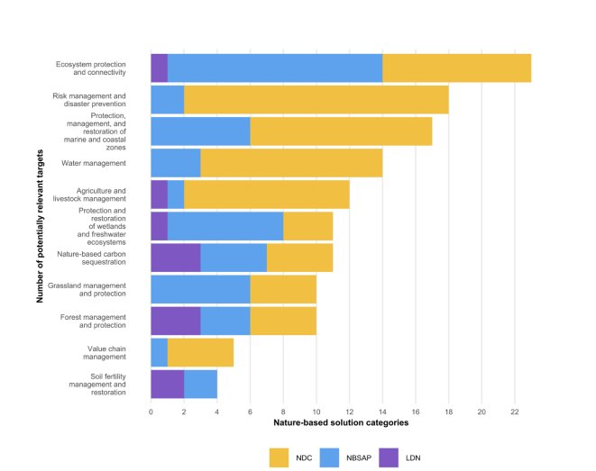
Figure 7-1 Number of national targets that appear to pertain to each of the nature-based solution themes
To improve integrated coordination and implementation between these targets, the Government acknowledges that a governance and institutional mechanism needs to be established while also outlining comprehensive activities during the development of the NDC and LDN Implementation Plans (including flagship projects) and the NBSAP. Further, the targets outlined under these national policy frameworks will be geo-spatially mapped, including the identification of NbS, this will support to improve monitoring and reporting while minimising potential inconsistencies.
Just Transition: A just transition is increasingly recognised as a vital principle in ensuring that climate action is inclusive, equitable, and socially responsive. Rooted in the Paris Agreement preamble and promoted through frameworks such as the ILO Guidelines for a Just Transition, it refers to the process of greening the economy in a way that is as fair and inclusive as possible to all concerned leaving no one behind. For developing countries like Sri Lanka, where large portions of the population depend on climatesensitive sectors for their livelihoods, a just transition is essential to safeguard social equity while accelerating low-emission, climate-resilient development.
Sri Lanka's vision for a just transition considers its unique national development context: a lower-middleincome country vulnerable to climate risks, with significant shares of employment in agriculture, fisheries, informal labor, and public sector-driven infrastructure. Embedding a just transition within NDC implementation will support the realisation of several SDGs, including SDG 1 (No Poverty), SDG 5 (Gender Equality), SDG 8 (Decent Work and Economic Growth), SDG 10 (Reduced Inequalities), and SDG 13 (Climate Action). Institutionalising social dialogue between government, private sector, workers, employers, and civil society can further strengthen the governance of climate transitions. It ensures that policies are not only technically sound but also socially accepted and responsive to local realities. Sri Lanka's pathway to net-zero and nature-positive development needs to be underpinned by inclusive planning, capacity-building, and investment in green skills and jobs. This participatory model fosters trust, enhances policy coherence across sectors, and unlocks climate finance by demonstrating a commitment to equitable development. A just transition can transform NDC 3.0 into a people-centered strategy for sustainable, inclusive, and resilient development.
A just transition is a strategic necessity for the effective and inclusive implementation of Sri Lanka's NDC 3.0 bridging climate ambition and social justice. Sri Lanka's NDC 3.0 outlines ambitious mitigation and adaptation contributions across 15 key economic sectors and L&D as a crosscutting sector. Many of these actions present not only environmental benefits but also opportunities to generate co-benefits for employment, local development, and community resilience which are core elements of a just transition.
As Sri Lanka advances toward its climate commitments, a Just Transition Framework can help to ensure that the shift to a low-carbon, climate-resilient economy does not exacerbate existing inequalities or leave vulnerable communities behind. This approach is particularly vital in sectors such as energy, agriculture, and transport, where decarbonisation could disrupt traditional livelihoods. By embedding principles of equity, participation, and rights-based development, a just transition enables climate action that is socially inclusive and economically empowering.
For instance, Sri Lanka's renewable energy expansion and energy efficiency commitments offer pathways to generate green jobs, particularly in rural and semi-urban areas. The transition to electric mobility and improved public transport systems is likely to impact traditional employment structures in the transport sector. Similarly, adaptation strategies in agriculture and water resource management are directly linked to protecting livelihoods and food security for vulnerable populations, while fostering climate-resilient communities.
As the NDC 3.0 has identified, skills development, technology transfer, and enhanced access to finance particularly, for small-scale entrepreneurs and youth will be essential to support this socio-economic transformation. Strengthening these linkages through dedicated just transition strategies can help ensure that no community or worker group is disproportionately burdened by the transition to a low-carbon economy.
To integrate just transition effectively into NDC implementation, Sri Lanka recognises the need for the following strategic actions to be incorporated and considered across the NDC sectors:
These pathways align with existing commitments and institutional mechanisms. Continued collaboration with development partners, international climate finance institutions, and national stakeholders will be key to realising these goals.
Operationalizing a just transition in Sri Lanka will require dedicated and sustained international support. While the NDC 3.0 outlines strategic cross-sectoral actions that can generate employment, build resilience, and reduce inequalities, the realisation of these outcomes hinges on access to predictable and adequate climate finance, targeted capacity-building, and appropriate technology transfer mechanisms. Priority areas where external support is crucial include:
The Paris Agreement is vested with a gender action plan (Lima workplan)[162] that recognises gender equality and women's empowerment in climate action as an essential requisite. Parties are urged to adopt inclusive, participatory and gender-responsive approaches across capacity building, participation and leadership, planning and implementation, monitoring and in climate policy efforts. Further, the Paris Agreement places a critical importance on 'inter-generational equity' where climate actions need to be designed not only to safeguard the present, but also to ensure a sustainable and equitable future for children, youth, and future generations. As a signatory to the Paris Agreement, Sri Lanka is cognizant of the inclusive and equitable climate action that is globally accepted to strengthen society's resilience against the adverse impacts of climate change.
In Sri Lanka, vulnerability to climate impacts and adaptation capacity are profoundly influenced by intersecting cultural, socio-economic and political marginalisation, which amplify the challenges faced by different demographic groups in particular, children, youth, older persons, PWDs, gender-diverse communities, and women/girls in all marginalised groups. The vulnerabilities different groups face is not attributable to a single factor, but to the convergence of structural barriers linked to gender relations, age, ethnicity, migration, capacities, poverty, political voice, and geographical locations, among others.[163] Furthermore, different livelihoods such as farming or fishing or plantation sector labourers or other outdoor work (street vendors, construction workers) also face specific issues; women among these categories tend to face greater levels of marginalisation. Such overlaps result in compounded forms of marginalisation, exacerbating the exposure and the impacts of climate change and limiting their capacity to respond and adapt effectively.
The chapters under NDC 3.0 recognise the compounded threats and different adaptive capacities. Some scenarios of climate risks for demographic groups in Sri Lanka are presented below:
163 Samaraweera, W. G. R. L., Dharmadasa, R. A. P. I. S., Kumara, P. H. T., & Bandara, A. S. G. S. (2024). Evidence of climate change impacts in Sri Lanka: A review of literature. Sri Lanka Journal of Economic Research , 11(2), 69-94.
had their education disrupted or temporarily halted due to school closures forced by floods and landslides.[170] Climate risks also spill over to perceptions and preferences for livelihoods among youth. A perception survey (2021) by the Institute of Policy Studies (IPS) highlights that 55% of young people are deterred by high uncertainty and exposure to disasters in the agriculture sector. Furthermore, 46% identified low profits in farming as a primary reason for not choosing it as a livelihood.[171] Interestingly the survey shows that there is low overall awareness on climate change (45%) and one-third feel climate change will strongly affect them but there is high optimism, with three-quarters believing solutions are achievable.[172]
Climate change and youth in Sri Lanka
. Southern Voice.
& Rehman, Z. U. (2021). Young people on climate change: A perception survey - Country report: Sri Lanka . British Council Sri Lanka.
175
Ibid.
household displacement including PWDs to move. 179 Gender norms, lack of support systems, and limited access to information influence mobility decisions. Women and girls often face heightened risks from heat stress, poor sanitation, and lack of menstrual hygiene during disasters.[180] Furthermore, the care burden restricts women's ability to be more productive. The overall participation rate for unpaid domestic services related activities for men and women are 54% and 86.4% respectively.[181] When natural hazards occur, women's care responsibilities also intensify. Extreme weather events and disasters linked to climate change can intensify gender-based violence (GBV) and child marriage, undermining human rights and hindering resilience-building efforts.[182] In Sri Lanka, worsening climate conditions, particularly affecting women who are both farmers and caregivers, can lead to increased psychological and physical abuse by their partners.[183] Proposed actions that increase resilience of women have been included under many of the sectoral NDCs (i.e, as Energy, transport, waste, water, agriculture, fisheries etc).
These marginalised groups also face numerous challenges that are recognised in the priority areas of the UNFCCC gender action plan that have also been considered in the design of the NDC 3.0 to address the following issues.
PWDs also face high rates of unemployment due to negative employer attitudes and biases stemming from a lack of awareness, sensitivity and practical understanding of the skills and abilities of PWDs. Furthermore, limited infrastructure facilities not just in the work place but also in terms of transport and training opportunities that cater to the needs of PWDs further exacerb[187]ate challenges for PWDs, particularly for women with disabilities. 187
The NDCs are designed to support a just transition that requires inclusive, gender-responsive action to ensure reduction in emissions as well as to advance social justice and decent work for all. For example NDC 1 in the energy sector recognises the potential of job creation opportunities for women and youth in the growth of renewable energy. The Agriculture (mitigation) NDC 3 recognises promotion of decentralised renewable energy systems to create opportunities to engage and empower local communities and other
social groups in rural economic development. While in the livestock sector NDC 6 specifies promotion of renewable energy applications for livestock and poultry farming for local communities including women. Other sectoral NDC targets (i.e waste, industries, transport, fisheries, water, health, urban and biodiversity), also recognise that specific groups, especially youth, PWDs and women among all marginalised groups require customised capacity development and empowerment programmes, job creation in green, sustainable and alternative jobs and infrastructure services in order to increase their adaptive capacities and engagement in green/sustainable actions (see table 8.3).
In the fisheries sector, factors such as the absence of technologically advanced vessels which ensure safety and efficiency for both men and women, limited opportunities for women to acquire skills in swimming and deep-sea diving, and societal disapproval restrict women's engagement in more sustainable or technologically advanced fishing methods. Women are also prominent in fisheries processing activities such as fish drying that is done with basic equipment, spaces, technology and marketing options. Fishery sector NDCs have the scope and opportunity to improve practices to enable better adaptation for women to contribute to the sector. Furthermore, in the plantation sector as well, new technological advancements and better agriculture practices are slow to take root especially among small holder tea producers - with many residing in remote areas with limited access.
women play vital yet often unrecognised informal roles and domestic responsibilities, male counterparts being the main decision maker or owner of livelihood assets, lack of skills largely exclude women from institutional decision-making processes especially at local and national levels.
In Sri Lanka, cultural norms view forestry as a male domain, despite women performing 68-100% of non-wood forest product gathering and 60-80% of planting and conservation work in home gardens (Athukorala 2013). 191 These perceptions limit women's participation in forest planning, biodiversity conservation and decision-making, reinforcing their underrepresentation and lack of recognition in climate action and conservation.
The coastal and marine fisheries sector provides full or par[194]t-time direct or indirect employment to around 2.7 million people. 194 It is also said that 9.4% percent [195]those who derive their income from the fisheries sector are women. 195 Although these statistics represent formal employment figures, it overlooks the significant informal roles women occupy (mending nets, cleaning fish selling, processing ) due to existing gender dynamics in Sri Lanka and their role is often unrecognised.[196] It also raises the importance of more comprehensive and disaggregated research/assessments and data to understand the existing conditions [197]and also to monitor the progress made towards sustainable fishing. 197 Deforestation has also become a significant challenge to rural communities, especially indigeno[198]us communities who rely on forest resources for their livelihoods. 198
The 15% decline in tea productivity due to irregular weather patterns directly threatens the livelihoods of close to 1 million Sri Lankan[199] tea workers, many of whom are from the Malaiyaha Tamil community. 199 Despite contributing significantly to national GDP, the Malaiyaha Community remains among the poorest, facing systemic barriers such as inadequate access to productive assets, education, and healthcare, as well as state services including social protection which exacerbate their susceptibility to climate impacts.[200] For smallholder tea producers climate change intensifies the limited productivity due to limited GAP approa[201]ches, lack of replanting, inability to afford the increased cost of fertilizer and other chemicals. 201
The urban poor in Sri Lanka are particularly vulnerable to escalating climate threats such as floods, droughts, landslides extreme heat events, and water scarcity leading to loss of livelihoods and infrastructural damage (as outlined in the Water and L&D sectoral chapters). Migration from rural
and conflict-affected areas to urban areas, lead to increased density in urban slums and a rise in vulnerabilities for groups such as older persons, children, youth, PWDs, and women in these groups. Rapid urban growth has resulted in the expansion[202] of informal settlements, many situated in hazard-prone areas like flood zones and coastal regions. 202 These communities are disproportionately affected by flooding, as wa[203]s seen with the 2017 floods that caused extensive damage for the urban poor in Colombo and Gampaha. 203 Additionally, rising temperatures have worsened UHI effects, increasing health risks, especially for older persons and children (as recognised in the Health sectoral Chapter). Limited access to reliable water sources exacerbates water insecurity during dry spells, affecting daily living conditions and health and the burden on women who are entrusted with the wellbeing of their families (as referred to in NDC 3 in the sectoral chapter on Water). Urban poor populations often lack social safety nets and adaptive capacity, making them especially[204] susceptible to the worsening impacts of climate change (as noted in the L&D sectoral chapter). 204
Overcrowding and inadequate water, sanitation, and hygiene (WASH) related infrastructure in informal urban settlements contribute to heightened ri[205]sks of vector-borne diseases like dengue and malaria, which have seen a resurgence in recent years. 205 NDC 4 under Health deals specifically with these threats that affect older persons and children more but also impact working p[206]opulations who lose work days due to illnesses or due to care for their older persons and children. 206
In Sri Lanka formal banking services require collateral, which almost all marginalised groups (resource poor men/women in general, specifically female headed households, PWDs, and youth) are unable to provide to get a loan. They are considered a high-risk investment where climate related losses can further[207] decrease their credit worthiness. Even Insurance companies tend to charge higher premiums to PWDs. 207
Social protection schemes - that are largely subsidy focussed - are not adequate to cover adaptation to climate change on top of current commitments.[208] Between 2010 and 2018, around 14 million people were impacted by floods and 12 million by drought. 208 PWDs who already have long term care needs are also severely at risk of climate emergencies. The sectoral chapter on water notes that the future trends of rainfall continue to be increased in the wet zone with increased floods, landslides and coastal lowland submergence, leading to huge damages to infrastructure, lives and livelihoods of the communities.
Sri Lanka, floods and landslides May 2017.
Many older persons, especially those that fall into the lower income bracket, continue to work in order to make ends meet. These jobs are mainly in the informal sector that do not offer regular or adequate income or retirement schemes. The government offers several social protection schemes, including: the Asswesuma Programme, which supports low-income families; the Elderly Allowance which provides financial assistance to seniors aged 70; as well as other state sponsored services for health and transport etc[209] and humanitarian support such as disaster relief for L&D. Climate Change impacts increase the reliance on such schemes but they need to go beyond subsidies or as relief measures - as intended in the Sri Lanka's Social Protection Policy (2024). 210
Overall, marginalised populations require targeted and sectorally specific support to access climate information, financial resources, and technical assistance to strengthen their adaptive capacity to cope with climate impacts and ensure their participation in climate action.
The diverse socio-economic and cultural contexts across different regions and communities within Sri Lanka mean that NDC commitments cannot be a 'one size fits all' approach. Failing to consider marginalised groups risks amplifying existing vulnerabilities, limiting their adaptive capacity, and undermining the overall effectiveness of climate actions. Addressing GESI is paramount to avoid leaving out marginalised groups, ensuring equitable and inclusive outcomes in national and local level climate action.
Table 8.1 summarises the key GESI integration activities across the sectoral NDCs, showcasing specific measures, KPIs, and future activities/recommendations which were captured during consultations.
|
Table 8.1 Overview of GESI integration across sectors Sector |
GESI integration |
Level of GESI integration |
|
Energy |
NDC 1 recognises the potential of job creation opportunities for women and youth in the growth of renewable energy. |
NDC description (Table 4.2.1) |
|
NDC 3 describes the potential for new jobs for women and youth due to robust demand for energy efficiency services. |
||
|
NDC 5 emphasises the importance of developing human resources to support these goals by engaging women and youth through tailored empowerment programs. Additionally, educational initiatives will be implemented to equip children and youth with the skills and knowledge needed to take on greater responsibilities in Sri Lanka's increasingly sustainable, energy-focused electricity sector in the future. Vocational training programmes will also be implemented such as the virtual net training programme, promoting green skills and public awareness of renewable energy benefits. |
||
|
Transport |
NDC 1 recognises that in the Park & Ride system, related infrastructure, facilities, and services are to be designed and operated to ensure differences in mobility patterns, accessibility, and safety and security of women, children, older persons, and PWDs. |
NDC description (Table 4.2.2) |
|
NDC 2 notes that the design and operation of public transport systems are to be implemented with the consideration of the specific needs and safety of women and PWDs. |
|
Sector |
GESI integration |
Level of GESI integration |
|
NDC4also envisages that electric mobility systems are designed to ensure mobility is more responsive to GESI aspects, by incorporating the specific needs of children, older persons, PWDs, and women in all these groups while promoting their active participation and engagement in planning and implementation. |
||
|
Industry |
NDC 1 indicates that the training of national experts with at least 40% of women beneficiaries across the prevalent industrial sectors such as tea, garment, rubber and textile industries, as well as through increasing the number of women as national energy auditors, energy managers and energy system optimisation experts. |
NDC description (Table 4.2.3) |
|
NDC 2 foresees the strengthened capacity-building efforts with a minimum of 40% participation of women to ensure the effective uptake of fuel switching and enhancing the understanding of the associated technologies. |
||
|
NDC 7 revolves around amplifying the scope of funding and targeted investments for industrial decarbonisation with consideration for gender equality, empowerment of women and creating opportunities for youth. Promotion and improvement of the National Green Reporting System for low-carbon industries and capacity building for industrial GHG emissions accounting and reporting, with a minimum of 40% women, supports companies to assess and showcase their mitigation efforts while attracting investment. |
||
|
Waste |
NDC 7 highlights opportunities for the creation of green jobs for women, youth, and PWDs; offering vocational training and certification for waste collectors; ensuring access to user-friendly waste technologies; improving public and sex-disaggregated sanitation facilities; and making composting and biogas affordable for low-income households and marginalised communities. |
NDC description (Table 4.2.4) |
|
Agriculture (Mitigation) |
NDC 1 integrates GESI considerations to minimising postharvest losses and improving value addition. |
NDC description (Table 2.4.6) |
|
NDC 2 suggests that efficient resource management could be further strengthened by integrating GESI aspects. |
||
|
NDC 3 notes that the promotion of decentralised renewable energy systems could provide more opportunities to engage and empower local communities and other social groups in rural economic development. Suggests this should be explored further in implementation of this NDC. |
||
|
NDC 4 notes that the enhancement in resource use efficiency could be enriched by incorporating social criteria in technology selection and adoption. |
||
|
NDC 5 suggests that the outcomes of the proposed NDC could be further enhanced by incorporating social considerations in implementation. |
||
|
In the promotion of renewable energy applications for livestock and poultry farming in NDC 6, it is noted that local communities and social groups could be engaged and empowered. |
||
|
Agriculture (Adaptation) |
NDC 2 envisages to improve skills of farmers for seasonal climate forecasting. |
NDC description (Table 5.2.1) |
|
NDC 4 aims to introduce integrated pest management (IPM) and integrated plant nutrient systems (IPNS) to farming communities aiming to promote GAP and technological development in the sector. |
||
|
NDC 6 emphasises on increasing farmer income via reducing post- harvest losses and promoting value addition of crops in a changing climate. |
||
|
Fisheries |
In NDC 2, traditional fisheries and aquaculture is identified to generate economic opportunities and support coastal communities. |
NDC description (Table 5.2.2) |
|
NDC 5 recognises safety at sea and wellbeing of seafarers, through training, equipment, procedures to handle emergencies, and navigate challenging weather conditions. |
||
|
NDC 6 outlines the importance of conducting climate-related research to understand the fisheries sector of Sri Lanka to identify vulnerabilities faced by coastal communities. |
||
|
In NDC 7 coastal communities are targeted for capacity development and alternative livelihoods to build their adaptive capacity and climate resilience. |
||
|
Water |
NDC 3 focuses on developing systems that can withstand climate fluctuations and ensure reliable access to clean water for communities, particularly in vulnerable regions. |
NDC description (Table 5.2.4) |
|
NDC 4 encourages conducting public/institutional awareness programmes on reusing wastewater. Gender equity is addressed by increasing women's participation in the sector. |
||
|
NDC6aimsto conduct promotional/ awareness programmes for the public/institutions, totalling 1052 programmes at the end of 2035. This NDC is more GESI responsive by incorporating the different strata of the public and promoting their active participation and engagement in promotional/ awareness programmers. |
||
|
NDC 8 suggests enhancing women's participation in the community with the purpose of building capacity and enabling access to new technology. |
||
|
NDC 9 includes the assessment of river floods and mitigation measures and early warning systems for priority basins is essential to identify preventive measures in vulnerable areas for the safety of the communities living in these river basins. |
||
|
Biodiversity |
NDC 2 notes that an underlying principle of integrated landscape planning and management is to find and promote synergies among activities that improve production systems, enhance livelihoods, support the conservation of biodiversity and sustain ecosystem services. |
NDC description (Table 5.2.5) |
|
NDC 6 highlights improving policies and regulatory measures related to biodiversity and natural resources would help protect the environment and support communities, provide clean air, fresh water, and healthy ecosystems. |
||
|
NDC 7 aims to mobilise finance for biodiversity and suggests aligning public, private and community investments to foster innovative, scalable solutions for long-term protection and sustainable use of natural ecosystems. A stakeholder engagement map and a multi-stakeholder coordination mechanism is to be established to clearly define roles and responsibilities. |
||
|
Coastal and Marine |
NDC 2 notes that to improve coastal hazard and vulnerability mapping, it is required to have an updated database with all social strata and vulnerable locations in the coastal belt, integrating coastal hazard maps into the national physical plan |
NDC description (Table 5.2.6) |
|
NDC 3 outlines interventions to engage all vulnerable social categories in incorporating climate change information into the updates of the CZMP. |
||
|
NDC 4 recognises the importance of enhancing the resilience of coastal communities and their natural habitat to safeguard lives, ecosystems, and economies from current and future challenges, and proposes interventions to identify and declare candidate sites, including those with local communities, gazetting the same, and developing the management plans to cover all gazetted sites by 2034, incorporating GESI considerations. |
||
|
Health |
NDC 1 recognises the specific needs for different vulnerable communities. |
NDC description (Table 5.2.7) |
|
In NDC2, the health sector has identified climate-sensitive diseases (in 2023) as well as communities and groups that are most at risk (i.e. older persons, children, pregnant women, vulnerable worker groups and any other vulnerable categories) towards developing guidelines for managing climate change induced non- communicable diseases due to be completed in 2026. |
||
|
NDC 3 concentrates on managing the impacts of malnutrition with actions such as developing a mechanism for early warning systems on food availability, carrying out programmes for nutrition management in general while also having targeted support for vulnerable groups by the midwives at the household level. |
||
|
UPHS |
NDC 2 highlights that in formulating an urban settlement policy considering GESI is critical for disaster risk management. Also prioritises capacity building programmes in DRR for vulnerable groups. |
NDC description (Table 5.2.8) |
|
NDC 3 flags that GESI considerations are to be focused on specifically for marginalised coastal communities and vulnerable groups when mapping UHI. |
||
|
Tourism |
NDC2notes that sound medical assistance and health services plans to be developed by 2035 to support the health and wellbeing of tourists. Also suggests increasing carrying capacity studies to support DRR planning in climate-vulnerable tourism areas. |
NDC description (Table 5.2.9) |
|
NDC 4 addresses gender equity by increasing women's participation in the sector, signalled by gender disaggregated data, leveraging education trends and safety initiatives. |
||
|
L&D |
NDC 1 targets that by 2035, at the minimum 5 focal point cells in priority sectors will be fully capacitated to conduct data-informed loss and damage stocktaking assessments and periodic progress reviews that will address both structural/physical impacts and social inclusion dimensions such as gender, age, and disability. |
NDC description (Table 6.1) |
|
NDC 2 states that by 2035, an integrated climate and weather forecasting system would be expected to provide timely and accurate information including on impacts on different marginalised groups, covering both rapid and slow onset disasters, enhancing collective coverage by 35% (minimum). |
||
|
As per NDC3, by 2035, the target is to establish an integratedL&D database encompassing technical and social economic information, disaggregated by gender, age, disability. Developing protocols for L&D data governance, including standards for data collection, sharing, use, and database management is also targeted to streamline and increase quality and robustness of the system. |
||
|
NDC4is on the policy and regulatory provisions for both rapid and slow onset will be developed for implementation of L&D actions, recognising GESI implications and implementation needs. |
||
|
NDC 5 focuses on developing a comprehensive Risk Management Framework with an integrated approach aiming to bolster resilience in communities most affected by climate impacts while promoting sustainable development. |
The interconnection between climate action and GESI must be incorporated into national and sectoral plans, as outlined in NDC 2.0 and now in 3.0 as well as in the updated NAP 2025-2034 and the nine PAPs 20252034. The dedicated Gender and Social Action Plan (GSAP) developed as part of the NAP provides a framework for the systematic mainstreaming of GESI in climate adaptation planning and implementation. The GSAP had three rounds of consultations with a wide range of stakeholders including government agencies, civil society, development partners, academia, and GESI experts, and is grounded in international best practices and UNFCCC guidelines. It is aligned to the NDCs and can provide recommendations and measurable actions to address the differentiated vulnerabilities of children, youth, PWDs, and other marginalised groups and women among all these groups. These measures need to be complementary to the NDC implementation plan and related budgets to improve effective implementation. The required technical capacities (sector specific, social, GESI) must be included in the national and sectoral plans and budgets.
To effectively embed GESI considerations into Sri Lanka's climate action framework, a systematic, phased approach is essential. The following steps outline the way forward, aligned with the priority areas of the UNFCCC gender action plan to address the identified gaps in implementing climate action.
Sri Lanka has a well-established institutional framework for climate action, as illustrated in Figure 9.1. At the core of this structure is the Ministry of Environment, which functions as the national focal point to the UNFCCC and provides overall policy direction and coordination for NDC implementation.
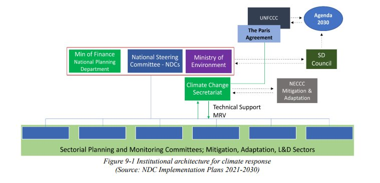
Figure 9-1 Institutional architecture for climate response
(Source: NDC Implementation Plans 2021-2030)
The Government of Sri Lanka has established a multi-agency National Steering Committee (NSC) to guide and coordinate the implementation of its NDCs. The NSC is chaired by the Secretary of the Ministry of Environment. The NSC comprises of the Secretaries of the key line ministries responsible for the NDC sectors, along with representatives from key institutions such as the National Sustainable Development Council, the Department of Fiscal Policy, the National Planning Department, and the Ministry of Finance. The NSC plays a central role in ensuring effective implementation through enhanced inter-agency collaboration, particularly of cross-sectoral actions. It also supports to streamline efforts, resolve implementation challenges, promote alignment between sectoral policies, and regularly monitor progress against established milestones, thereby fostering accountability and coherence in Sri Lanka's climate response.
The Ministry of Environment serves as Sri Lanka's national focal point to the UNFCCC. The CCS was established in 2008 within the Ministry of Environment, as the dedicated unit responsible for coordinating national climate policy and international climate commitments. Since its inception, the CCS has played a key role in establishing institutional mechanisms, including the Inter-Agency Committee on Climate Change and the specialised National Expert Committees on Climate Change (NECCCs) for adaptation and mitigation. Functioning as the central coordinating body, the CCS aims to ensure alignment amongst institutions, supports monitoring and reporting, and strengthens national capacity for effective climate action. Specifically, the CCS is tasked with preparing national GHG inventories, facilitating access to and the management of international climate finance (e.g., GCF, Adaptation Fund), supporting technology transfer, and coordinating the implementation of national mitigation and adaptation strategies. It also oversees the collection, analysis, and dissemination of climate-related data and leads the preparation of national climate reporting requirements, including National Communications and BTRs.
Dedicated Planning and Monitoring Committees (PMCs) have been established for each NDC sector to oversee the integration and execution of climate commitments. These committees are comprised of senior officials and the heads of relevant departments and institutions, with the respective sectoral Ministry's Secretary serving as the chair. The PMCs play a pivotal role in aligning NDC actions with sector-specific development agendas by embedding climate strategies into routine planning processes. This integration enhances the prioritisation of NDC activities in both national budget allocations and proposal requests for international donor assistance. Each PMC is responsible for facilitating the implementation of sectoral NDC plans, engaging with both public and private stakeholders to mobilise resources and assistance. This body is expected to conduct detailed technical, financial, capacity needs assessments to ensure that these are communicated to the NSC and CCS for coordinated action. Furthermore, the PMCs are mandated to track implementation progress, identify delays or risks, and ensure that climate interventions uphold sustainable development safeguards across all stages of delivery.
The successful implementation of Sri Lanka's NDC 3.0 relies on addressing a set of interconnected needs across finance, technology, capacity development, and institutional strengthening. Meeting these requirements will enable the country to reduce GHG emissions, build climate resilience and advance inclusive sustainable development. Ensuring adequate support is available is critical to convert climate ambition into effective, equitable, and lasting action. The following sections present the overarching needs, more specific sectoral requirements are outlined within each NDC sectoral narrative.
Substantial financial support is required across sectors, with a priority to mobilise international climate finance through multi-lateral sources such as the GCF, Adaptation Fund, and GEF. This is particularly vital to scale up efforts in the health, tourism, biodiversity, water, livestock, and coastal management sectors. Blended finance mechanisms will also be essential to attract private sector investment.
Aligning domestic resource allocation with climate objectives is equally important. This entails integrating climate goals into the national budgeting process and strengthening public investment systems to account for climate-related risks. Historically, inadequate and inconsistent financing has hindered implementation, underscoring the need for increased and sustained national funding.
Targeted investments are needed to strengthen early warning systems, build disaster-resilient infrastructure, promote water conservation, and support urban adaptation. It is also critical to enhance the bankability of projects, particularly in the energy, industry, waste, transport, and forestry sectors. This includes providing support to develop high-quality proposals and create incentives to encourage PPPs.
At the local and community-levels, gender-responsive and socially inclusive livelihood-based adaptation initiatives face significant financial barriers, especially in sectors like fisheries and livestock. Closing these gaps is vital to ensure both impact and equity in implementation.
As outlined in BTR1, the Government is undertaking a Climate Public Expenditure and Institutional Review (CPEIR) and issued a circular with guidelines for climate change relat[212]ed expenditure tagging under three categories: adaptation, mitigation, L&D for the 2026 budget. 212 The government will further build on this
Some of the key mitigation technologies to support implementation of NDCs include smart grids, energy storage, ICT-based grid management, and cybersecurity systems for a flexible and secure electricity network. Renewable energy innovations and R&D are needed to enhance renewable energy integration. In the transport sector, electric vehicles, charging infrastructure, and smart systems are priorities, while the industry sector requires high-efficiency motors and advanced HVAC technologies. Composting, biogas, and wtE systems are needed to address emissions from the waste sector.
To strengthen adaptation efforts the deployment of technologies is critical. This includes improved crop varieties, irrigation systems and forecasting tools to support climate-resilient agriculture as well as water resource management, and public health infrastructure. To improve ecosystem conservation, GIS-based mapping, ecosystem monitoring and gene banking are required. Additionally, data-driven tools, such as climate models and decision-support systems, are necessary for informed planning and adaptive responses.
Capacity building must target a wide range of stakeholders. Policy-makers require training in integrated climate planning, budgeting, and finance, while engineers and technicians need skills to manage emerging technologies like EVs and smart grids. Strengthening research and fostering publicprivate academic collaboration will also promote innovation.
Sector-specific capacity development is essential. This includes DSM in energy, user engagement for clean transport, green standards in industry, and technical training for informal workers and local authorities in waste management. The agriculture sector requires training in new technologies and inclusive outreach for women and youth.
Adaptation needs include continuous training in risk management, ecosystem-based approaches, and MRV systems. Expanding the Training of Trainers (ToT) model to other sectors and providing technical education to marginalised communities, especially in tourism, fisheries, and livestock, will enhance local resilience. The retention of skilled professionals, especially in water management, must be addressed through longterm strategies.
Strengthening institutional frameworks is vital for coherent and effective climate action. Regulatory enhancements are needed for distributed energy generation, electric transport, green industrial standards, and waste governance. Institutions must also support sustainable agriculture through targeted programmes.
Robust data systems and MRV mechanisms are essential to track emissions and adaptation outcomes across sectors. To further optimise coordinated implementation, inter-ministerial coordination needs to be enhanced and a mechanism/form should be created to include informal and private sector actors.
Digital governance tools and integrated platforms should support transparent decision-making in sectors like urban planning and tourism. Legal and policy frameworks must be updated to further embed climate adaptation into biodiversity, sustainable land management and urban development strategies, while empowering decentralised, area-specific institutional actions.
As per Article 4, paragraph 8 of the Paris Agreement and Decision 4/CMA.1, Table 10.1 presents the descriptive and contextual information necessary for clarity, transp
|
Table 10.1 ICTU Table Theme 1: Quantifiable information on the reference point (including, as appropriate, a base year) |
||
|
1(a) |
Reference year(s), base year(s), reference period(s) or other starting point(s) |
The reference period of Sri Lanka's NDC 3.0 is 2026 to 2035. The net GHG emissions and mitigation targets are estimated as the cumulative GHG emissions by sources, and removals by sinks during this reference period. The baseline emissions for the reference period are estimated with a BAU scenario originating from the historical base year in each of the NDC sectors. 2010 is taken as the historical base year for the transport, industry, waste, agriculture, and forestry sectors, and 2013 for the electricity (power) sector. |
|
1(b) |
Quantifiable information on the reference indicators, their values in the reference year(s), base year(s), reference period(s) or other starting point(s), and, as applicable, in the target year |
In the baseline (under BAU scenario), the total cumulative GHG emissions (in power, transport, industry, agriculture, and waste sectors) for the reference period from 2026 to 2035 is estimated as 577,848,900 MT CO 2e and net removal (in the forestry sector) as 188,888,500 MT CO 2e during the reference period from 2026 to 2035. Further to the entire reference period, mid-period 2026 to 2030 amounts related to BAU scenario are estimated as 264,210,800MT CO 2e and net removal as 93,653,400MTCO 2e . |
|
1(c) |
For strategies, plans and actions referred to in Article 4, paragraph 6, of the Paris Agreement, or polices and measures as components of NDCs where paragraph 1(b) above is not applicable, Parties to provide other relevant information |
Not applicable. |
|
1(d) |
Target relative to the reference indicator, expressed numerically, for example in percentage or amount of reduction |
The primary target is set for the ten-year reference period from 2026 to 2035, as follows:
|
|
1(e) |
Information on sources of data used in quantifying the reference point(s) |
The main reference documents in quantifying the GHG emissions and removals include: - Third National Communication (NC3) of Sri Lanka (December 2022); - First Biennial Transparency Report (BTR1) of Sri Lanka (December 2024); - Carbon Net Zero 2050 Roadmap and Strategic Plan of Sri Lanka (2023) In addition to the above national documents, additional sectoral plans and programmes were referred, as appropriate. For example, the Long Term Generation Expansion Plan of Ceylon Electricity Board for the power sector NDCs. |
|
1(f) |
Information on the circumstances under which the Party may update the values of the reference indicators. |
The data and information used in reference indicators of NDC 3.0 will be further reviewed during the preparation on the NDC Implementation Plan, and will be periodically updated in each successive national GHG inventory, National Communications and BTR, as applicable. Theme 2: Time frames and/or periods for implementation |
|
2(a) |
Time frame and/or period for implementation, including start and end date, consistent with any further relevant decision adopted by the COP serving as the meeting of the Parties to the Paris Agreement (CMA) |
From 01 st January 2026 to 31 st December 2035. |
|
2(b) |
Whether it is a single- year or multi-year target, as applicable. |
Single year target of cumulative emissions and removals for the reference period from 2026 to 2035. Further, a mid-period target from 2026 to 2030 is also set. Theme 3: Scope and coverage |
|
3(a) |
General description of the target |
An enhanced and more ambitious national target of reducing cumulative GHG emissions by 20.09% for the reference period from 2026-2035 and by 15.61% for the mid-period from 2026-2030. The related targets for the increase of cumulative net GHG removals are: by 4.49% for the reference period 2026-2035 and by 2.28% for the mid-period 2026-2030. An overall summary of the sectoral level targets together with a comparison of NDC 2.0 (2021-2030) is presented in Section 4.1 and detailed descriptions are provided in Section 4.2. |
|
3(b) |
Sectors, gases, categories and pools covered by the NDCs, including, as applicable, consistent with IPCC guidelines |
Electricity (power), Transport, Industry, Waste, Agriculture (inclusive of livestock), and Forestry Gases covered: Carbon dioxide (CO 2 ), methane (CH 4 ), nitrous oxide (N 2 O). In addition, in the industry sector, Hydrofluorocarbons (HFCs). |
|
3(c) |
How the Party has taken into consideration paragraph 31(c) and (d) of decision 1/CP.21 |
NDC 3.0 of Sri Lanka includes all economic sectors which contribute to anthropogenic GHG emissions and removals. In each sector, activities, sources (and sinks in the case of forestry) have been considered and depending on the availability of quantifiable information, have been included in the assessments. |
|
3(d) |
Mitigation co-benefits resulting from Parties' adaptation actions and/or economic diversification plans, including description of specific projects, measures and initiatives of Parties' adaptation actions and/or economic diversification plans. |
Mitigation co-benefits of adaptation sectors have been identified, but not quantified specifically, unless the related activities are already covered in the mitigation sectors. Theme 4: Planning processes |
|
4(a) |
Information on the planning processes that the Party undertook to prepare its NDCs and, if available, on the Party's implementation plans, including, as appropriate: |
The NDC development and implementation in Sri Lanka is primarily supported by the Focal Point (FP) and Technical Working Group (TWG) of each sector, in consultations with the stakeholders, assisted by the Climate Change Secretariat (CCS), Ministry of Environment (MoE) as the national designated authority to the UNFCCC. In NDC 3.0, the overall approach comprised of two stages: Stage 1: Rapid Scoping Assessment, and Stage 2: Consolidation and Refinement. Stage 1 was comprised of three key steps: Step 1 Revisiting: NDC 2.0, its implementation plan, the progress for 2021, 2022, and 2023, and BTR1 were assessed to identify the NDCs that are progressive and operational. Step 2 New additions: were recent policies. Actions, and measures were referred to identify new areas and opportunities for NDCs. In particular, the national programmes and study reports considered include the draft updated Technology Needs Assessment (TNA) and Technology Action Plan (TAP), draft updated National Adaptation Plan (NAP), Carbon Net Zero 2050 Roadmap and Strategic Plan, and other sectoral plans and programmes. Step 3 Scoping: included the consideration of key attributes of NDC 3.0 (alignment) to screen the identified NDC interventions. The Second Phase also comprised of three main steps, with a series of meetings with FP andTWGs and consultations with each sector: Step 4 Eligibility check: which was used to identify climate actions that satisfy the minimum eligibility requirements to be include in NDC 3.0, particularly the availability of quantifiable information, potential for more ambitious targets, and alignment with national policies and priorities (PAMs). Step 5 Refinement: in which more detailed assessments were undertaken to establish the KPIs, baseline, targets (for 2030 and 2035), and conditional and unconditional contributions, and potential areas for GESI. Step 6 Consolidation and Validation: where the further assessments were conducted on scenario analysis, emission trajectories, policies, strategies, plans, and actions , methodological approaches, specific accounting procedures and the associated assumptions, emission factors, and data/information sources. Finally, a national validation workshop was |
|
(i) Domestic institutional arrangements, public participation and engagement with local communities and indigenous peoples, in a gender-responsive manner (ii) Contextual matters, including, inter alia, as appropriate: a. National circumstances, such as geography, climate, economy, sustainable development, and poverty eradication; b. Best practices and experience related to the preparation of the NDCs; c. Other contextual aspirations and priorities acknowledged when joining the Paris Agreement; |
To facilitate the integrated multi-level governance required to formulate and implement NDCs (and climate action in general), the Government of Sri Lanka (GoSL) has established and operationalised a comprehensive governance system and institutional architecture. This is comprised of a number of key bodies each with specific responsibilities and mandates, arranged in a hierarchical structure. This includes the National Steering Committee (NSC), National Focal Point (NFP), National Experts Committees on Climate Change (NECCC) for Adaptation and Mitigation, Sectoral Planning and Monitoring Committees (PMCs), Sector Focal Points (SFPs) and Technical Working Groups (TWGs). This institutional arrangement is presented in Figure 9.1. The NSC is an inter-agency body overseeing the implementation of NDCs, which is chaired by the Secretary of the MoE and other members of the line ministry secretaries in charge of NDC sectors. Further, the National Sustainable Development Council, the Department of Fiscal Policy, the National Planning Department, and the Ministry of Finance are all represented in the NSC. The national focal point for NDCs is the CCS of MoE, which has the mandate to facilitate the overall process of NDCs, including inter-agency coordination. The two NECCCs support CCS in an advisory capacity. Each NDC sector has its own Planning and Monitoring Committee (PMC). These PMCs are comprised of the relevant department and/or institution leaders. The sectoral development plans will fully incorporate the NDC implementation and monitoring plans, which are supported by the PMCs. Further, each NDC sector has a TWG, headed by the SFP (who leads sectoral actions), which sits under the PMC, representing all the implementing agencies of NDCs in the sector with the technical capacity to deal with the relevant climate actions. They are responsible for monitoring progress of the NDC activities, identify gaps, and report regularly to the CCS through the PMC. Sri Lanka is recognised as highly vulnerable to the impacts of climate change due to a combination of high temperatures, a unique and complex hydrological regime, a range of geographic, economic and social factors, and exposure to extreme climate events. Sri Lanka's NC3 presents climate vulnerability dimensions and risks arising from droughts, floods, landslides, and sea level rise which affect agriculture, livestock, fisheries, industry, water sources, health, biodiversity and ecosystems, human settlements and tourism on different scales. Sri Lanka has been witnessing severe impacts from climate change for several decades in the form of yearly natural disasters which affect hundreds of thousands of people. Based on the number of people affected between 1980 to 2020, the key natural hazards can be identified as floods (57.30%), droughts (32.22%), epidemics (4.17%), storms (2.58%), and other (3.73%), with around 685,000 people affected on average annually. Economic damages due to natural disasters is another key concern.A report published by United Nations Office for Disaster Risk Reduction (UNDRR) estimates direct economic damages totaling around USD 7 billion between 1990 and 2018, with flood-related disasters alone accounting for around USD 2 billion. However, the total cost of damages is much greater when including unrecorded local and small-scale events, such as regional flooding. These impacts are projected to intensify further with anticipated future climate change. The UNDRR report also estimates that, by 2050, the GDP will experience a decline of 7.7%, corresponding to a loss of USD 50 billion. The severity of climate change impacts is also reflected in a number of global indices. The Global Climate Risk Index published by the Germanwatch has ranked Sri Lanka among ten most affected countries by impacts of weather-related loss events in the world during 2016, 2017 and 2018 (with ranks of 4, 2 and 6, respectively), while ranking 30 in 2019 and 23 during the period from 2000 to 2019. In 2018, absolute losses was estimated to be USD 3,627 million, which is 1.24% of the country's GDP. Notre Dame-Global Adaptation Country Index (ND- GAIN), which summarises a country's vulnerability to climate change and its readiness to improve resilience, has ranked Sri Lanka as 104 out of 181 countries in 2020. In response to the challenges posed by climate change, the GoSL has taken several steps by establishing institutional mechanisms and introducing national policies, strategies, and actions, consistent with the global initiatives, particularly the 2030 Agenda for Sustainable Development, the Paris Agreement on Climate Change and the Sendai Framework for Disaster Risk Reduction (SFDRR). The country level initiatives which support to operationalise these agendas include: - Localised SDGs, which establish country-specific sustainable development targets, indicators and an agency framework, which is operationalised through integrating and implementing these within an institutional governance mechanism; - NDCs which communicate the countries' contributions to meet the goals of the Paris Agreement and operationalised through the NDC Implementation Plan; - NAP which analyses the current and future climate risks, identifies medium and long term adaptation options and implements them through respective strategies. Further, Provincial Adaptation Plans (PAPs) for all nine provinces have been drafted to extend climate action to the sub-national level, and Provincial Climate Units and Provincial Climate Boards have been appointed to strengthen climate governance; - National DRR strategies, which outline national strategies which include targets, indicators and time frames; and are aligned with the recommendations of the Sendai Framework. The country's commitment to address climate change issues under the broader context of sustainability is further signified with the formulation of the Carbon Net Zero 2050 Roadmap and Strategic Plan, Climate Smart Green Growth Strategy &Investment Plan, Sustainable Finance Roadmap 2.0, Green Finance Taxonomy, draft Climate Finance Strategy |
|
|
4(b) |
Specific information applicable to Parties, including regional economic integration organizations and their member States, that have reached an agreement to act jointly under Article 4, paragraph 2, of the Paris Agreement, including the Parties that agreed to act jointly and the terms of the agreement, in accordance with Article 4, paragraphs 16-18, of the Paris Agreement. |
Not Applicable. |
|
4(c) |
How the Party's preparation of its NDCs has been informed by the GST outcomes, in accordance with Article 4, paragraph 9, of the Paris Agreement |
The NDC 3.0 of Sri Lanka fundamentally represents a set of next generation NDCs, which has been informed by the GST outcomes. Although Sri Lanka is not a major GHG emitter, it has demonstrated strong mitigation ambition by setting a target of 20.09% reduction in cumulative emissions during the 2026 to 2035 ten-year period. Further, all the nine adaptation sectors and the Loss &Damage sector have incorporated enhanced actions to build resilience with broader socio- economic gains. |
|
4(d) |
Each Party with a NDC under Article 4 of the Paris Agreement that consists of adaptation action and/or economic diversification plans resulting in mitigation co-benefits consistent with Article 4, paragraph 7, of the Paris Agreement to submit information on: (i) How the economic and social consequences of response measures have been considered in developing the NDC; (ii) Specific projects, measures, and activities to be implemented to contribute to mitigation co-benefits, including information on adaptation plans that also yield mitigation co- benefits, which may cover, but are not limited to, key sectors, such as energy, resources, water resources, coastal resources, human settlements and urban planning, agriculture, and forestry; and economic diversification actions, which may cover, but are not limited to, sectors such as manufacturing and industry, energy and mining, transport and communication, construction, tourism, real estate, agriculture, and fisheries. |
In the NDC development stage, the adaptation sectors have explored the potential mitigation co-benefits, though these have not been quantified. In some instances, the identified benefits have already been included in the mitigation sectors. For example, restoration of mangroves (which is identified as an adaptation action in the coastal &marine and biodiversity sectors, is also included in the forestry sector as a mitigation action), electricity demand side management (DSM) (aspects are included in water, tourism, urban sectors as adaptation interventions, and in the power and industry sectors as mitigation actions), waste management (included in the urban sector as an adaptation action and in the waste sector as a mitigation action), and the management of post- harvest losses (is a keyNDC in both adaptation and mitigation agriculture sectors). Further GESI aspects have been considered and incorporated into NDC 3.0. Thus, the effective implementation of NDCs is envisioned to stimulate climate action, and sustainable development actions in a collective and integrated manner to support systemic transition, necessary for a climate- smart green economy and the sustainable development of the country, while recovering from the ongoing socio-economic crisis. Theme 5: Assumptions and methodological approaches, including those for estimating and accounting |
|
5(a) |
Assumptions and methodological approaches used for accounting for anthropogenic GHG emissions and removals corresponding to the Party's NDCs, consistent with decision 1/CP.21, paragraph 31, and accounting guidance adopted by the CMA |
Fundamentally, the estimation of GHG mitigation by sources and removals by sinks in NDC 3.0 of Sri Lanka followed the methodical approaches, accounting procedures, common metrics, and relevant assumptions provided by the IPCC. Accordingly, assumptions and methodological approaches used in the development of NDC 3.0 are fully aligned with those of the NC3, BTR1, and Carbon Net Zero 2050 Roadmap and Strategic Plan, where applicable. |
|
5(b) |
Assumptions and methodological approaches used for accounting for the implementation of policies and measures or strategies in the nationally determined contribution |
NDC 3.0 of Sri Lanka was developed in consideration of the related PAMs, thereby allowing to account for any potential impacts. This will be further assessed in the development of the NDC Implementation Plan and subsequent BTRs, while applying specific assumptions and methodologies, as appropriate, when assessing progress. |
|
5(c) |
If applicable, information on how the Party will take into account existing methods and guidance under the Convention to account for anthropogenic GHG emissions and removals, in accordance with Article 4, paragraph 14, of the Paris Agreement, as appropriate |
Refer 5(a) above. |
|
5(d) |
IPCC methodologies and metrics used for estimating anthropogenic GHG emissions and removals; |
IPCC Methodologies Followed: - 2006 IPCC Guidelines for National GHG Inventories, - 2013 Supplement to the 2006 IPCC Guidelines for National GHG Inventories: Wetlands, - 2019 Refinement to the 2006 IPCC Guidelines, and - 2000 IPCC Good Practice Guidance and Uncertainty Management in NationalGHG Inventories - 2013 Revised Supplementary Methods and Good Practice Guidance arising from the Kyoto Protocol. Metrics: The metrics used for GHG emissions and removals are the Global Warming Potentials (GWPs) of a 100-year time horizon that are listed in Table 8.A.1 of the IPCC Fifth Assessment Report (AR5). |
|
5(e) |
Sector-, category- or activity-specific assumptions, methodologies and approaches consistent |
Sector/activity specific assumptions, methodologies and approaches: (i) Natural disturbances on managed lands: None (ii) Harvested wood products: |
|
with IPCC guidance, as appropriate, including, as applicable: (i) Approach to addressing emissions and subsequent removals from natural disturbances on managed lands; (ii) Approach used to account for emissions and removals from harvested wood products; (iii) Approach used to address the effects of age-class structure in forests; |
In the forestry sector, emissions from deforestation and the removal of trees outside forest (TROF) were estimated as per the 2019 IPCC Refinement to the 2006 IPCC Guidelines. (iii) Age-class structure in forests: In the forestry sector, emissions from forest plantations and coconut plantations were estimated through emission factors relevant to two age classes as < 6 years and > 6 years, and emission factors were selected from the 2019 IPCC Refinement to the 2006 IPCC Guidelines. |
|
|
5(f) |
Other assumptions and methodological approaches used for understanding the NDCs and, if applicable, estimating corresponding emissions and removals, including: (i) How the reference indicators, baseline(s) and/or reference level(s), including, where applicable, sector-, category- or activity- specific reference levels, are constructed, including, for example, key parameters, assumptions, definitions, methodologies, data sources and models used; (ii) For Parties with NDCs that contain non- GHG components, information on assumptions and methodological approaches used in relation to those components, as applicable; (iii) For climate forcers included in NDCs not covered by IPCC guidelines, information |
Other assumptions and methodological approaches used: (i) Reference indicators, baseline(s) and/or reference level(s): Most of the climate actions included in the NDC mitigation sectors are supported by detailed assessments done through other national initiatives, including NDC 2.0 Implementation Plan and progress, NC3, BTR1, Carbon Net Zero 2050 Roadmap and Strategic Plan, updated draft TNAand TAP, Climate Smart Green Growth Strategy& Investment Plan. Thus, most of the methodical approaches, KPIs, baselines and targets were available for consideration in developing the NDCs. However, when selecting KPIs and targets, additional consideration was given to the availability of quantifiable information, technology and market readiness, alignment with recent political and policy changes. This was particularly important and formed the basis to revisit the activities and refine the KPIs. (ii) NDCs with non-GHG components: NDCs in Sri Lanka include onlyGHG emission and removal components. However, as a co-benefit of mitigation activities, the waste sector and transport sector contribution to air pollution will be assessed during the development of the NDC Implementation Plan. In fact, one of the NDCs identified in the Transport sector is the Vehicle Emission Testing (VET) programme, which is primarily implemented to address urban air pollution, and GHG emission reduction is a co-benefit. (ii) Climate forcers: Not applicable. (iii) Other technical information: - In the agriculture sector, the GHG emissions of paddy cultivation are estimated under two water management categories as rain-fed and irrigated; - In the agriculture sector, the carbon mitigation benefits of post- harvest loss reduction of perishable (fruits and vegetables) are estimated by considering only up to the farmgate, as those beyond the farmgate primarily end up as MSW, and the management of this is considered in the waste sector. |
|
on how the climate forcers are estimated; (iv) Further technical information, as necessary. |
- Some of the mitigation actions identified in the agriculture and livestock sectors are related to the use of renewables. Though developing renewable energy is one of the key actions in the power sector, the applications considered in the agriculture and livestock sectors are decentralised and non-electric (thermal) energy services. Thus there is no repetition the NDCs. - Though electricityDSM is part of the power sector mitigation actions, industrial energy saving (both electricity and thermal energy) is considered under the industry sector. |
|
|
5(g) |
The intention to use voluntary cooperation under Article 6 of the Paris Agreement, if applicable. |
GoSLand other stakeholders have shown keen interest in the carbon market provisions provided under Article 6 of the Paris Agreement. However, the country's position or policy on carbon markets and trading is yet to be disclosed and is not regularised yet. Presently, the draft Carbon Market Strategy and Guiding Principles for Sri Lanka are under review. Theme 6: How the NDCs are considered as fair and ambitious in the light of the national circumstances |
|
6(a) |
How the Party considers that its NDCs are fair and ambitious in the light of its national circumstances |
The climate actions in the mitigation sectors are identified in accordance with the key attributes of the next generation of NDCs, particularly in consideration of the requirements specified in ICTU, Further, the NDCs are aligned with national and sectoral development plans and programmes, which are developed in consideration of national circumstances and priorities, while targeting broader socio-economic benefits. |
|
6(b) |
Fairness considerations, including reflecting on equity |
The sectors included in the NDCs cover all economic activities at large, which ensure the benefits from NDCs will reach all social groups and communities in the country, at all levels. GESI aspects are included in the NDCs, wherever possible, as detailed in Section 8. |
|
6(c) |
How the Party has addressed Article 4, paragraph 3, of the Paris Agreement |
As presented in Table 4.2 in Section 4.1: Overview of GHG Mitigation Targets of NDC 3.0, the overall targets of GHG emission reduction and increase in net removals in NDC 3.0 for the ten-year period 2026-2035 (Emissions: 116,075,800MTCO 2e and Net Removals: 8,477,900MT CO 2e ) are significantly higher than those in NDC 2.0 for the ten-year period 2021-2030 (Emissions: 65,210,800MTCO 2e and Net Removals: 2,357,000MTCO 2e ), this in spite of the challenging economic situation faced by the country. |
|
6(d) |
How the Party has addressed Article 4, paragraph 4, of the Paris Agreement |
All the mitigation sectors in NDC 3.0 show a significant reduction in their cumulative emissions compared to NDC 2.0 for the respective ten- year period. The percentage increase ranges from 36.1% in the transport sector to 127.7% in the industry sector (and 259.7% increase in net carbon removal in the forestry sector). When considering the net annual emission (emissions minus removals), there is a slight increase from 25,534,300MTCO 2e in 2026 to 28,343,700MTCO 2e in 2035. Yet, this increase is significantly less than that of the BAU scenario, demonstrating the country's efforts to attain more ambitious mitigation targets. |
|
6(e) |
How the Party has addressed Article 4, paragraph 6, of the Paris Agreement. |
Sri Lanka does not fall under the least developed countries and small island developing States, but Item 6(d) demonstrates its commitments to global climate change efforts. |
Theme 7: How the NDCs contribute towards achieving the global objectives on climate change (Article 2 of the UNFCCC) | ||
|
7(a) |
How the NDCs contribute towards achieving the objective of the Convention as set out in its Article 2 |
The mid-term targets reflected in NDC 3.0 and long-term targets set-out in the Carbon Net Zero 2050 Roadmap and Strategic Plan of Sri Lanka clearly demonstrate the country's contribution to the objectives of Article 2 of the Convention to stabilise GHG concentrations in the atmosphere at a level that would prevent dangerous anthropogenic interference with the climate system. In particular, the details of the mitigation actions and targets therein presented in Section 4, show the country's mitigation ambition which will contribute to achieving Article 2 of the Convention. |
|
7(b) |
How the NDCs contribute towards Article 2, paragraph 1(a), and Article 4, paragraph 1, of the Paris Agreement. |
NDC 3.0 of Sri Lanka is consistent with Article 2, paragraph 1 (a) of the Paris Agreement, to hold the increase in the global average temperature to well below 2 °C above pre-industrial levels and pursuing efforts to limit temperature increase to 1.5 °C above pre-industrial levels. The proposed interventions in NDC 3.0 will place Sri Lanka on track to reduce emissions towards realising the highly ambitious carbon net zero target by 2050. In consideration of the national circumstances and a range of challenges encountered, the NDC 3.0 is highly ambitious and aims to support the collective efforts of the global community to ensure that temperature rise is maintained within safer limits, thus contributing to Article 4, paragraph 1 of the Paris Agreement. |
*******************************************************
Most footnotes are linked from in-text citations above as superscript numbers (click [N] in the text to jump to the footnote, then ↩ to jump back). A small number of footnote entries had no recoverable inline citation position in the source and are listed by number only.